site.names = c("site_key", "upedonid", "site_obsdate", "longitude_decimal_degrees",
"latitude_decimal_degrees", "SSL_classification_name")
hor.names = c("labsampnum", "site_key", "layer_key", "layer_sequence", "hzn_top","hzn_bot",
"hzn_desgn", "texture_description", "texture_lab", "clay_total", "silt_total",
"sand_total", "organic_carbon", "oc_d", "total_carbon_ncs", "total_nitrogen_ncs",
"ph_kcl", "ph_h2o", "ph_cacl2",
"sum_of_cations_cec_pH_8_2", "cec_nh4_ph_7", "ecec_base_plus_aluminum",
"total_frag_wt_pct_gt_2_mm_ws", "bulk_density_oven_dry", "ca_ext", "mg_ext",
"na_ext", "k_ext", "ec_water_extractable", "ec_predict_one_to_two")
## target structure:
col.names = unique(c(site.names, hor.names, "source_db", "confidence_degree", "project_url", "citation_url"))Soil chemical and physical properties
Last update: 2024-12-02
Overview
This section describes import steps used to produce a global compilation of soil laboratory data with chemical (and physical) soil properties that can be then used for predictive soil mapping / modeling at global and regional scales.
Read more about soil chemical properties, global soil profile and sample data sets and functionality:
- Arrouays, D., Leenaars, J. G., Richer-de-Forges, A. C., Adhikari, K., Ballabio, C., Greve, M., … & Heuvelink, G. (2017). Soil legacy data rescue via GlobalSoilMap and other international and national initiatives. GeoResJ, 14, 1-19.
- Batjes, N. H., Ribeiro, E., van Oostrum, A., Leenaars, J., Hengl, T., & de Jesus, J. M. (2017). WoSIS: providing standardised soil profile data for the world. Earth System Science Data, 9(1), 1.
- Hengl, T., MacMillan, R.A., (2019). Predictive Soil Mapping with R. OpenGeoHub foundation, Wageningen, the Netherlands, 370 pages, www.soilmapper.org, ISBN: 978-0-359-30635-0.
- Rossiter, D.G.,: Compendium of Soil Geographical Databases.
Specifications
Data standards
- Metadata information: “Soil Survey Investigation Report No. 42.” and “Soil Survey Investigation Report No. 45.”,
- Model DB: National Cooperative Soil Survey (NCSS) Soil Characterization Database,
Target variables:
Target variables listed:
clay_total: Clay, Total in % wt for <2 mm soil fraction,silt_total: Silt, Total in % wt for <2 mm soil fraction,sand_total: Sand, Total in % wt for <2 mm soil fraction,organic_carbon: Carbon, Organic in g/kg for <2 mm soil fraction based on Dry combustion,oc_d: Soil organic carbon density in kg/m3,total_carbon_ncs: Carbon, Total in g/kg for <2 mm soil fraction,total_nitrogen_ncs: Nitrogen, Total NCS in g/kg for <2 mm soil fraction,ph_kcl: pH, KCl Suspension for <2 mm soil fraction,ph_h2o: pH, 1:1 Soil-Water Suspension for <2 mm soil fraction,ph_cacl2: pH, CaCl2 Suspension for <2 mm soil fraction,sum_of_cations_cec_pH_8_2: Cation Exchange Capacity, Summary, in cmol(+)/kg for <2 mm soil fraction,cec_nh4_ph_7: Cation Exchange Capacity, NH4 prep, in cmol(+)/kg for <2 mm soil fraction,ecec_base_plus_aluminum: Cation Exchange Capacity, Effective, CMS derived value default, standa prep in cmol(+)/kg for <2 mm soil fraction,total_frag_wt_pct_gt_2_mm_ws: Coarse fragments in % wt for >2 mm soil fraction,bulk_density_oven_dry: Bulk density (Oven Dry) in g/cm3 (4A1h),ca_ext: Calcium, Extractable in mg/kg for <2 mm soil fraction (usually Mehlich3),mg_ext: Magnesium, Extractable in mg/kg for <2 mm soil fraction (usually Mehlich3),na_ext: Sodium, Extractable in mg/kg for <2 mm soil fraction (usually Mehlich3),k_ext: Potassium, Extractable in mg/kg for <2 mm soil fraction (usually Mehlich3),ec_water_extractable: Electrical Conductivity, Saturation Extract in dS/m for <2 mm soil fraction,ec_predict_one_to_two: Electrical Conductivity, Predict, 1:2 (w/w) in dS/m for <2 mm soil fraction,
Data import
National Cooperative Soil Survey Characterization Database
The November 2024 version contains 67,367 sites. This is the world largest open soil laboratory database to date.
- National Cooperative Soil Survey, (2020). National Cooperative Soil Survey Characterization Database. Data download URL: http://ncsslabdatamart.sc.egov.usda.gov/
- Nauman, T.W., Kienast‐Brown, S., Roecker, S.M., Brungard, C., White, D., Philippe, J., & Thompson, J.A. (2024). Soil landscapes of the United States (SOLUS): Developing predictive soil property maps of the conterminous United States using hybrid training sets. Soil Sci. Soc. Am. J. https://doi.org/10.1002/saj2.20769
This data set is continuously updated.
if(!exists("chemsprops.NCSS")){
#nccs.xy = terra::vect("/mnt/diskstation/data/Soil_points/INT/USDA_NCSS/ncss_labdata_locations.gpkg")
#ncss.site <- dplyr::bind_cols(as.data.frame(nccs.xy), geom(nccs.xy))
ncss.site <- vroom::vroom("/mnt/diskstation/data/Soil_points/INT/USDA_NCSS/ncss_labdata_locations.csv.gz")
## Rows: 67367 Columns: 88
#plot(ncss.site[,c("longitude_decimal_degrees","latitude_decimal_degrees")])
ncss.chem <- vroom::vroom("/mnt/diskstation/data/Soil_points/INT/USDA_NCSS/NCSS_lab_chemical_properties.csv.gz")
## Rows: 325740 Columns: 210
#summary(ncss.chem$organic_carbon_walkley_black)
ncss.phys <- vroom::vroom("/mnt/diskstation/data/Soil_points/INT/USDA_NCSS/NCSS_lab_physical_properties.csv.gz")
## Rows: 406281 Columns: 123
ncss.layer <- vroom::vroom("/mnt/diskstation/data/Soil_points/INT/USDA_NCSS/NCSS_lab_layer.csv.gz")
## Rows: 417656 Columns: 24
ncss.horizons = dplyr::full_join(dplyr::full_join(ncss.layer, ncss.phys, by = c("labsampnum","layer_key")), ncss.chem, by = c("labsampnum","layer_key"))
summary(ncss.horizons$estimated_organic_matter)
## translate to SOC DC
## https://doi.org/10.1016/j.geoderma.2021.115547
## SOC = 1.3 * WBC
## Wills et al., 2013 (https://doi.org/10.2136/sssaj2012.0168)
## SOC = 0.86 * WBC + 0.25, n=13,800, R2=0.93
ncss.horizons$organic_carbon = ifelse(ncss.horizons$organic_carbon_walkley_black < 0, 0, (ncss.horizons$organic_carbon_walkley_black * 1.3) * 10) ## g/kg
#ggplot(ncss.horizons, aes(organic_carbon+1)) + geom_histogram() + scale_x_log10()
#summary(ncss.horizons$organic_carbon)
ncss.horizons$bulk_density_oven_dry = ifelse(ncss.horizons$bulk_density_oven_dry < 0.05 | ncss.horizons$bulk_density_oven_dry > 2.4, NA, ncss.horizons$bulk_density_oven_dry)
#hist(ncss.horizons$bulk_density_oven_dry, col="grey", breaks=40)
ncss.horizons$total_frag_wt_pct_gt_2_mm_ws = ifelse(ncss.horizons$total_frag_wt_pct_gt_2_mm_ws > 99, NA, ncss.horizons$total_frag_wt_pct_gt_2_mm_ws)
ncss.horizons$oc_d = signif( ncss.horizons$organic_carbon / 1000 * ncss.horizons$bulk_density_oven_dry * 1000 * (100 - ifelse(is.na(ncss.horizons$total_frag_wt_pct_gt_2_mm_ws), 0, ncss.horizons$total_frag_wt_pct_gt_2_mm_ws))/100, 3)
ncss.horizons$ca_ext = signif(ncss.horizons$ca_nh4_ph_7 * 200, 4)
ncss.horizons$mg_ext = signif(ncss.horizons$mg_nh4_ph_7 * 121, 3)
ncss.horizons$na_ext = signif(ncss.horizons$na_nh4_ph_7 * 230, 3)
ncss.horizons$k_ext = signif(ncss.horizons$k_nh4_ph_7 * 391, 3)
ncss.horizons$total_nitrogen_ncs = ncss.horizons$total_nitrogen_ncs * 10
## bind into single table
#str(which(!ncss.horizons$site_key %in% ncss.site$site_key))
chemsprops.NCSS = dplyr::full_join(ncss.site[,site.names], ncss.horizons[,hor.names])
chemsprops.NCSS$site_obsdate = format(as.Date(chemsprops.NCSS$site_obsdate, format="%Y/%m/%d"), "%Y-%m-%d")
#summary(as.Date(chemsprops.NCSS$site_obsdate))
chemsprops.NCSS$source_db = "USDA_NCSS"
#dim(chemsprops.NCSS)
## 477516 36
chemsprops.NCSS$confidence_degree = 1
chemsprops.NCSS$project_url = "http://ncsslabdatamart.sc.egov.usda.gov/"
chemsprops.NCSS$citation_url = "http://ncsslabdatamart.sc.egov.usda.gov/"
chemsprops.NCSS = complete.vars(chemsprops.NCSS, sel=c("hzn_top", "hzn_bot", "organic_carbon", "clay_total", "ecec_base_plus_aluminum", "ph_h2o", "ec_predict_one_to_two", "k_ext"), remove.duplicates = FALSE)
#summary(chemsprops.NCSS$oc_d)
#summary(chemsprops.NCSS$organic_carbon)
saveRDS.gz(chemsprops.NCSS, "/mnt/diskstation/data/Soil_points/INT/USDA_NCSS/chemsprops.NCSS.rds")
}New names:
• `` -> `...1`Warning: One or more parsing issues, call `problems()` on your data frame for details,
e.g.:
dat <- vroom(...)
problems(dat)Rows: 67367 Columns: 88
── Column specification ────────────────────────────────────────────────────────
Delimiter: ","
chr (58): pedlabsampnum, upedonid, priority, priority2, samp_name, samp_clas...
dbl (24): ...1, OBJECTID, objectid_1, pedon_key, site_key, peiid, labdatades...
lgl (6): SSL_taxpartsizemod, SSL_taxother, SSL_osdtypelocflag, samp_taxfamh...
ℹ Use `spec()` to retrieve the full column specification for this data.
ℹ Specify the column types or set `show_col_types = FALSE` to quiet this message.Warning: One or more parsing issues, call `problems()` on your data frame for details,
e.g.:
dat <- vroom(...)
problems(dat)Rows: 325740 Columns: 210
── Column specification ────────────────────────────────────────────────────────
Delimiter: ","
chr (52): labsampnum, prep_code, ca_nh4_ph_7_method, mg_nh4_ph_7_method, na_...
dbl (74): OBJECTID, objectid_1, layer_key, result_source_key, ca_nh4_ph_7, m...
lgl (84): iron_kcl_extractable, iron_kcl_extractable_method, ph_oxidized, ph...
ℹ Use `spec()` to retrieve the full column specification for this data.
ℹ Specify the column types or set `show_col_types = FALSE` to quiet this message.Warning: One or more parsing issues, call `problems()` on your data frame for details,
e.g.:
dat <- vroom(...)
problems(dat)Rows: 406281 Columns: 123
── Column specification ────────────────────────────────────────────────────────
Delimiter: ","
chr (20): labsampnum, prep_code, texture_lab, particle_size_method, bulk_den...
dbl (57): OBJECTID, objectid_1, layer_key, result_source_key, clay_total, si...
lgl (46): bulk_density_tenth_bar, bulk_density_tenth_bar_method, bulk_densit...
ℹ Use `spec()` to retrieve the full column specification for this data.
ℹ Specify the column types or set `show_col_types = FALSE` to quiet this message.Warning: One or more parsing issues, call `problems()` on your data frame for details,
e.g.:
dat <- vroom(...)
problems(dat)Rows: 417656 Columns: 24
── Column specification ────────────────────────────────────────────────────────
Delimiter: ","
chr (10): labsampnum, layer_type, layer_field_label_1, layer_field_label_2, ...
dbl (12): OBJECTID, objectid_1, layer_key, project_key, site_key, pedon_key,...
lgl (2): hzn_prime, hzn_desgn_other
ℹ Use `spec()` to retrieve the full column specification for this data.
ℹ Specify the column types or set `show_col_types = FALSE` to quiet this message.
Joining with `by = join_by(site_key)`Warning in dplyr::full_join(ncss.site[, site.names], ncss.horizons[, hor.names]): Detected an unexpected many-to-many relationship between `x` and `y`.
ℹ Row 1 of `x` matches multiple rows in `y`.
ℹ Row 56038 of `y` matches multiple rows in `x`.
ℹ If a many-to-many relationship is expected, set `relationship =
"many-to-many"` to silence this warning.dim(chemsprops.NCSS)[1] 352969 39## [1] 352969 39National Geochemical Database Soil
- Smith, D.B., Cannon, W.F., Woodruff, L.G., Solano, Federico, Kilburn, J.E., and Fey, D.L., (2013). Geochemical and mineralogical data for soils of the conterminous United States. U.S. Geological Survey Data Series 801, 19 p., http://pubs.usgs.gov/ds/801/.
- Grossman, J. N. (2004). The National Geochemical Survey-database and documentation. U.S. Geological Survey Open-File Report 2004-1001. DOI:10.3133/ofr20041001.
- Note: NGS focuses on stream-sediment samples, but also contains many soil samples.
if(!exists("chemsprops.USGS.NGS")){
ngs.points <- read.csv("/mnt/diskstation/data/Soil_points/USA/geochemical/ds-801-csv/site.txt", sep=",")
## 4857 pnts
ngs.layers <- lapply(c("top5cm.txt", "ahorizon.txt", "chorizon.txt"), function(i){read.csv(paste0("/mnt/diskstation/data/Soil_points/USA/geochemical/ds-801-csv/", i), sep=",")})
ngs.layers = plyr::rbind.fill(ngs.layers)
#dim(ngs.layers)
# 14571 126
#summary(ngs.layers$tot_carb_pct)
#lattice::xyplot(c_org_pct ~ c_tot_pct, ngs.layers, scales=list(x = list(log = 2), y = list(log = 2)))
#lattice::xyplot(c_org_pct ~ tot_clay_pct, ngs.layers, scales=list(y = list(log = 2)))
ngs.layers$total_carbon_ncs = ngs.layers$c_tot_pct * 10
## "The sample was combusted in an oxygen atmosphere at 1,370 ºC to oxidize C to carbon dioxide (CO2)"
ngs.layers$organic_carbon = ngs.layers$c_org_pct * 10
ngs.layers$hzn_top = sapply(ngs.layers$depth_cm, function(i){strsplit(i, "-")[[1]][1]})
ngs.layers$hzn_bot = sapply(ngs.layers$depth_cm, function(i){strsplit(i, "-")[[1]][2]})
#summary(ngs.layers$tot_clay_pct)
#summary(ngs.layers$k_pct) ## very high numbers?
## question is if the geochemical element results are compatible with e.g. k_ext?
t.ngs = c("lab_id", "site_id", "horizon", "hzn_top", "hzn_bot", "tot_clay_pct", "total_carbon_ncs", "organic_carbon")
ngs.m = plyr::join(ngs.points, ngs.layers[!is.na(ngs.layers$c_org_pct),t.ngs])
ngs.m$site_obsdate = as.Date(ngs.m$colldate, format="%Y-%m-%d")
ngs.h.lst <- c("site_id", "quad", "site_obsdate", "longitude", "latitude", "SSL_classification_name", "lab_id", "layer_key", "layer_sequence", "hzn_top", "hzn_bot", "horizon", "tex_psda", "texture_lab", "tot_clay_pct", "silt_total",
"sand_total", "organic_carbon", "oc_d", "total_carbon_ncs", "total_nitrogen_ncs",
"ph_kcl", "ph_h2o", "ph_cacl2",
"sum_of_cations_cec_pH_8_2", "cec_nh4_ph_7", "ecec_base_plus_aluminum",
"total_frag_wt_pct_gt_2_mm_ws", "bulk_density_oven_dry", "ca_ext", "mg_ext",
"na_ext", "k_ext", "ec_water_extractable", "ec_predict_one_to_two")
x.na = ngs.h.lst[which(!ngs.h.lst %in% names(ngs.m))]
if(length(x.na)>0){ for(i in x.na){ ngs.m[,i] = NA } }
chemsprops.USGS.NGS = ngs.m[,ngs.h.lst]
chemsprops.USGS.NGS$source_db = "USGS.NGS"
chemsprops.USGS.NGS$confidence_degree = 1
chemsprops.USGS.NGS$project_url = "https://mrdata.usgs.gov/ds-801/"
chemsprops.USGS.NGS$citation_url = "https://pubs.usgs.gov/ds/801/"
chemsprops.USGS.NGS = complete.vars(chemsprops.USGS.NGS, sel = c("tot_clay_pct", "organic_carbon"), coords = c("longitude", "latitude"))
#summary(chemsprops.USGS.NGS$organic_carbon)
saveRDS.gz(chemsprops.USGS.NGS, "/mnt/diskstation/data/Soil_points/USA/geochemical/ds-801-csv/chemsprops.USGS.NGS.rds")
}Joining by: site_iddim(chemsprops.USGS.NGS)[1] 9447 39## [1] 9447 39Africa soil profiles database
- Leenaars, J. G., Van Oostrum, A. J. M., & Ruiperez Gonzalez, M. (2014). Africa soil profiles database version 1.2. A compilation of georeferenced and standardized legacy soil profile data for Sub-Saharan Africa (with dataset). Wageningen: ISRIC Report 2014/01; 2014. Data download URL: https://data.isric.org/
if(!exists("chemsprops.AfSPDB")){
library(foreign)
afspdb.profiles <- read.dbf("/mnt/diskstation/data/Soil_points/AF/AfSIS_SPDB/AfSP012Qry_Profiles.dbf", as.is=TRUE)
afspdb.layers <- read.dbf("/mnt/diskstation/data/Soil_points/AF/AfSIS_SPDB/AfSP012Qry_Layers.dbf", as.is=TRUE)
afspdb.s.lst <- c("ProfileID", "FldMnl_ID", "T_Year", "X_LonDD", "Y_LatDD")
#summary(afspdb.layers$BlkDens)
## add missing columns
for(j in 1:ncol(afspdb.layers)){
if(is.numeric(afspdb.layers[,j])) {
afspdb.layers[,j] <- ifelse(afspdb.layers[,j] < 0, NA, afspdb.layers[,j])
}
}
afspdb.layers$ca_ext = afspdb.layers$ExCa * 200
afspdb.layers$mg_ext = afspdb.layers$ExMg * 121
afspdb.layers$na_ext = afspdb.layers$ExNa * 230
afspdb.layers$k_ext = afspdb.layers$ExK * 391
#summary(afspdb.layers$k_ext)
afspdb.m = plyr::join(afspdb.profiles[,afspdb.s.lst], afspdb.layers)
#summary(afspdb.m$OrgC)
afspdb.m$oc_d = signif(afspdb.m$OrgC * afspdb.m$BlkDens * (100 - ifelse(is.na(afspdb.m$CfPc), 0, afspdb.m$CfPc))/100, 3)
#summary(afspdb.m$oc_d)
#summary(afspdb.m$T_Year)
afspdb.m$T_Year = ifelse(afspdb.m$T_Year < 0, NA, afspdb.m$T_Year)
afspdb.h.lst <- c("ProfileID", "FldMnl_ID", "T_Year", "X_LonDD", "Y_LatDD", "USDA", "LayerID", "LyrObj", "LayerNr", "UpDpth", "LowDpth", "HorDes", "texture_description", "LabTxtr", "Clay", "Silt", "Sand", "OrgC", "oc_d", "TotC", "TotalN", "PHKCl", "PHH2O", "PHCaCl2", "CecSoil", "cec_nh4", "Ecec", "CfPc" , "BlkDens", "ca_ext", "mg_ext", "na_ext", "k_ext", "EC", "ec_12pre")
x.na = afspdb.h.lst[which(!afspdb.h.lst %in% names(afspdb.m))]
if(length(x.na)>0){ for(i in x.na){ afspdb.m[,i] = NA } }
chemsprops.AfSPDB = afspdb.m[,afspdb.h.lst]
chemsprops.AfSPDB$source_db = "AfSPDB"
chemsprops.AfSPDB$confidence_degree = 5
chemsprops.AfSPDB$project_url = "https://www.isric.org/projects/africa-soil-profiles-database-afsp"
chemsprops.AfSPDB$citation_url = "https://www.isric.org/sites/default/files/isric_report_2014_01.pdf"
chemsprops.AfSPDB = complete.vars(chemsprops.AfSPDB, sel = c("LabTxtr","OrgC","Clay","Ecec","PHH2O","EC","k_ext"), coords = c("X_LonDD", "Y_LatDD"))
saveRDS.gz(chemsprops.AfSPDB, "/mnt/diskstation/data/Soil_points/AF/AfSIS_SPDB/chemsprops.AfSPDB.rds")
}Joining by: ProfileIDdim(chemsprops.AfSPDB)[1] 68833 39## [1] 68833 39Africa Soil Information Service (AfSIS) Soil Chemistry
- Towett, E. K., Shepherd, K. D., Tondoh, J. E., Winowiecki, L. A., Lulseged, T., Nyambura, M., … & Cadisch, G. (2015). Total elemental composition of soils in Sub-Saharan Africa and relationship with soil forming factors. Geoderma Regional, 5, 157-168. https://doi.org/10.1016/j.geodrs.2015.06.002
- AfSIS Soil Chemistry produced by World Agroforestry Centre (ICRAF), Quantitative Engineering Design (QED), Center for International Earth Science Information Network (CIESIN), The International Center for Tropical Agriculture (CIAT), Crop Nutrition Laboratory Services (CROPNUTS) and Rothamsted Research (RRES). Data download URL: https://registry.opendata.aws/afsis/
if(!exists("chemsprops.AfSIS1")){
afsis1.xy = read.csv("/mnt/diskstation/data/Soil_points/AF/AfSIS_SSL/2009-2013/Georeferences/georeferences.csv")
afsis1.xy$Sampling.date = 2011
afsis1.lst = list.files("/mnt/diskstation/data/Soil_points/AF/AfSIS_SSL/2009-2013/Wet_Chemistry", pattern=glob2rx("*.csv$"), full.names = TRUE, recursive = TRUE)
afsis1.hor = plyr::rbind.fill(lapply(afsis1.lst, read.csv))
tansis.xy = read.csv("/mnt/diskstation/data/Soil_points/AF/AfSIS_SSL/tansis/Georeferences/georeferences.csv")
#summary(tansis.xy$Sampling.date)
tansis.xy$Sampling.date = 2018
tansis.lst = list.files("/mnt/diskstation/data/Soil_points/AF/AfSIS_SSL/tansis/Wet_Chemistry", pattern=glob2rx("*.csv$"), full.names = TRUE, recursive = TRUE)
tansis.hor = plyr::rbind.fill(lapply(tansis.lst, read.csv))
afsis1t.df = plyr::rbind.fill(list(plyr::join(afsis1.hor, afsis1.xy, by="SSN"), plyr::join(tansis.hor, tansis.xy, by="SSN")))
afsis1t.df$UpDpth = ifelse(afsis1t.df$Depth=="sub", 20, 0)
afsis1t.df$LowDpth = ifelse(afsis1t.df$Depth=="sub", 50, 20)
afsis1t.df$LayerNr = ifelse(afsis1t.df$Depth=="sub", 2, 1)
#summary(afsis1t.df$C...Org)
afsis1t.df$oc = rowMeans(afsis1t.df[,c("C...Org", "X.C")], na.rm=TRUE) * 10
afsis1t.df$c_tot = afsis1t.df$Total.carbon
afsis1t.df$n_tot = rowMeans(afsis1t.df[,c("Total.nitrogen", "X.N")], na.rm=TRUE) * 10
afsis1t.df$ph_h2o = rowMeans(afsis1t.df[,c("PH", "pH")], na.rm=TRUE)
## multiple texture fractions - which one is the total clay, sand, silt?
## Clay content for water dispersed particles-recorded after 4 minutes of ultrasonication
#summary(afsis1t.df$Psa.w4clay)
#plot(afsis1t.df[,c("Longitude", "Latitude")])
afsis1.h.lst <- c("SSN", "Site", "Sampling.date", "Longitude", "Latitude", "SSL_classification_name", "Soil.material", "layer_key", "LayerNr", "UpDpth", "LowDpth", "HorDes", "texture_description", "LabTxtr", "Psa.w4clay", "Psa.w4silt", "Psa.w4sand", "oc", "oc_d", "c_tot", "n_tot", "PHKCl", "ph_h2o", "PHCaCl2", "CecSoil", "cec_nh4", "Ecec", "CfPc" , "BlkDens", "ca_ext", "M3.Mg", "M3.Na", "M3.K", "EC", "ec_12pre")
x.na = afsis1.h.lst[which(!afsis1.h.lst %in% names(afsis1t.df))]
if(length(x.na)>0){ for(i in x.na){ afsis1t.df[,i] = NA } }
chemsprops.AfSIS1 = afsis1t.df[,afsis1.h.lst]
chemsprops.AfSIS1$source_db = "AfSIS1"
chemsprops.AfSIS1$confidence_degree = 2
chemsprops.AfSIS1$project_url = "https://registry.opendata.aws/afsis/"
chemsprops.AfSIS1$citation_url = "https://doi.org/10.1016/j.geodrs.2015.06.002"
chemsprops.AfSIS1 = complete.vars(chemsprops.AfSIS1, sel = c("Psa.w4clay","oc","ph_h2o","M3.K"), coords = c("Longitude", "Latitude"))
saveRDS.gz(chemsprops.AfSIS1, "/mnt/diskstation/data/Soil_points/AF/AfSIS_SSL/chemsprops.AfSIS1.rds")
}
dim(chemsprops.AfSIS1)[1] 4369 39## [1] 4369 39Innovative Solutions for Decision Agriculture Ltd (ISDA)
- ISDA’s repository contains open soil analysis data for the African continent: https://doi.org/10.17605/OSF.IO/A69R5 Note: Year of sampling is not specified, hence of limited use for spatiotemporal modeling.
if(!exists("chemsprops.isda")){
isda.xy = read.csv("/mnt/diskstation/data/Soil_points/AF/ISDA/iSDA_soil_data.csv")
#summary(as.Date(isda.xy$end_date, format="%d/%m/%Y"))
#summary(as.factor(isda.xy$source))
#library("ggplot2")
#library("scales")
# ggplot(isda.xy, aes(as.POSIXct(Sampling.date), ..count..)) +
# geom_histogram() +
# theme_bw() + xlab(NULL) +
# scale_x_datetime(breaks = date_breaks("3 months"),
# labels = date_format("%Y-%b"),
# limits = c(as.POSIXct("2008-01-01"),
# as.POSIXct("2020-12-31")) )
#head(isda.xy)
#plot(isda.xy[,c("longitude", "latitude")])
isda.xy$labsampnum = paste0("ISDA.", 1:nrow(isda.xy))
isda.h.lst <- c("site_key", "upedonid", "site_obsdate", "longitude",
"latitude", "SSL_classification_name", "labsampnum",
"layer_key", "layer_sequence", "horizon_upper",
"horizon_lower", "hzn_desgn", "texture_description",
"texture_lab", "clay_total", "silt_total", "sand_total",
"carbon_organic", "oc_d", "carbon_total", "nitrogen_total", "ph_kcl", "ph",
"ph_cacl2", "sum_of_cations_cec_pH_8_2",
"cec_nh4_ph_7", "ecec_base_plus_aluminum", "total_frag_wt_pct_gt_2_mm_ws",
"bulk_density_oven_dry", "calcium_extractable", "magnesium_extractable", "sodium_extractable",
"potassium_extractable", "ec_water_extractable", "ec_predict_one_to_two")
x.na = isda.h.lst[which(!isda.h.lst %in% names(isda.xy))]
if(length(x.na)>0){ for(i in x.na){ isda.xy[,i] = NA } }
chemsprops.isda = isda.xy[,isda.h.lst]
chemsprops.isda$source_db = "ISDA"
chemsprops.isda$confidence_degree = 4
chemsprops.isda$project_url = "https://www.isda-africa.com/"
chemsprops.isda$citation_url = "https://doi.org/10.17605/OSF.IO/A69R5"
chemsprops.isda = complete.vars(chemsprops.isda, sel = c("carbon_organic","ph"), coords = c("longitude", "latitude"))
saveRDS.gz(chemsprops.isda, "/mnt/diskstation/data/Soil_points/AF/ISDA/chemsprops.isda.rds")
}
dim(chemsprops.isda)[1] 49225 39## [1] 49225 39Fine Root Ecology Database (FRED)
- Iversen CM, McCormack ML, Baer JK, Powell AS, Chen W, Collins C, Fan Y, Fanin N, Freschet GT, Guo D, Hogan JA, Kou L, Laughlin DC, Lavely E, Liese R, Lin D, Meier IC, Montagnoli A, Roumet C, See CR, Soper F, Terzaghi M, Valverde-Barrantes OJ, Wang C, Wright SJ, Wurzburger N, Zadworny M. (2021). Fine-Root Ecology Database (FRED): A Global Collection of Root Trait Data with Coincident Site, Vegetation, Edaphic, and Climatic Data, Version 3. Oak Ridge National Laboratory, TES SFA, U.S. Department of Energy, Oak Ridge, Tennessee, U.S.A. Access on-line at: https://doi.org/10.25581/ornlsfa.014/1459186.
if(!exists("chemsprops.FRED")){
Sys.setenv("VROOM_CONNECTION_SIZE" = 131072 * 2)
fred = vroom::vroom("/mnt/diskstation/data/Soil_points/INT/FRED/FRED3_Entire_Database_2021.csv", skip = 10, col_names=FALSE)
## 57,190 x 1,164
#nm.fred = read.csv("/mnt/diskstation/data/Soil_points/INT/FRED/FRED3_Column_Definitions_20210423-091040.csv", header=TRUE)
nm.fred0 = read.csv("/mnt/diskstation/data/Soil_points/INT/FRED/FRED3_Entire_Database_2021.csv", nrows=2)
names(fred) = make.names(t(nm.fred0)[,1])
## 1164 columns!
#summary(fred$Soil.organic.C.content)
fred.h.lst = c("Notes_Row.ID", "Data.source_DOI", "site_obsdate", "longitude_decimal_degrees", "latitude_decimal_degrees", "SSL_classification_name", "labsampnum", "layer_key", "layer_sequence", "hzn_top", "hzn_bot", "Soil.horizon", "Soil.texture", "texture_lab", "Soil.texture_Fraction.clay", "Soil.texture_Fraction.silt", "Soil.texture_Fraction.sand", "Soil.organic.C.content", "oc_d", "c_tot", "Soil.N.content", "ph_kcl", "Soil.pH_Water", "Soil.pH_Salt", "Soil.cation.exchange.capacity..CEC.", "cec_nh4", "Soil.effective.cation.exchange.capacity..ECEC.", "wpg2", "Soil.bulk.density", "ca_ext", "mg_ext", "na_ext", "k_ext", "ec_satp", "ec_12pre", "source_db", "confidence_degree")
fred$site_obsdate = as.integer(rowMeans(fred[,c("Sample.collection_Year.ending.collection", "Sample.collection_Year.beginning.collection")], na.rm=TRUE))
#summary(fred$site_obsdate)
fred$longitude_decimal_degrees = ifelse(is.na(fred$Longitude), fred$Longitude_Estimated, fred$Longitude)
fred$latitude_decimal_degrees = ifelse(is.na(fred$Latitude), fred$Latitude_Estimated, fred$Latitude)
#names(fred)[grep("Notes_Row", names(fred))]
#summary(fred[,grep("clay", names(fred))])
#summary(fred[,grep("cation.exchange", names(fred))])
#summary(fred[,grep("organic.C", names(fred))])
#summary(fred$Soil.organic.C.content)
#summary(fred$Soil.bulk.density)
#summary(as.factor(fred$Soil.horizon))
fred$hzn_bot = ifelse(is.na(fred$Soil.depth_Lower.sampling.depth), fred$Soil.depth - 5, fred$Soil.depth_Lower.sampling.depth)
fred$hzn_top = ifelse(is.na(fred$Soil.depth_Upper.sampling.depth), fred$Soil.depth + 5, fred$Soil.depth_Upper.sampling.depth)
fred$oc_d = signif(fred$Soil.organic.C.content / 1000 * fred$Soil.bulk.density * 1000, 3)
#summary(fred$oc_d)
x.na = fred.h.lst[which(!fred.h.lst %in% names(fred))]
if(length(x.na)>0){ for(i in x.na){ fred[,i] = NA } }
chemsprops.FRED = fred[,fred.h.lst]
#plot(chemsprops.FRED[,4:5])
chemsprops.FRED$source_db = "FRED"
chemsprops.FRED$confidence_degree = 5
chemsprops.FRED$project_url = "https://roots.ornl.gov/"
chemsprops.FRED$citation_url = "https://doi.org/10.25581/ornlsfa.014/1459186"
chemsprops.FRED = complete.vars(chemsprops.FRED, sel = c("Soil.organic.C.content", "Soil.texture_Fraction.clay", "Soil.pH_Water"))
## many duplicates
saveRDS.gz(chemsprops.FRED, "/mnt/diskstation/data/Soil_points/INT/FRED/chemsprops.FRED.rds")
}Warning: One or more parsing issues, call `problems()` on your data frame for details,
e.g.:
dat <- vroom(...)
problems(dat)Rows: 57190 Columns: 1164
── Column specification ────────────────────────────────────────────────────────
Delimiter: ","
chr (54): X3, X4, X5, X6, X7, X8, X9, X10, X11, X12, X13, X14, X15, X17, X1...
dbl (271): X1, X2, X30, X31, X32, X35, X36, X43, X44, X45, X46, X47, X48, X4...
lgl (839): X16, X20, X37, X38, X39, X42, X52, X53, X54, X55, X56, X57, X58, ...
ℹ Use `spec()` to retrieve the full column specification for this data.
ℹ Specify the column types or set `show_col_types = FALSE` to quiet this message.dim(chemsprops.FRED)[1] 14537 39## [1] 14537 39Global root traits (GRooT) database (compilation)
- Guerrero‐Ramírez, N. R., Mommer, L., Freschet, G. T., Iversen, C. M., McCormack, M. L., Kattge, J., … & Weigelt, A. (2021). Global root traits (GRooT) database. Global ecology and biogeography, 30(1), 25-37. https://dx.doi.org/10.1111/geb.13179
if(!exists("chemsprops.GROOT")){
#Sys.setenv("VROOM_CONNECTION_SIZE" = 131072 * 2)
GROOT = read.csv("/mnt/diskstation/data/Soil_points/INT/GRooT/GRooTFullVersion.csv")
## 114,222 x 73
#summary(GROOT$soilCarbon)
#summary(!is.na(GROOT$soilCarbon))
#summary(GROOT$soilOrganicMatter)
#summary(GROOT$soilNitrogen)
#summary(GROOT$soilpH)
#summary(as.factor(GROOT$soilTexture))
#lattice::xyplot(soilCarbon ~ soilpH, GROOT, par.settings = list(plot.symbol = list(col=scales::alpha("black", 0.6), fill=scales::alpha("red", 0.6), pch=21, cex=0.6)), scales = list(y=list(log=TRUE, equispaced.log=FALSE)), ylab="SOC", xlab="pH")
GROOT$site_obsdate = as.Date(paste0(GROOT$year, "-01-01"), format="%Y-%m-%d")
GROOT$hzn_top = 0
GROOT$hzn_bot = 30
GROOT.h.lst = c("locationID", "originalID", "site_obsdate", "decimalLongitud", "decimalLatitude", "SSL_classification_name", "GRooTID", "layer_key", "layer_sequence", "hzn_top", "hzn_bot", "hzn_desgn", "soilTexture", "texture_lab", "clay_tot_psa", "silt_tot_psa", "sand_tot_psa", "soilCarbon", "oc_d", "c_tot", "soilNitrogen", "ph_kcl", "soilpH", "ph_cacl2", "soilCationExchangeCapacity", "cec_nh4", "ecec", "wpg2", "db_od", "ca_ext", "mg_ext", "na_ext", "k_ext", "ec_satp", "ec_12pre")
x.na = GROOT.h.lst[which(!GROOT.h.lst %in% names(GROOT))]
if(length(x.na)>0){ for(i in x.na){ GROOT[,i] = NA } }
chemsprops.GROOT = GROOT[,GROOT.h.lst]
chemsprops.GROOT$source_db = "GROOT"
chemsprops.GROOT$confidence_degree = 8
chemsprops.GROOT$project_url = "https://groot-database.github.io/GRooT/"
chemsprops.GROOT$citation_url = "https://dx.doi.org/10.1111/geb.13179"
chemsprops.GROOT = complete.vars(chemsprops.GROOT, sel = c("soilCarbon", "soilpH"), coords = c("decimalLongitud", "decimalLatitude"))
saveRDS.gz(chemsprops.GROOT, "/mnt/diskstation/data/Soil_points/INT/GRooT/chemsprops.GROOT.rds")
}
dim(chemsprops.GROOT)[1] 16271 39## [1] 16271 39Global Soil Respiration DB
- Bond-Lamberty, B. and Thomson, A. (2010). A global database of soil respiration data, Biogeosciences, 7, 1915–1926, https://doi.org/10.5194/bg-7-1915-2010
if(!exists("chemsprops.SRDB")){
srdb = read.csv("/mnt/diskstation/data/Soil_points/INT/SRDB/srdb-data.csv")
## 10366 x 85
srdb.h.lst = c("Site_ID", "Notes", "Study_midyear", "Longitude", "Latitude", "SSL_classification_name", "labsampnum", "layer_key", "layer_sequence", "hzn_top", "hzn_bot", "hzn_desgn", "tex_psd", "texture_lab", "Soil_clay", "Soil_silt", "Soil_sand", "oc", "oc_d", "c_tot", "n_tot", "ph_kcl", "ph_h2o", "ph_cacl2", "cec_sum", "cec_nh4", "ecec", "wpg2", "Soil_BD", "ca_ext", "mg_ext", "na_ext", "k_ext", "ec_satp", "ec_12pre", "source_db", "confidence_degree")
#summary(srdb$Study_midyear)
srdb$hzn_bot = ifelse(is.na(srdb$C_soildepth), 100, srdb$C_soildepth)
srdb$hzn_top = 0
#summary(srdb$Soil_clay)
#summary(srdb$C_soilmineral)
srdb$oc_d = signif(srdb$C_soilmineral / 1000 / (srdb$hzn_bot/100), 3)
#summary(srdb$oc_d)
#summary(srdb$Soil_BD)
srdb$oc = srdb$oc_d / srdb$Soil_BD
#summary(srdb$oc)
x.na = srdb.h.lst[which(!srdb.h.lst %in% names(srdb))]
if(length(x.na)>0){ for(i in x.na){ srdb[,i] = NA } }
chemsprops.SRDB = srdb[,srdb.h.lst]
#plot(chemsprops.SRDB[,4:5])
chemsprops.SRDB$source_db = "SRDB"
chemsprops.SRDB$confidence_degree = 5
chemsprops.SRDB$project_url = "https://github.com/bpbond/srdb/"
chemsprops.SRDB$citation_url = "https://doi.org/10.5194/bg-7-1915-2010"
chemsprops.SRDB = complete.vars(chemsprops.SRDB, sel = c("oc", "Soil_clay", "Soil_BD"), coords = c("Longitude", "Latitude"))
saveRDS.gz(chemsprops.SRDB, "/mnt/diskstation/data/Soil_points/INT/SRDB/chemsprops.SRDB.rds")
}
dim(chemsprops.SRDB)[1] 3337 39## [1] 3337 39SOils DAta Harmonization database (SoDaH)
- Wieder, W. R., Pierson, D., Earl, S., Lajtha, K., Baer, S., Ballantyne, F., … & Weintraub, S. (2020). SoDaH: the SOils DAta Harmonization database, an open-source synthesis of soil data from research networks, version 1.0. Earth System Science Data Discussions, 1-19. https://doi.org/10.5194/essd-2020-195. Data download URL: https://doi.org/10.6073/pasta/9733f6b6d2ffd12bf126dc36a763e0b4
- Wieder, W.R., D. Pierson, S.R. Earl, K. … et al, (2020). SOils DAta Harmonization database (SoDaH): an open-source synthesis of soil data from research networks ver 1. Environmental Data Initiative. https://doi.org/10.6073/pasta/9733f6b6d2ffd12bf126dc36a763e0b4 (Accessed 2024-11-19).
if(!exists("chemsprops.SoDaH")){
sodah.hor = vroom::vroom("/mnt/diskstation/data/Soil_points/INT/SoDaH/521_soils_data_harmonization_6e8416fa0c9a2c2872f21ba208e6a919.csv")
#head(sodah.hor)
#summary(sodah.hor$coarse_frac)
#summary(sodah.hor$lyr_soc)
#summary(sodah.hor$lyr_som_WalkleyBlack/1.724)
#summary(as.factor(sodah.hor$observation_date))
sodah.hor$site_obsdate = as.integer(substr(sodah.hor$observation_date, 1, 4))
sodah.hor$oc = ifelse(is.na(sodah.hor$lyr_soc), sodah.hor$lyr_som_WalkleyBlack/1.724* 1.3, sodah.hor$lyr_soc) * 10
sodah.hor$n_tot = sodah.hor$lyr_n_tot * 10
sodah.hor$oc_d = signif(sodah.hor$oc / 1000 * sodah.hor$bd_samp * 1000 * (100 - ifelse(is.na(sodah.hor$coarse_frac), 0, sodah.hor$coarse_frac))/100, 3)
sodah.hor$site_key = paste(sodah.hor$network, sodah.hor$location_name, sep="_")
sodah.hor$labsampnum = make.unique(paste(sodah.hor$network, sodah.hor$location_name, sodah.hor$L1, sep="_"))
#summary(sodah.hor$oc_d)
sodah.h.lst = c("site_key", "data_file", "observation_date", "long", "lat", "SSL_classification_name", "labsampnum", "layer_key", "layer_sequence", "layer_top", "layer_bot", "hzn", "profile_texture_class", "texture_lab", "clay", "silt", "sand", "oc", "oc_d", "c_tot", "n_tot", "ph_kcl", "ph_h2o", "ph_cacl", "cec_sum", "cec_nh4", "ecec", "coarse_frac", "bd_samp", "ca_ext", "mg_ext", "na_ext", "k_ext", "ec_satp", "ec_12pre", "source_db", "confidence_degree")
x.na = sodah.h.lst[which(!sodah.h.lst %in% names(sodah.hor))]
if(length(x.na)>0){ for(i in x.na){ sodah.hor[,i] = NA } }
chemsprops.SoDaH = sodah.hor[,sodah.h.lst]
#plot(chemsprops.SoDaH[,4:5])
chemsprops.SoDaH$source_db = "SoDaH"
chemsprops.SoDaH$confidence_degree = 3
chemsprops.SoDaH$project_url = "https://lter.github.io/som-website"
chemsprops.SoDaH$citation_url = "https://doi.org/10.5194/essd-2020-195"
chemsprops.SoDaH = complete.vars(chemsprops.SoDaH, sel = c("oc", "clay", "ph_h2o"), coords = c("long", "lat"))
saveRDS.gz(chemsprops.SoDaH, "/mnt/diskstation/data/Soil_points/INT/SoDaH/chemsprops.SoDaH.rds")
}Warning: One or more parsing issues, call `problems()` on your data frame for details,
e.g.:
dat <- vroom(...)
problems(dat)Rows: 293592 Columns: 157
── Column specification ────────────────────────────────────────────────────────
Delimiter: ","
chr (62): google_dir, data_file, curator_PersonName, curator_organization, ...
dbl (63): lat, long, elevation, map, mat, tx_start, aspect_deg, slope, npp,...
lgl (31): depth_water, lit_c, lit_n, lit_p, lit_cn, lit_lig, bnpp_notes, L5...
date (1): modification_date
ℹ Use `spec()` to retrieve the full column specification for this data.
ℹ Specify the column types or set `show_col_types = FALSE` to quiet this message.Warning: NAs introduced by coerciondim(chemsprops.SoDaH)[1] 55760 39## [1] 55760 39ISRIC WISE harmonized soil profile data
- Batjes, N.H. (2019). Harmonized soil profile data for applications at global and continental scales: updates to the WISE database. Soil Use and Management 5:124–127. Data download URL: https://files.isric.org/public/wise/WD-WISE.zip
if(!exists("chemsprops.WISE")){
wise.site <- read.csv("/mnt/diskstation/data/Soil_points/INT/ISRIC_WISE/WISE3_SITE.csv", stringsAsFactors = FALSE)
#fao.90.lst = lapply(levels(as.factor(wise.site$FAO_90)), function(i){sumcor(wise.site, "FAO_90", "USCL", i)})
#fao.90.uscl = do.call(rbind, fao.90.lst)
#write.csv(fao.90.uscl, "/mnt/diskstation/data/Soil_points/INT/ISRIC_WISE/correlation_FAO.90_USCL.csv")
wise.s.lst <- c("WISE3_id", "PITREF", "DATEYR", "LONDD", "LATDD", "USCL")
wise.site$LONDD = as.numeric(wise.site$LONDD)
wise.site$LATDD = as.numeric(wise.site$LATDD)
wise.layer <- read.csv("/mnt/diskstation/data/Soil_points/INT/ISRIC_WISE/WISE3_HORIZON.csv", stringsAsFactors = FALSE)
wise.layer$ca_ext = signif(wise.layer$EXCA * 200, 4)
wise.layer$mg_ext = signif(wise.layer$EXMG * 121, 3)
wise.layer$na_ext = signif(wise.layer$EXNA * 230, 3)
wise.layer$k_ext = signif(wise.layer$EXK * 391, 3)
wise.layer$oc_d = signif(wise.layer$ORGC / 1000 * wise.layer$BULKDENS * 1000 * (100 - ifelse(is.na(wise.layer$GRAVEL), 0, wise.layer$GRAVEL))/100, 3)
wise.h.lst <- c("WISE3_ID", "labsampnum", "layer_key", "HONU", "TOPDEP", "BOTDEP", "DESIG", "tex_psda", "texture_lab", "CLAY", "SILT", "SAND", "ORGC", "oc_d", "c_tot", "TOTN", "PHKCL", "PHH2O", "PHCACL2", "CECSOIL", "cec_nh4", "ecec", "GRAVEL" , "BULKDENS", "ca_ext", "mg_ext", "na_ext", "k_ext", "ECE", "ec_12pre")
x.na = wise.h.lst[which(!wise.h.lst %in% names(wise.layer))]
if(length(x.na)>0){ for(i in x.na){ wise.layer[,i] = NA } }
chemsprops.WISE = merge(wise.site[,wise.s.lst], wise.layer[,wise.h.lst], by.x="WISE3_id", by.y="WISE3_ID")
chemsprops.WISE$source_db = "ISRIC_WISE"
chemsprops.WISE$confidence_degree = 4
chemsprops.WISE$project_url = "http://dx.doi.org/10.1111/j.1475-2743.2009.00202.x"
chemsprops.WISE$citation_url = "http://dx.doi.org/10.1111/j.1475-2743.2009.00202.x"
chemsprops.WISE = complete.vars(chemsprops.WISE, sel = c("ORGC","CLAY","PHH2O","CECSOIL","k_ext"), coords = c("LONDD", "LATDD"))
saveRDS.gz(chemsprops.WISE, "/mnt/diskstation/data/Soil_points/INT/ISRIC_WISE/chemsprops.WISE.rds")
}
dim(chemsprops.WISE)[1] 37443 39## [1] 37443 39GEMAS
- Reimann, C., Fabian, K., Birke, M., Filzmoser, P., Demetriades, A., Négrel, P., … & Anderson, M. (2018). GEMAS: Establishing geochemical background and threshold for 53 chemical elements in European agricultural soil. Applied Geochemistry, 88, 302-318. Data download URL: http://gemas.geolba.ac.at/
if(!exists("chemsprops.GEMAS")){
gemas.samples <- read.csv("/mnt/diskstation/data/Soil_points/EU/GEMAS/GEMAS.csv", stringsAsFactors = FALSE)
## GEMAS, agricultural soil, 0-20 cm, air dried, <2 mm, aqua regia Data from ACME, total C, TOC, CEC, ph_CaCl2
gemas.samples$hzn_top = 0
gemas.samples$hzn_bot = 20
gemas.samples$oc = gemas.samples$TOC * 10
#summary(gemas.samples$oc)
gemas.samples$c_tot = gemas.samples$C_tot * 10
gemas.samples$site_obsdate = 2009
gemas.h.lst <- c("ID", "COUNRTY", "site_obsdate", "XCOO", "YCOO", "SSL_classification_name", "labsampnum", "layer_key", "layer_sequence", "hzn_top", "hzn_bot", "TYPE", "tex_psda", "texture_lab", "clay", "silt", "sand_tot_psa", "oc", "oc_d", "c_tot", "n_tot", "ph_kcl", "ph_h2o", "pH_CaCl2", "CEC", "cec_nh4", "ecec", "wpg2", "db_od", "ca_ext", "mg_ext", "na_ext", "k_ext", "ec_satp", "ec_12pre")
x.na = gemas.h.lst[which(!gemas.h.lst %in% names(gemas.samples))]
if(length(x.na)>0){ for(i in x.na){ gemas.samples[,i] = NA } }
chemsprops.GEMAS <- gemas.samples[,gemas.h.lst]
chemsprops.GEMAS$source_db = "GEMAS_2009"
chemsprops.GEMAS$confidence_degree = 2
chemsprops.GEMAS$project_url = "http://gemas.geolba.ac.at/"
chemsprops.GEMAS$citation_url = "https://doi.org/10.1016/j.apgeochem.2017.01.021"
chemsprops.GEMAS = complete.vars(chemsprops.GEMAS, sel = c("oc","clay","pH_CaCl2"), coords = c("XCOO", "YCOO"))
saveRDS.gz(chemsprops.GEMAS, "/mnt/diskstation/data/Soil_points/EU/GEMAS/chemsprops.GEMAS.rds")
}
dim(chemsprops.GEMAS)[1] 4131 39## [1] 4131 39LUCAS soil
- Orgiazzi, A., Ballabio, C., Panagos, P., Jones, A., & Fernández‐Ugalde, O. (2018). LUCAS Soil, the largest expandable soil dataset for Europe: a review. European Journal of Soil Science, 69(1), 140-153. Data download URL: https://esdac.jrc.ec.europa.eu/content/lucas-2009-topsoil-data
if(!exists("chemsprops.LUCAS")){
lucas.samples <- openxlsx::read.xlsx("/mnt/diskstation/data/Soil_points/EU/LUCAS/LUCAS_TOPSOIL_v1.xlsx", sheet = 1)
lucas.samples$site_obsdate <- "2009"
#summary(lucas.samples$N)
lucas.ro <- openxlsx::read.xlsx("/mnt/diskstation/data/Soil_points/EU/LUCAS/Romania.xlsx", sheet = 1)
lucas.ro$site_obsdate <- "2012"
names(lucas.samples)[which(!names(lucas.samples) %in% names(lucas.ro))]
lucas.ro = plyr::rename(lucas.ro, replace=c("Soil.ID"="sample_ID", "GPS_X_LONG"="GPS_LONG", "GPS_Y_LAT"="GPS_LAT", "pHinH2O"="pH_in_H2O", "pHinCaCl2"="pH_in_CaCl"))
lucas.bu <- openxlsx::read.xlsx("/mnt/diskstation/data/Soil_points/EU/LUCAS/Bulgaria.xlsx", sheet = 1)
lucas.bu$site_obsdate <- "2012"
names(lucas.samples)[which(!names(lucas.samples) %in% names(lucas.bu))]
#lucas.ch <- openxlsx::read.xlsx("/mnt/diskstation/data/Soil_points/EU/LUCAS/LUCAS_2015_Topsoil_data_of_Switzerland-with-coordinates.xlsx_.xlsx", sheet = 1, startRow = 2)
#lucas.ch = plyr::rename(lucas.ch, replace=c("Soil_ID"="sample_ID", "GPS_.LAT"="GPS_LAT", "pH.in.H2O"="pH_in_H2O", "pH.in.CaCl2"="pH_in_CaCl", "Calcium.carbonate/.g.kg–1"="CaCO3", "Silt/.g.kg–1"="silt", "Sand/.g.kg–1"="sand", "Clay/.g.kg–1"="clay", "Organic.carbon/.g.kg–1"="OC"))
## Double readings?
lucas.t = plyr::rbind.fill(list(lucas.samples, lucas.ro, lucas.bu))
lucas.h.lst <- c("POINT_ID", "usiteid", "site_obsdate", "GPS_LONG", "GPS_LAT", "SSL_classification_name", "sample_ID", "layer_key", "layer_sequence", "hzn_top", "hzn_bot", "hzn_desgn", "tex_psda", "texture_lab", "clay", "silt", "sand", "OC", "oc_d", "c_tot", "N", "ph_kcl", "pH_in_H2O", "pH_in_CaCl", "CEC", "cec_nh4", "ecec", "coarse", "db_od", "ca_ext", "mg_ext", "na_ext", "K", "ec_satp", "ec_12pre")
x.na = lucas.h.lst[which(!lucas.h.lst %in% names(lucas.t))]
if(length(x.na)>0){ for(i in x.na){ lucas.t[,i] = NA } }
chemsprops.LUCAS <- lucas.t[,lucas.h.lst]
chemsprops.LUCAS$source_db = "LUCAS_2009"
chemsprops.LUCAS$hzn_top <- 0
chemsprops.LUCAS$hzn_bot <- 20
chemsprops.LUCAS$OC = ifelse(as.numeric(chemsprops.LUCAS$OC)<0, 0, as.numeric(chemsprops.LUCAS$OC))
chemsprops.LUCAS$confidence_degree = 2
chemsprops.LUCAS$project_url = "https://esdac.jrc.ec.europa.eu/"
chemsprops.LUCAS$citation_url = "https://doi.org/10.1111/ejss.12499"
chemsprops.LUCAS = complete.vars(chemsprops.LUCAS, sel = c("OC","clay","pH_in_H2O"), coords = c("GPS_LONG", "GPS_LAT"))
saveRDS.gz(chemsprops.LUCAS, "/mnt/diskstation/data/Soil_points/EU/LUCAS/chemsprops.LUCAS.rds")
}Warning in ifelse(as.numeric(chemsprops.LUCAS$OC) < 0, 0,
as.numeric(chemsprops.LUCAS$OC)): NAs introduced by coercion
Warning in ifelse(as.numeric(chemsprops.LUCAS$OC) < 0, 0,
as.numeric(chemsprops.LUCAS$OC)): NAs introduced by coerciondim(chemsprops.LUCAS)[1] 21272 39## [1] 21272 39if(!exists("chemsprops.LUCAS2")){
#lucas2015.samples <- openxlsx::read.xlsx("/mnt/diskstation/data/Soil_points/EU/LUCAS/LUCAS_Topsoil_2015_20200323.xlsx", sheet = 1)
lucas2015.v = terra::vect("/mnt/diskstation/data/Soil_points/EU/LUCAS/LUCAS_Topsoil_2015_20200323.shp")
#head(as.data.frame(lucas2015.xy))
lucas2015.xy = dplyr::bind_cols(as.data.frame(lucas2015.v), geom(lucas2015.v))
## https://www.aqion.de/site/130
## 1 mS/m = 100 mS/cm | 1 dS/m = 1 mS/cm = 1 mS/m / 100
lucas2015.xy$ec_satp = lucas2015.xy$EC / 100
lucas2015.h.lst <- c("Point_ID", "LC0_Desc", "site_obsdate", "x", "y", "SSL_classification_name", "sample_ID", "layer_key", "layer_sequence", "hzn_top", "hzn_bot", "hzn_desgn", "tex_psda", "texture_lab", "Clay", "Silt", "Sand", "OC", "oc_d", "c_tot", "N", "ph_kcl", "pH_H20", "pH_CaCl2", "CEC", "cec_nh4", "ecec", "coarse", "db_od", "ca_ext", "mg_ext", "na_ext", "K", "ec_satp", "ec_12pre")
x.na = lucas2015.h.lst[which(!lucas2015.h.lst %in% names(lucas2015.xy))]
if(length(x.na)>0){ for(i in x.na){ lucas2015.xy[,i] = NA } }
chemsprops.LUCAS2 <- lucas2015.xy[,lucas2015.h.lst]
chemsprops.LUCAS2$source_db = "LUCAS_2015"
chemsprops.LUCAS2$hzn_top <- 0
chemsprops.LUCAS2$hzn_bot <- 20
chemsprops.LUCAS2$site_obsdate <- "2015"
chemsprops.LUCAS2$confidence_degree = 2
chemsprops.LUCAS2$project_url = "https://esdac.jrc.ec.europa.eu/"
chemsprops.LUCAS2$citation_url = "https://doi.org/10.1111/ejss.12499"
chemsprops.LUCAS2 = complete.vars(chemsprops.LUCAS2, sel = c("OC","Clay","pH_H20"), coords = c("x", "y"))
saveRDS.gz(chemsprops.LUCAS2, "/mnt/diskstation/data/Soil_points/EU/LUCAS/chemsprops.LUCAS2.rds")
}
dim(chemsprops.LUCAS2)[1] 21859 39## [1] 21859 39if(!exists("chemsprops.LUCAS3")){
lucas2018.xy <- readxl::read_excel("/mnt/diskstation/data/Soil_points/EU/LUCAS/LUCAS-SOIL-2018.xls", sheet = 1)
rem.LOD = function(x){ as.numeric(ifelse(x=="< LOD", 0, as.numeric(x)))}
lucas2018.bd = read.csv("/mnt/diskstation/data/Soil_points/EU/LUCAS/BulkDensity_2018_final-2.csv")
lucas2018.xy$BD = dplyr::left_join(lucas2018.xy, lucas2018.bd, join_by(POINTID == POINT_ID))$BD.0.20
lucas2018.xy$BD = ifelse(lucas2018.xy$BD < 0.05, 0, lucas2018.xy$BD)
## 1 mS/m = 100 mS/cm | 1 dS/m = 1 mS/cm = 1 mS/m / 100
#summary(!is.na(lucas2018.xy$`OC (20-30 cm)`))
lucas2018.xy$pH_H2O = as.numeric(lucas2018.xy$pH_H2O)
lucas2018.xy$OC = rem.LOD(lucas2018.xy$OC)
#summary(lucas2018.xy$OC)
lucas2018.xy$K = rem.LOD(lucas2018.xy$K)
lucas2018.xy$oc_d = signif(lucas2018.xy$OC/1000 * lucas2018.xy$BD*1000, 3)
#summary(lucas2018.xy$oc_d)
lucas2018.xy$site_obsdate = as.Date(lucas2018.xy$SURVEY_DATE, format = "%d/%m/%y")
lucas2018.xy$ec_satp = as.numeric(lucas2018.xy$EC) / 100
lucas2018.h.lst <- c("Point_ID", "LC0_Desc", "site_obsdate", "TH_LONG", "TH_LAT", "SSL_classification_name", "sample_ID", "layer_key", "layer_sequence", "hzn_top", "hzn_bot", "hzn_desgn", "tex_psda", "texture_lab", "Clay", "Silt", "Sand", "OC", "oc_d", "c_tot", "N", "ph_kcl", "pH_H20", "pH_CaCl2", "CEC", "cec_nh4", "ecec", "coarse", "DB", "ca_ext", "mg_ext", "na_ext", "K", "ec_satp", "ec_12pre")
x.na = lucas2018.h.lst[which(!lucas2018.h.lst %in% names(lucas2018.xy))]
if(length(x.na)>0){ for(i in x.na){ lucas2018.xy[,i] = NA } }
chemsprops.LUCAS3 <- lucas2018.xy[,lucas2018.h.lst]
chemsprops.LUCAS3$source_db = "LUCAS_2018"
chemsprops.LUCAS3$hzn_top <- 0
chemsprops.LUCAS3$hzn_bot <- 20
chemsprops.LUCAS3$confidence_degree = 2
chemsprops.LUCAS3$project_url = "https://esdac.jrc.ec.europa.eu/"
chemsprops.LUCAS3$citation_url = "https://doi.org/10.1111/ejss.12499"
chemsprops.LUCAS3 = complete.vars(chemsprops.LUCAS3, sel = c("OC","pH_H20"), coords = c("TH_LONG", "TH_LAT"))
saveRDS.gz(chemsprops.LUCAS3, "/mnt/diskstation/data/Soil_points/EU/LUCAS/chemsprops.LUCAS3.rds")
}Warning: Expecting numeric in K15399 / R15399C11: got '< LOD'Warning in ifelse(x == "< LOD", 0, as.numeric(x)): NAs introduced by coercion
Warning in ifelse(x == "< LOD", 0, as.numeric(x)): NAs introduced by coercionWarning: NAs introduced by coerciondim(chemsprops.LUCAS3)[1] 18981 39## [1] 18981 39Mangrove forest soil DB
- Sanderman, J., Hengl, T., Fiske, G., Solvik, K., Adame, M. F., Benson, L., … & Duncan, C. (2018). A global map of mangrove forest soil carbon at 30 m spatial resolution. Environmental Research Letters, 13(5), 055002. Data download URL: https://dataverse.harvard.edu/dataset.xhtml?persistentId=doi:10.7910/DVN/OCYUIT
- Maxwell, T. L., Hengl, T., Parente, L. L., Minarik, R., Worthington, T. A., Bunting, P., … & Landis, E. (2023). Global mangrove soil organic carbon stocks dataset at 30 m resolution for the year 2020 based on spatiotemporal predictive machine learning. Data in Brief, 50, 109621. https://doi.org/10.1016/j.dib.2023.109621
if(!exists("chemsprops.Mangroves")){
mng.profs <- read.csv("/mnt/diskstation/data/Soil_points/INT/TNC_mangroves/mangrove_soc_database_v10_sites.csv", skip=1)
mng.hors <- read.csv("/mnt/diskstation/data/Soil_points/INT/TNC_mangroves/mangrove_soc_database_v10_horizons.csv", skip=1)
mng.2022 = read.csv("/mnt/diskstation/data/Soil_points/INT/TNC_mangroves/mangrove_C_2022_update.csv")
mng.2022$CD_calc = mng.2022$OC /100 * as.numeric(mng.2022$BD_reported)
mng.2022.f = plyr::rename(mng.2022, replace = list("Year_collected"="Year_sampled", "Longitude"="Longitude_Adjusted", "Latitude"="Latitude_Adjusted", "BD_reported"="BD_final", "OC"="OC_final"))
mngALL = plyr::join(mng.hors, mng.profs, by=c("Site.name"))
mngALL = plyr::rbind.fill(mngALL, mng.2022)
mngALL$oc = mngALL$OC_final * 10
mngALL$oc_d = mngALL$CD_calc * 1000
mngALL$hzn_top = mngALL$U_depth * 100
mngALL$hzn_bot = mngALL$L_depth * 100
mngALL$wpg2 = 0
#summary(mngALL$BD_reported) ## some very high values 3.26 t/m3
mngALL$Year = ifelse(is.na(mngALL$Year_sampled), mngALL$Years_collected, mngALL$Year_sampled)
mng.col = c("Site.name", "Site..", "Year", "Longitude_Adjusted", "Latitude_Adjusted", "SSL_classification_name", "labsampnum", "layer_key", "layer_sequence","hzn_top","hzn_bot","hzn_desgn", "tex_psda", "texture_lab", "clay_tot_psa", "silt_tot_psa", "sand_tot_psa", "oc", "oc_d", "c_tot", "n_tot", "ph_kcl", "ph_h2o", "ph_cacl2", "cec_sum", "cec_nh4", "ecec", "wpg2", "BD_reported", "ca_ext", "mg_ext", "na_ext", "k_ext", "ec_satp", "ec_12pre")
x.na = mng.col[which(!mng.col %in% names(mngALL))]
if(length(x.na)>0){ for(i in x.na){ mngALL[,i] = NA } }
chemsprops.Mangroves = mngALL[,mng.col]
chemsprops.Mangroves$source_db = "MangrovesDB"
chemsprops.Mangroves$confidence_degree = 4
chemsprops.Mangroves$project_url = "http://maps.oceanwealth.org/mangrove-restoration/"
chemsprops.Mangroves$citation_url = "https://doi.org/10.1088/1748-9326/aabe1c"
chemsprops.Mangroves = complete.vars(chemsprops.Mangroves, sel = c("oc","BD_reported"), coords = c("Longitude_Adjusted", "Latitude_Adjusted"))
#head(chemsprops.Mangroves)
mng.rm = chemsprops.Mangroves$Site.name[chemsprops.Mangroves$Site.name %in% mngALL$Site.name[grep("N", mngALL$OK.to.release., ignore.case = FALSE)]]
saveRDS.gz(chemsprops.Mangroves, "/mnt/diskstation/data/Soil_points/INT/TNC_mangroves/chemsprops.Mangroves.rds")
}Warning: NAs introduced by coerciondim(chemsprops.Mangroves)[1] 7987 39## [1] 7987 39CIFOR peatland points
Peatland soil measurements (points) from the literature described in:
- Murdiyarso, D., Roman-Cuesta, R. M., Verchot, L. V., Herold, M., Gumbricht, T., Herold, N., & Martius, C. (2017). New map reveals more peat in the tropics (Vol. 189). CIFOR. https://doi.org/10.17528/cifor/006452
if(!exists("chemsprops.Peatlands")){
cif.hors <- read.csv("/mnt/diskstation/data/Soil_points/INT/CIFOR_peatlands/SOC_literature_CIFOR_v1.csv")
#summary(cif.hors$BD..g.cm..)
#summary(cif.hors$SOC)
#summary(cif.hors$TOC.content....)
#summary(!is.na(cif.hors$modelling.x))
cif.hors$oc = cif.hors$SOC * 10
cif.hors$wpg2 = 0
cif.hors$c_tot = cif.hors$TOC.content.... * 10
cif.hors$oc_d = cif.hors$C.density..kg.C.m..
cif.hors$site_obsdate = as.integer(substr(cif.hors$year, 1, 4))-1
cif.hors$SSL_classification_name = ifelse(cif.hors$TAXNUSDA=="", paste(cif.hors$TAXOUSDA), paste(cif.hors$TAXNUSDA))
#summary(as.factor(cif.hors$SSL_classification_name))
cif.col = c("SOURCEID", "usiteid", "site_obsdate", "modelling.x", "modelling.y", "SSL_classification_name", "labsampnum", "layer_key", "layer_sequence", "Upper", "Lower", "hzn_desgn", "tex_psda", "texture_lab", "clay_tot_psa", "silt_tot_psa", "sand_tot_psa", "oc", "oc_d", "c_tot", "n_tot", "ph_kcl", "ph_h2o", "ph_cacl2", "cec_sum", "cec_nh4", "ecec", "wpg2", "BD..g.cm..", "ca_ext", "mg_ext", "na_ext", "k_ext", "ec_satp", "ec_12pre")
x.na = cif.col[which(!cif.col %in% names(cif.hors))]
if(length(x.na)>0){ for(i in x.na){ cif.hors[,i] = NA } }
chemsprops.Peatlands = cif.hors[,cif.col]
chemsprops.Peatlands$source_db = "CIFOR"
chemsprops.Peatlands$confidence_degree = 4
chemsprops.Peatlands$project_url = "https://www.cifor.org/"
chemsprops.Peatlands$citation_url = "https://doi.org/10.17528/cifor/006452"
chemsprops.Peatlands = complete.vars(chemsprops.Peatlands, sel = c("oc", "BD..g.cm..", "SSL_classification_name", "c_tot"), coords = c("modelling.x", "modelling.y"))
saveRDS.gz(chemsprops.Peatlands, "/mnt/diskstation/data/Soil_points/INT/CIFOR_peatlands/chemsprops.Peatlands.rds")
}
dim(chemsprops.Peatlands)[1] 2968 39## [1] 2968 39LandPKS observations
- Herrick, J. E., Urama, K. C., Karl, J. W., Boos, J., Johnson, M. V. V., Shepherd, K. D., … & Kosnik, C. (2013). The Global Land-Potential Knowledge System (LandPKS): Supporting Evidence-based, Site-specific Land Use and Management through Cloud Computing, Mobile Applications, and Crowdsourcing. Journal of Soil and Water Conservation, 68(1), 5A-12A. Data download URL: http://portal.landpotential.org/#/landpksmap
if(!exists("chemsprops.LandPKS")){
pks = plyr::rbind.fill(
vroom::vroom("/mnt/diskstation/data/Soil_points/INT/LandPKS/Export_LandInfo_Data_1.csv"),
vroom::vroom("/mnt/diskstation/data/Soil_points/INT/LandPKS/Export_LandInfo_Data_2.csv"))
#str(pks)
## 55483 obs. of 52 variables
#summary(as.factor(pks$BedrockDepth))
pks.hor = data.frame(rock_fragments =
c(pks$`RockFragments0-1cm`,
pks$`RockFragments1-10cm`,
pks$`RockFragments10-20cm`,
pks$`RockFragments20-50cm`,
pks$`RockFragments50-70cm`,
pks$`RockFragments70-100cm`,
pks$`RockFragments100-120cm`),
tex_field =
c(pks$`Texture0-1cm`,
pks$`Texture1-10cm`,
pks$`Texture10-20cm`,
pks$`Texture20-50cm`,
pks$`Texture50-70cm`,
pks$`Texture70-100cm`,
pks$`Texture100-120cm`))
pks.hor$hzn_top = c(rep(0, nrow(pks)),
rep(1, nrow(pks)),
rep(10, nrow(pks)),
rep(20, nrow(pks)),
rep(50, nrow(pks)),
rep(70, nrow(pks)),
rep(100, nrow(pks)))
pks.hor$hzn_bot = c(rep(1, nrow(pks)),
rep(10, nrow(pks)),
rep(20, nrow(pks)),
rep(50, nrow(pks)),
rep(70, nrow(pks)),
rep(100, nrow(pks)),
rep(120, nrow(pks)))
pks.hor$longitude_decimal_degrees = rep(as.numeric(pks$Longitude), 7)
pks.hor$latitude_decimal_degrees = rep(as.numeric(pks$Latitude), 7)
pks.hor$depth_bedrock = rep(as.numeric(pks$BedrockDepth), 7)
pks.hor$site_obsdate = rep(pks$DateCreated_GMT, 7)
pks.hor$site_key = rep(pks$ID, 7)
#summary(as.factor(pks.hor$tex_field))
tex.tr = data.frame(tex_field=c("CLAY", "CLAY LOAM", "LOAM", "LOAMY SAND", "SAND", "SANDY CLAY", "SANDY CLAY LOAM", "SANDY LOAM", "SILT LOAM", "SILTY CLAY", "SILTY CLAY LOAM"),
clay_tot_psa=c(62.4, 34.0, 19.0, 5.8, 3.3, 41.7, 27.0, 10.0, 13.1, 46.7, 34.0),
silt_tot_psa=c(17.8, 34.0, 40.0, 12.0, 5.0, 6.7, 13.0, 25.0, 65.7, 46.7, 56.0),
sand_tot_psa=c(19.8, 32.0, 41.0, 82.2, 91.7, 51.6, 60.0, 65.0, 21.2, 6.7, 10.0))
pks.hor$clay_tot_psa = plyr::join(pks.hor["tex_field"], tex.tr)$clay_tot_psa
pks.hor$silt_tot_psa = plyr::join(pks.hor["tex_field"], tex.tr)$silt_tot_psa
pks.hor$sand_tot_psa = plyr::join(pks.hor["tex_field"], tex.tr)$sand_tot_psa
#summary(as.factor(pks.hor$rock_fragments))
pks.hor$wpg2 = ifelse(pks.hor$rock_fragments==">60%", 65, ifelse(pks.hor$rock_fragments=="35-60%", 47.5, ifelse(pks.hor$rock_fragments=="15-35%", 25, ifelse(pks.hor$rock_fragments=="1-15%" | pks.hor$rock_fragments=="0-15%", 5, ifelse(pks.hor$rock_fragments=="0-1%", 0.5, NA)))))
#head(pks.hor)
## very shallow or very rocky soils
pks.hor$oc = ifelse(pks.hor$depth_bedrock<10 | pks.hor$rock_fragments > 60, 0.5, NA)
pks.col = c("site_key", "usiteid", "site_obsdate", "longitude_decimal_degrees", "latitude_decimal_degrees", "SSL_classification_name", "labsampnum", "layer_key", "layer_sequence","hzn_top","hzn_bot","hzn_desgn", "tex_field", "texture_lab", "clay_tot_psa", "silt_tot_psa", "sand_tot_psa", "oc", "oc_d", "c_tot", "n_tot", "ph_kcl", "ph_h2o", "ph_cacl2", "cec_sum", "cec_nh4", "ecec", "wpg2", "db_od", "ca_ext", "mg_ext", "na_ext", "k_ext", "ec_satp", "ec_12pre")
x.na = pks.col[which(!pks.col %in% names(pks.hor))]
if(length(x.na)>0){ for(i in x.na){ pks.hor[,i] = NA } }
chemsprops.LandPKS = pks.hor[,pks.col]
chemsprops.LandPKS$source_db = "LandPKS"
chemsprops.LandPKS$confidence_degree = 8
chemsprops.LandPKS$project_url = "http://portal.landpotential.org"
chemsprops.LandPKS$citation_url = "https://doi.org/10.2489/jswc.68.1.5A"
chemsprops.LandPKS = complete.vars(chemsprops.LandPKS, sel = c("clay_tot_psa","wpg2"), coords = c("longitude_decimal_degrees", "latitude_decimal_degrees"))
#plot(chemsprops.LandPKS[,c("longitude_decimal_degrees","latitude_decimal_degrees")], pch="+")
saveRDS.gz(chemsprops.LandPKS, "/mnt/diskstation/data/Soil_points/INT/LandPKS/chemsprops.LandPKS.rds")
}Rows: 23973 Columns: 52
── Column specification ────────────────────────────────────────────────────────
Delimiter: ","
chr (52): ID, Name, RecorderName, Latitude, Longitude, DateCreated_GMT, Land...
ℹ Use `spec()` to retrieve the full column specification for this data.
ℹ Specify the column types or set `show_col_types = FALSE` to quiet this message.Warning: One or more parsing issues, call `problems()` on your data frame for details,
e.g.:
dat <- vroom(...)
problems(dat)Rows: 31510 Columns: 52
── Column specification ────────────────────────────────────────────────────────
Delimiter: ","
chr (46): Name, RecorderName, LandUse, GrazingAnimals, Flooding, Slope, Slo...
dbl (4): ID, Latitude, Longitude, BedrockDepth
lgl (1): Grazed
dttm (1): DateCreated_GMT
ℹ Use `spec()` to retrieve the full column specification for this data.
ℹ Specify the column types or set `show_col_types = FALSE` to quiet this message.Warning: One or more parsing issues, call `problems()` on your data frame for details,
e.g.:
dat <- vroom(...)
problems(dat)Warning: NAs introduced by coercion
Warning: NAs introduced by coercion
Warning: NAs introduced by coercionJoining by: tex_field
Joining by: tex_field
Joining by: tex_fielddim(chemsprops.LandPKS)[1] 165044 39## [1] 165044 39EGRPR
- Russian Federation: The Unified State Register of Soil Resources (EGRPR). Data download URL: http://egrpr.esoil.ru/content/1DB.html Note: these are only historic data and it is not clear if the locations are synthetic or actual soil profiles.
if(!exists("chemsprops.EGRPR")){
russ.HOR = read.csv("/mnt/diskstation/data/Soil_points/Russia/EGRPR/Russia_EGRPR_soil_pedons.csv")
russ.HOR$SOURCEID = paste(russ.HOR$CardID, russ.HOR$SOIL_ID, sep="_")
russ.HOR$wpg2 = russ.HOR$TEXTSTNS
russ.HOR$SNDPPT <- russ.HOR$TEXTSAF + russ.HOR$TEXSCM
russ.HOR$SLTPPT <- russ.HOR$TEXTSIC + russ.HOR$TEXTSIM + 0.8 * ifelse(is.na(russ.HOR$TEXTSIF), 0, russ.HOR$TEXTSIF)
russ.HOR$CLYPPT <- russ.HOR$TEXTCL + 0.2 * ifelse(is.na(russ.HOR$TEXTSIF), 0, russ.HOR$TEXTSIF)
## Correct texture fractions:
sumTex <- rowSums(russ.HOR[,c("SLTPPT","CLYPPT","SNDPPT")])
russ.HOR$SNDPPT <- russ.HOR$SNDPPT / ((sumTex - russ.HOR$CLYPPT) /(100 - russ.HOR$CLYPPT))
russ.HOR$SLTPPT <- russ.HOR$SLTPPT / ((sumTex - russ.HOR$CLYPPT) /(100 - russ.HOR$CLYPPT))
russ.HOR$oc <- rowMeans(data.frame(x1=russ.HOR$CORG * 10, x2=russ.HOR$ORGMAT/1.724 * 10), na.rm=TRUE)
russ.HOR$oc_d = signif(russ.HOR$oc / 1000 * russ.HOR$DVOL * 1000 * (100 - ifelse(is.na(russ.HOR$wpg2), 0, russ.HOR$wpg2))/100, 3)
russ.HOR$n_tot <- russ.HOR$NTOT * 10
russ.HOR$ca_ext = russ.HOR$EXCA * 200
russ.HOR$mg_ext = russ.HOR$EXMG * 121
russ.HOR$na_ext = russ.HOR$EXNA * 230
russ.HOR$k_ext = russ.HOR$EXK * 391
## Sampling year not available but with high confidence <2000
russ.HOR$site_obsdate = "1982"
russ.sel.h <- c("SOURCEID", "SOIL_ID", "site_obsdate", "LONG", "LAT", "SSL_classification_name", "labsampnum", "layer_key", "HORNMB", "HORTOP", "HORBOT", "HISMMN", "tex_psda", "texture_lab", "CLYPPT", "SLTPPT", "SNDPPT", "oc", "oc_d", "c_tot", "NTOT", "PHSLT", "PHH2O", "ph_cacl2", "CECST", "cec_nh4", "ecec", "wpg2", "DVOL", "ca_ext", "mg_ext", "na_ext", "k_ext", "ec_satp", "ec_12pre")
x.na = russ.sel.h[which(!russ.sel.h %in% names(russ.HOR))]
if(length(x.na)>0){ for(i in x.na){ russ.HOR[,i] = NA } }
chemsprops.EGRPR = russ.HOR[,russ.sel.h]
chemsprops.EGRPR$source_db = "Russia_EGRPR"
chemsprops.EGRPR$confidence_degree = 5
chemsprops.EGRPR$project_url = "http://egrpr.esoil.ru/"
chemsprops.EGRPR$citation_url = "https://doi.org/10.19047/0136-1694-2016-86-115-123"
chemsprops.EGRPR <- complete.vars(chemsprops.EGRPR, sel=c("oc", "CLYPPT"), coords = c("LONG", "LAT"))
saveRDS.gz(chemsprops.EGRPR, "/mnt/diskstation/data/Soil_points/Russia/EGRPR/chemsprops.EGRPR.rds")
}
dim(chemsprops.EGRPR)[1] 4506 39## [1] 4506 39Canada National Pedon DB
- Agriculture and Agri-Food Canada National Pedon Database. Data download URL: https://open.canada.ca/data/en/
if(!exists("chemsprops.NPDB")){
NPDB.nm = c("NPDB_V2_sum_source_info.csv","NPDB_V2_sum_chemical.csv", "NPDB_V2_sum_horizons_raw.csv", "NPDB_V2_sum_physical.csv")
NPDB.HOR = plyr::join_all(lapply(paste0("/mnt/diskstation/data/Soil_points/Canada/NPDB/", NPDB.nm), read.csv), type = "full")
NPDB.HOR$HISMMN = paste0(NPDB.HOR$HZN_MAS, NPDB.HOR$HZN_SUF, NPDB.HOR$HZN_MOD)
NPDB.HOR$CARB_ORG[NPDB.HOR$CARB_ORG==9] <- NA
NPDB.HOR$N_TOTAL[NPDB.HOR$N_TOTAL==9] <- NA
NPDB.HOR$oc = NPDB.HOR$CARB_ORG * 10
NPDB.HOR$oc_d = signif(NPDB.HOR$oc / 1000 * NPDB.HOR$BULK_DEN * 1000 * (100 - ifelse(is.na(NPDB.HOR$VC_SAND), 0, NPDB.HOR$VC_SAND))/100, 3)
NPDB.HOR$ca_ext = NPDB.HOR$EXCH_CA * 200
NPDB.HOR$mg_ext = NPDB.HOR$EXCH_MG * 121
NPDB.HOR$na_ext = NPDB.HOR$EXCH_NA * 230
NPDB.HOR$k_ext = NPDB.HOR$EXCH_K * 391
npdb.sel.h = c("PEDON_ID", "usiteid", "CAL_YEAR", "DD_LONG", "DD_LAT", "SSL_classification_name", "labsampnum", "layer_key", "layer_sequence", "U_DEPTH", "L_DEPTH", "HISMMN", "tex_psda", "texture_lab", "T_CLAY", "T_SILT", "T_SAND", "oc", "oc_d", "c_tot", "N_TOTAL", "ph_kcl", "PH_H2O", "PH_CACL2", "CEC", "cec_nh4", "ecec", "VC_SAND", "BULK_DEN", "ca_ext", "mg_ext", "na_ext", "k_ext", "ec_satp", "ec_12pre")
x.na = npdb.sel.h[which(!npdb.sel.h %in% names(NPDB.HOR))]
if(length(x.na)>0){ for(i in x.na){ NPDB.HOR[,i] = NA } }
chemsprops.NPDB = NPDB.HOR[,npdb.sel.h]
chemsprops.NPDB$source_db = "Canada_NPDB"
chemsprops.NPDB$confidence_degree = 2
chemsprops.NPDB$project_url = "https://open.canada.ca/data/en/"
chemsprops.NPDB$citation_url = "https://open.canada.ca/data/en/dataset/6457fad6-b6f5-47a3-9bd1-ad14aea4b9e0"
chemsprops.NPDB <- complete.vars(chemsprops.NPDB, sel=c("oc", "PH_H2O", "T_CLAY"), coords = c("DD_LONG", "DD_LAT"))
saveRDS.gz(chemsprops.NPDB, "/mnt/diskstation/data/Soil_points/Canada/NPDB/chemsprops.NPDB.rds")
}Joining by: PEDON_IDJoining by: PEDON_ID, LAYER_ID, U_DEPTH, L_DEPTH
Joining by: PEDON_ID, LAYER_ID, U_DEPTH, L_DEPTHdim(chemsprops.NPDB)[1] 16405 39## [1] 16405 39Canadian upland forest soil profile and carbon stocks database
- Shaw, C., Hilger, A., Filiatrault, M., & Kurz, W. (2018). A Canadian upland forest soil profile and carbon stocks database. Ecology, 99(4), 989-989. Data download URL: https://esajournals.onlinelibrary.wiley.com/action/downloadSupplement?doi=10.1002%2Fecy.2159&file=ecy2159-sup-0001-DataS1.zip
*Organic horizons have negative values, the first mineral soil horizon has a value of 0 cm, and other mineral soil horizons have positive values. This needs to be corrected before the values can be bind with other international sets.
if(!exists("chemsprops.CUFS")){
## Reading of the .dat file was tricky
cufs.HOR = read.csv("/mnt/diskstation/data/Soil_points/Canada/CUFSDB/PROFILES.csv", stringsAsFactors = FALSE)
cufs.HOR$LOWER_HZN_LIMIT =cufs.HOR$UPPER_HZN_LIMIT + cufs.HOR$HZN_THICKNESS
## Correct depth (Canadian data can have negative depths for soil horizons):
z.min.cufs <- ddply(cufs.HOR, .(LOCATION_ID), summarize, aggregated = min(UPPER_HZN_LIMIT, na.rm=TRUE))
z.shift.cufs <- join(cufs.HOR["LOCATION_ID"], z.min.cufs, type="left")$aggregated
## fixed shift
z.shift.cufs <- ifelse(z.shift.cufs>0, 0, z.shift.cufs)
cufs.HOR$hzn_top <- cufs.HOR$UPPER_HZN_LIMIT - z.shift.cufs
cufs.HOR$hzn_bot <- cufs.HOR$LOWER_HZN_LIMIT - z.shift.cufs
cufs.SITE = read.csv("/mnt/diskstation/data/Soil_points/Canada/CUFSDB/SITES.csv", stringsAsFactors = FALSE)
#str(cufs.SITE)
can.tbl = read.csv("./correlation/soil_types_correlation_table_Canada.csv")
cufs.SITE$SSL_classification_name = dplyr::left_join(cufs.SITE["GGSG"], can.tbl, by=c("GGSG"="CSSC_Class"))$TAXOUSDA
cufs.HOR$longitude_decimal_degrees = plyr::join(cufs.HOR["LOCATION_ID"], cufs.SITE)$LONGITUDE
cufs.HOR$latitude_decimal_degrees = plyr::join(cufs.HOR["LOCATION_ID"], cufs.SITE)$LATITUDE
cufs.HOR$site_obsdate = plyr::join(cufs.HOR["LOCATION_ID"], cufs.SITE)$YEAR_SAMPLED
cufs.HOR$usiteid = plyr::join(cufs.HOR["LOCATION_ID"], cufs.SITE)$RELEASE_SOURCE_SITEID
#summary(cufs.HOR$ORG_CARB_PCT)
#hist(cufs.HOR$ORG_CARB_PCT, breaks=45)
cufs.HOR$oc = cufs.HOR$ORG_CARB_PCT*10
#cufs.HOR$c_tot = cufs.HOR$oc + ifelse(is.na(cufs.HOR$CARBONATE_CARB_PCT), 0, cufs.HOR$CARBONATE_CARB_PCT*10)
cufs.HOR$n_tot = cufs.HOR$TOT_NITRO_PCT*10
cufs.HOR$ca_ext = cufs.HOR$EXCH_Ca * 200
cufs.HOR$mg_ext = cufs.HOR$EXCH_Mg * 121
cufs.HOR$na_ext = cufs.HOR$EXCH_Na * 230
cufs.HOR$k_ext = cufs.HOR$EXCH_K * 391
cufs.HOR$ph_cacl2 = cufs.HOR$pH
cufs.HOR$ph_cacl2[!cufs.HOR$pH_H2O_CACL2=="CACL2"] = NA
cufs.HOR$ph_h2o = cufs.HOR$pH
cufs.HOR$ph_h2o[!cufs.HOR$pH_H2O_CACL2=="H2O"] = NA
#summary(cufs.HOR$CF_VOL_PCT) ## is NA == 0??
cufs.HOR$wpg2 = ifelse(cufs.HOR$CF_CORR_FACTOR==1, 0, cufs.HOR$CF_VOL_PCT)
cufs.HOR$oc_d = signif(cufs.HOR$oc / 1000 * cufs.HOR$BULK_DENSITY * 1000 * (100 - ifelse(is.na(cufs.HOR$wpg2), 0, cufs.HOR$wpg2))/100, 3)
cufs.sel.h = c("LOCATION_ID", "usiteid", "site_obsdate", "longitude_decimal_degrees", "latitude_decimal_degrees", "SSL_classification_name", "labsampnum", "layer_key", "HZN_SEQ_NO", "hzn_top", "hzn_bot", "HORIZON", "TEXT_CLASS", "texture_lab", "CLAY_PCT", "SILT_PCT", "SAND_PCT", "oc", "oc_d", "c_tot", "n_tot", "ph_kcl", "ph_h2o", "ph_cacl2", "CEC_CALCULATED", "cec_nh4", "ecec", "wpg2", "BULK_DENSITY", "ca_ext", "mg_ext", "na_ext", "k_ext", "ELEC_COND", "ec_12pre")
x.na = cufs.sel.h[which(!cufs.sel.h %in% names(cufs.HOR))]
if(length(x.na)>0){ for(i in x.na){ cufs.HOR[,i] = NA } }
chemsprops.CUFS = cufs.HOR[,cufs.sel.h]
chemsprops.CUFS$source_db = "Canada_CUFS"
chemsprops.CUFS$confidence_degree = 1
chemsprops.CUFS$project_url = "https://cfs.nrcan.gc.ca/publications/centre/nofc"
chemsprops.CUFS$citation_url = "https://doi.org/10.1002/ecy.2159"
chemsprops.CUFS <- complete.vars(chemsprops.CUFS, sel=c("oc", "ph_h2o", "CLAY_PCT"))
saveRDS.gz(chemsprops.CUFS, "/mnt/diskstation/data/Soil_points/Canada/CUFSDB/chemsprops.CUFS.rds")
}Joining by: LOCATION_ID
Joining by: LOCATION_ID
Joining by: LOCATION_ID
Joining by: LOCATION_ID
Joining by: LOCATION_IDdim(chemsprops.CUFS)[1] 15873 39## [1] 15873 39Permafrost in subarctic Canada
- Estop-Aragones, C.; Fisher, J.P.; Cooper, M.A.; Thierry, A.; Treharne, R.; Murton, J.B.; Phoenix, G.K.; Charman, D.J.; Williams, M.; Hartley, I.P. (2016). Bulk density, carbon and nitrogen content in soil profiles from permafrost in subarctic Canada. NERC Environmental Information Data Centre. https://doi.org/10.5285/efa2a84b-3505-4221-a7da-12af3cdc1952. Data download URL:
if(!exists("chemsprops.CAPERM")){
caperm.HOR = vroom::vroom("/mnt/diskstation/data/Soil_points/Canada/NorthCanada/Bulk_density_CandNcontent_profiles_all_sites.csv")
#measurements::conv_unit("-99 36 15.7", from = "deg_min_sec", to = "dec_deg")
#caperm.HOR$longitude_decimal_degrees = as.numeric(measurements::conv_unit(paste0("-", gsub('\"W', '', gsub("'", ' ', iconv(caperm.HOR$Coordinates_West, "UTF-8", "UTF-8", sub=' ')), fixed = TRUE)), from = "deg_min_sec", to = "dec_deg"))
caperm.HOR$longitude_decimal_degrees = as.numeric(measurements::conv_unit(paste0("-", caperm.HOR$Cordinates_West), from = "deg_min_sec", to = "dec_deg"))
#caperm.HOR$latitude_decimal_degrees = as.numeric(measurements::conv_unit(gsub('\"N', '', gsub('o', '', gsub("'", ' ', iconv(caperm.HOR$Coordinates_North, "UTF-8", "UTF-8", sub=' '))), fixed = TRUE), from = "deg_min_sec", to = "dec_deg"))
caperm.HOR$latitude_decimal_degrees = as.numeric(measurements::conv_unit(caperm.HOR$Cordinates_North, from = "deg_min_sec", to = "dec_deg"))
#plot(caperm.HOR[,c("longitude_decimal_degrees","latitude_decimal_degrees")])
caperm.HOR$site_obsdate = "2013"
caperm.HOR$site_key = make.unique(caperm.HOR$Soil.core)
#summary(as.factor(caperm.HOR$Soil_depth_cm))
caperm.HOR$hzn_top = caperm.HOR$Soil_depth_cm-1
caperm.HOR$hzn_bot = caperm.HOR$Soil_depth_cm+1
caperm.HOR$bulk_density_oven_dry = caperm.HOR$Bulk_density_gdrysoil_cm3wetsoil
caperm.HOR$organic_carbon = caperm.HOR$Ccontent_percentage_on_drymass * 10
caperm.HOR$total_nitrogen_ncs = caperm.HOR$Ncontent_percentage_on_drymass * 10
caperm.HOR$oc_d = signif(caperm.HOR$organic_carbon / 1000 * caperm.HOR$bulk_density_oven_dry * 1000, 3)
x.na = col.names[which(!col.names %in% names(caperm.HOR))]
if(length(x.na)>0){ for(i in x.na){ caperm.HOR[,i] = NA } }
chemsprops.CAPERM = caperm.HOR[,col.names]
chemsprops.CAPERM$source_db = "Canada_subarctic"
chemsprops.CAPERM$confidence_degree = 2
chemsprops.CAPERM$project_url = "http://arp.arctic.ac.uk/projects/carbon-cycling-linkages-permafrost-systems-cyclops/"
chemsprops.CAPERM$citation_url = "https://doi.org/10.5285/efa2a84b-3505-4221-a7da-12af3cdc1952"
chemsprops.CAPERM <- complete.vars(chemsprops.CAPERM, sel=c("organic_carbon", "total_nitrogen_ncs"))
saveRDS.gz(chemsprops.CAPERM, "/mnt/diskstation/data/Soil_points/Canada/NorthCanada/chemsprops.CAPERM.rds")
}Rows: 2931 Columns: 10
── Column specification ────────────────────────────────────────────────────────
Delimiter: ","
chr (6): Soil.core, Remarks, soil.type_Org_Min_Blend_Rock, Cordinates_North,...
dbl (4): Soil_depth_cm, Bulk_density_gdrysoil_cm3wetsoil, Ncontent_percentag...
ℹ Use `spec()` to retrieve the full column specification for this data.
ℹ Specify the column types or set `show_col_types = FALSE` to quiet this message.dim(chemsprops.CAPERM)[1] 1381 39## [1] 1381 39SOTER China soil profiles
- Dijkshoorn, K., van Engelen, V., & Huting, J. (2008). Soil and landform properties for LADA partner countries. ISRIC report 2008/06 and GLADA report 2008/03, ISRIC – World Soil Information and FAO, Wageningen. Data download URL: https://files.isric.org/public/soter/CN-SOTER.zip
if(!exists("chemsprops.CNSOTER")){
sot.sites = read.csv("/mnt/diskstation/data/Soil_points/China/China_SOTERv1/CHINA_SOTERv1_Profile.csv")
st.cor = read.csv('./correlation/soil_type_correlation_ISRIC_WISE.csv')
sot.sites$SSL_classification_name = paste0( dplyr::left_join(sot.sites["CLAF"], st.cor, by=c("CLAF"="FAO_90"), multiple = "first")$Class_1, " / ",
dplyr::left_join(sot.sites["CLAF"], st.cor, by=c("CLAF"="FAO_90"), multiple = "first")$Class_2)
#summary(as.factor(sot.sites$SSL_classification_name))
sot.horizons = read.csv("/mnt/diskstation/data/Soil_points/China/China_SOTERv1/CHINA_SOTERv1_Horizon.csv")
sot.HOR = plyr::join_all(list(sot.sites, sot.horizons), type = "full")
sot.HOR$oc = sot.HOR$SOCA * 10
sot.HOR$ca_ext = sot.HOR$EXCA * 200
sot.HOR$mg_ext = sot.HOR$EXMG * 121
sot.HOR$na_ext = sot.HOR$EXNA * 230
sot.HOR$k_ext = sot.HOR$EXCK * 391
## upper depth missing needs to be derived manually
sot.HOR$hzn_top = NA
sot.HOR$hzn_top[2:nrow(sot.HOR)] <- sot.HOR$HBDE[1:(nrow(sot.HOR)-1)]
sot.HOR$hzn_top <- ifelse(sot.HOR$hzn_top > sot.HOR$HBDE, 0, sot.HOR$hzn_top)
sot.HOR$hzn_top <- ifelse(sot.HOR$HONU==1 & is.na(sot.HOR$hzn_top), 0, sot.HOR$hzn_top)
sot.HOR$oc_d = signif(sot.HOR$oc / 1000 * sot.HOR$BULK * 1000 * (100 - ifelse(is.na(sot.HOR$SDVC), 0, sot.HOR$SDVC))/100, 3)
sot.sel.h = c("PRID", "PDID", "SAYR", "LNGI", "LATI", "SSL_classification_name", "labsampnum", "layer_key", "HONU", "hzn_top", "HBDE", "HODE", "PSCL", "texture_lab", "CLPC", "STPC", "SDTO", "oc", "oc_d", "TOTC", "TOTN", "PHKC", "PHAQ", "ph_cacl2", "CECS", "cec_nh4", "ecec", "SDVC", "BULK", "ca_ext", "mg_ext", "na_ext", "k_ext", "ec_satp", "ec_12pre")
x.na = sot.sel.h[which(!sot.sel.h %in% names(sot.HOR))]
if(length(x.na)>0){ for(i in x.na){ sot.HOR[,i] = NA } }
chemsprops.CNSOT = sot.HOR[,sot.sel.h]
chemsprops.CNSOT$source_db = "China_SOTER"
chemsprops.CNSOT$confidence_degree = 8
chemsprops.CNSOT$project_url = "https://www.isric.org/explore/soter"
chemsprops.CNSOT$citation_url = "https://isric.org/sites/default/files/isric_report_2008_06.pdf"
chemsprops.CNSOT <- complete.vars(chemsprops.CNSOT, sel=c("TOTC", "PHAQ", "CLPC"), coords = c("LNGI", "LATI"))
saveRDS.gz(chemsprops.CNSOT, "/mnt/diskstation/data/Soil_points/China/China_SOTERv1/chemsprops.CNSOT.rds")
}Joining by: PRID, INFRdim(chemsprops.CNSOT)[1] 5115 39## [1] 5115 39SISLAC
- Díaz-Guadarrama, S., Varón-Ramírez, V. M., Lizarazo, I., Guevara, M., Angelini, M., Araujo-Carrillo, G. A., … & Rubiano, Y. (2024). Improving the Latin America and Caribbean Soil Information System (SISLAC) database enhances its usability and scalability. Earth System Science Data, 16(3), 1229-1246. https://doi.org/10.5194/essd-16-1229-2024
if(!exists("chemsprops.SISLAC")){
sis.hor = read.csv("/mnt/diskstation/data/Soil_points/SA/SISLAC/sislac_v2.csv", stringsAsFactors = FALSE)
#str(sis.hor)
#summary(as.factor(sis.hor$source))
## Remove some redundant records:
sis.hor = sis.hor[!sis.hor$source %in% c("WoSIS July 2016 Snapshot", "CHLSOC: the Chilean Soil Organic Carbon database", "Harmonized soil database of Ecuador (HESD)", "México Serie-2"),]
#dim(sis.hor)
## 96421 rows
## SOC for Uruguay do not match the original soil profile data (see e.g. http://www.mgap.gub.uy/sites/default/files/multimedia/skmbt_c45111090914030.pdf)
## compare with:
#sis.hor[sis.hor$perfil_id=="23861",]
#summary(sis.hor$organic_carbon)
## Some erratic values with SOC % > 100%!
sis.hor$oc = ifelse(sis.hor$organic_carbon > 80, NA, sis.hor$organic_carbon * 10)
#ggplot(sis.hor, aes(oc+1)) + geom_histogram() + scale_x_log10()
#summary(sis.hor$bulk_density)
#summary(sis.hor$coarse_fragments)
sis.hor$oc_d = signif(sis.hor$oc / 1000 * sis.hor$bulk_density * 1000 * (100 - ifelse(is.na(sis.hor$coarse_fragments), 0, sis.hor$coarse_fragments))/100, 3)
#summary(sis.hor$oc_d)
sis.hor$site_obsdate = format(as.Date(sis.hor$fecha, format="%d/%m/%Y"), "%Y-%m-%d")
sis.hor$n_tot = sis.hor$n * 10
#summary(sis.hor$k)
sis.hor$ca_ext = sis.hor$ca * 200
sis.hor$mg_ext = sis.hor$mg * 121
sis.hor$k_ext = sis.hor$k * 391
#summary(as.factor(substr(sis.hor$site_obsdate, 1, 4)))
## 71407 thousand with year 1900 / many with 1905? Typos?
sis.sel.h = c("profile_id", "profile_identifier", "site_obsdate", "longitude", "latitude", "SSL_classification_name", "layer_identifier", "layer_id", "layer_sequence", "top", "bottom", "designation", "textura", "texture_lab", "clay", "silt", "sand", "oc", "oc_d", "c_tot", "n_tot", "ph_kcl", "ph", "ph_cacl2", "cec_sum", "cec_nh4", "ecec", "coarse_fragments", "analitico_densidad_aparente", "ca_ext", "mg_ext", "na_ext", "k_ext", "ec_water_extractable", "ec_predict_one_to_two")
x.na = sis.sel.h[which(!sis.sel.h %in% names(sis.hor))]
if(length(x.na)>0){ for(i in x.na){ sis.hor[,i] = NA } }
chemsprops.SISLAC = sis.hor[,sis.sel.h]
chemsprops.SISLAC$source_db = "SISLAC"
chemsprops.SISLAC$confidence_degree = 6
chemsprops.SISLAC$project_url = "https://github.com/DiazSergio/Revised-SISLAC-Database-Version1.2"
chemsprops.SISLAC$citation_url = "https://doi.org/10.5194/essd-16-1229-2024"
chemsprops.SISLAC <- complete.vars(chemsprops.SISLAC, sel=c("oc","ph","clay"), coords = c("longitude", "latitude"))
saveRDS.gz(chemsprops.SISLAC, "/mnt/diskstation/data/Soil_points/SA/SISLAC/chemsprops.SISLAC.rds")
}
dim(chemsprops.SISLAC)[1] 92121 39## [1] 92121 39FEBR
- Samuel-Rosa, A., Dalmolin, R. S. D., Moura-Bueno, J. M., Teixeira, W. G., & Alba, J. M. F. (2020). Open legacy soil survey data in Brazil: geospatial data quality and how to improve it. Scientia Agricola, 77(1). https://doi.org/10.1590/1678-992x-2017-0430
- Free Brazilian Repository for Open Soil Data – febr. Data download URL: http://www.ufsm.br/febr/ and/or https://samuel-rosa.github.io/project/febr/#estou-procurando-dados
if(!exists("chemsprops.FEBR")){
#remotes::install_github(repo = "laboratorio-de-pedometria/febr-package")
#library(febr)
## download up-to-date copy of data
#febr.lab = febr::layer(dataset = "all", variable="all")
#febr.lab = febr::observation(dataset = "all")
#febr.md = febr::metadata(data.set = c("ctb0003", "ctb0002"))
febr.hor = read.csv(gzfile("/mnt/diskstation/data/Soil_points/Brasil/FEBR/febr-superconjunto.txt.gz"), stringsAsFactors = FALSE, dec = ",", sep = ";")
## Rows: 50470 Columns: 40
#head(febr.hor)
#summary(febr.hor$coord_x)
#summary(as.factor(febr.hor$coord_fonte))
#summary(as.numeric(febr.hor$carbono))
#summary(as.numeric(febr.hor$ph))
#summary(as.numeric(febr.hor$dsi))
#summary(febr.hor$dsi) ## bulk density of total soil
febr.hor$organic_carbon = as.numeric(febr.hor$carbono)
febr.hor$bulk_density_oven_dry = as.numeric(febr.hor$dsi)
febr.hor$ph_h2o = ifelse(febr.hor$ph<30|febr.hor$ph>90, NA, febr.hor$ph/10)
febr.hor$clay_tot_psa = febr.hor$argila /10
febr.hor$sand_tot_psa = febr.hor$areia /10
febr.hor$silt_tot_psa = febr.hor$silte /10
febr.hor$wpg2 = (1000-febr.hor$terrafina)/10
febr.hor$oc_d = signif(febr.hor$organic_carbon / 1000 * febr.hor$bulk_density_oven_dry * 1000 * (100 - ifelse(is.na(febr.hor$wpg2), 0, febr.hor$wpg2))/100, 3)
#summary(febr.hor$oc_d)
#br.sm = summary(as.factor(febr.hor$taxon_sibcs))
#br.tax = as.data.frame(br.sm)
#br.tax$levels = attr(br.sm, "names")
#write.csv(br.tax, "/mnt/diskstation/data/Soil_points/Brasil/FEBR/febr_taxon_sibcs.csv")
febr.tax = read.csv("./correlation/soil_type_correlation_BR_FEBR.csv")
febr.hor$SSL_classification_name = dplyr::left_join(febr.hor["taxon_sibcs"], febr.tax, by=c("taxon_sibcs"="levels"), multiple = "first")$SSL_classification_name
febr.hor$SSL_classification_name = ifelse(is.na(febr.hor$taxon_st), febr.hor$SSL_classification_name, febr.hor$taxon_st)
#summary(as.factor(febr.hor$SSL_classification_name))
febr.sel.h <- c("observacao_id", "usiteid", "observacao_data", "coord_x", "coord_y", "SSL_classification_name", "sisb_id", "layer_key", "camada_id", "profund_sup", "profund_inf", "camada_nome", "tex_psda", "texture_lab", "clay_tot_psa", "silt_tot_psa", "sand_tot_psa", "organic_carbon", "oc_d", "c_tot", "total_carbon_ncs", "ph_kcl", "ph_h2o", "ph_cacl2", "cec_sum", "cec_nh4", "ecec", "wpg2", "bulk_density_oven_dry", "ca_ext", "mg_ext", "na_ext", "k_ext", "ec_water_extractable", "ec_predict_one_to_two")
x.na = febr.sel.h[which(!febr.sel.h %in% names(febr.hor))]
if(length(x.na)>0){ for(i in x.na){ febr.hor[,i] = NA } }
chemsprops.FEBR = febr.hor[,febr.sel.h]
chemsprops.FEBR$source_db = "FEBR"
chemsprops.FEBR$confidence_degree = 4
chemsprops.FEBR$project_url = "http://www.ufsm.br/febr/"
chemsprops.FEBR$citation_url = "https://doi.org/10.1590/1678-992x-2017-0430"
chemsprops.FEBR <- complete.vars(chemsprops.FEBR, sel=c("organic_carbon", "ph_h2o", "clay_tot_psa", "bulk_density_oven_dry"), coords = c("coord_x", "coord_y"))
saveRDS.gz(chemsprops.FEBR, "/mnt/diskstation/data/Soil_points/Brasil/FEBR/chemsprops.FEBR.rds")
}
dim(chemsprops.FEBR)[1] 24420 39## [1] 24420 39PRONASOLOS
- POLIDORO, J., COELHO, M., CARVALHO FILHO, A. D., LUMBRERAS, J., de OLIVEIRA, A. P., VASQUES, G. D. M., … & BREFIN, M. (2021). Programa Nacional de Levantamento e Interpretação de Solos do Brasil (PronaSolos): diretrizes para implementação. Embrapa Solos-Documentos (INFOTECA-E).
- Download URL:http://geoinfo.cnps.embrapa.br/documents/3013/download
if(!exists("chemsprops.PRONASOLOS")){
pronas.hor = as.data.frame(sf::read_sf("/mnt/diskstation/data/Soil_points/Brasil/Pronasolos/Perfis_PronaSolos_20201202v2.shp"))
## 34,464 rows
#head(pronas.hor)
#summary(as.numeric(pronas.hor$carbono_or))
#summary(as.numeric(pronas.hor$densidade_))
#summary(as.numeric(pronas.hor$argila))
#summary(as.numeric(pronas.hor$cascalho))
#summary(as.numeric(pronas.hor$ph_h2o))
#summary(as.numeric(pronas.hor$complexo_2))
## A lot of errors / typos e.g. very high values and 0 values!!
#pronas.hor$data_colet[1:50]
pronas.in.name = c("sigla", "codigo_pon", "data_colet", "gcs_latitu", "gcs_longit", "simbolo_ho", "profundida",
"profundi_1", "cascalho", "areia_tota", "silte", "argila", "densidade_", "ph_h2o", "ph_kcl",
"complexo_s", "complexo_1", "complexo_2", "complexo_3", "valor_s", "carbono_or", "nitrogenio",
"condutivid", "classe_tex")
#pronas.in.name[which(!pronas.in.name %in% names(pronas.hor))]
pronas.x = as.data.frame(pronas.hor[,pronas.in.name])
pronas.out.name = c("site_key", "usiteid", "site_obsdate", "latitude_decimal_degrees", "longitude_decimal_degrees",
"hzn_desgn", "hzn_bot", "hzn_top", "total_frag_wt_pct_gt_2_mm_ws", "sand_total", "silt_total",
"clay_total", "bulk_density_oven_dry", "ph_h2o", "ph_kcl", "ca_ext",
"mg_ext", "k_ext", "na_ext", "sum_of_cations_cec_pH_8_2", "organic_carbon", "total_nitrogen_ncs", "ec_water_extractable", "texture_description")
## translate values
pronas.fun.lst = as.list(rep("as.numeric(x)*1", length(pronas.in.name)))
pronas.fun.lst[[which(pronas.in.name=="sigla")]] = "paste(x)"
pronas.fun.lst[[which(pronas.in.name=="codigo_pon")]] = "paste(x)"
pronas.fun.lst[[which(pronas.in.name=="data_colet")]] = "paste(x)"
pronas.fun.lst[[which(pronas.in.name=="simbolo_ho")]] = "paste(x)"
pronas.fun.lst[[which(pronas.in.name=="classe_tex")]] = "paste(x)"
pronas.fun.lst[[which(pronas.in.name=="complexo_s")]] = "as.numeric(x)*200"
pronas.fun.lst[[which(pronas.in.name=="complexo_1")]] = "as.numeric(x)*121"
pronas.fun.lst[[which(pronas.in.name=="complexo_2")]] = "as.numeric(x)*391"
pronas.fun.lst[[which(pronas.in.name=="complexo_3")]] = "as.numeric(x)*230"
pronas.fun.lst[[which(pronas.in.name=="areia_tota")]] = "round(as.numeric(x)/10, 1)"
pronas.fun.lst[[which(pronas.in.name=="silte")]] = "round(as.numeric(x)/10, 1)"
pronas.fun.lst[[which(pronas.in.name=="argila")]] = "round(as.numeric(x)/10, 1)"
## save translation rules:
#write.csv(data.frame(pronas.in.name, pronas.out.name, unlist(pronas.fun.lst)), "pronas_soilab_transvalues.csv")
pronas.soil = transvalues(pronas.x, pronas.out.name, pronas.in.name, pronas.fun.lst)
## a lot of NA's
#summary(pronas.soil$organic_carbon)
pronas.soil$bulk_density_oven_dry <- ifelse(pronas.soil$bulk_density_oven_dry < 0.05, NA, pronas.soil$bulk_density_oven_dry)
pronas.soil$total_frag_wt_pct_gt_2_mm_ws <- ifelse(pronas.soil$total_frag_wt_pct_gt_2_mm_ws < 0 | pronas.soil$total_frag_wt_pct_gt_2_mm_ws > 100, NA, pronas.soil$total_frag_wt_pct_gt_2_mm_ws)
#summary(pronas.soil$bulk_density_oven_dry)
pronas.soil$oc_d = signif(pronas.soil$organic_carbon / 1000 * pronas.soil$bulk_density_oven_dry * 1000 * (100 - ifelse(is.na(pronas.soil$total_frag_wt_pct_gt_2_mm_ws), 0, pronas.soil$total_frag_wt_pct_gt_2_mm_ws))/100, 3)
#summary(pronas.soil$oc_d)
x.na = col.names[which(!col.names %in% names(pronas.soil))]
if(length(x.na)>0){ for(i in x.na){ pronas.soil[,i] = NA } }
chemsprops.PRONASOLOS = pronas.soil[,col.names]
chemsprops.PRONASOLOS$source_db = "PRONASOLOS"
chemsprops.PRONASOLOS$confidence_degree = 2
chemsprops.PRONASOLOS$project_url = "https://geoportal.cprm.gov.br/pronasolos/"
chemsprops.PRONASOLOS$citation_url = "https://www.infoteca.cnptia.embrapa.br/infoteca/handle/doc/1135056"
chemsprops.PRONASOLOS <- complete.vars(chemsprops.PRONASOLOS, sel=c("organic_carbon","ph_h2o","clay_total"))
saveRDS.gz(chemsprops.PRONASOLOS, "/mnt/diskstation/data/Soil_points/Brasil/Pronasolos/chemsprops.PRONASOLOS.rds")
}Warning in eval(parse(text = fun.lst[[i]])): NAs introduced by coercion
Warning in eval(parse(text = fun.lst[[i]])): NAs introduced by coercion
Warning in eval(parse(text = fun.lst[[i]])): NAs introduced by coercion
Warning in eval(parse(text = fun.lst[[i]])): NAs introduced by coercion
Warning in eval(parse(text = fun.lst[[i]])): NAs introduced by coercion
Warning in eval(parse(text = fun.lst[[i]])): NAs introduced by coercion
Warning in eval(parse(text = fun.lst[[i]])): NAs introduced by coercion
Warning in eval(parse(text = fun.lst[[i]])): NAs introduced by coercion
Warning in eval(parse(text = fun.lst[[i]])): NAs introduced by coercion
Warning in eval(parse(text = fun.lst[[i]])): NAs introduced by coercion
Warning in eval(parse(text = fun.lst[[i]])): NAs introduced by coercion
Warning in eval(parse(text = fun.lst[[i]])): NAs introduced by coercion
Warning in eval(parse(text = fun.lst[[i]])): NAs introduced by coercion
Warning in eval(parse(text = fun.lst[[i]])): NAs introduced by coercion
Warning in eval(parse(text = fun.lst[[i]])): NAs introduced by coercion
Warning in eval(parse(text = fun.lst[[i]])): NAs introduced by coercion
Warning in eval(parse(text = fun.lst[[i]])): NAs introduced by coerciondim(chemsprops.PRONASOLOS)[1] 32708 39## [1] 32708 39Guatemala Soil Organic Carbon Database (GTMSOC)
- Vásquez-Toxcón, A.O., H. Tobías Vásquez, and M. Guevara, (2023). Guatemala Soil Organic Carbon Database (0 to 30 cm, 1965-2010). ver 1. Environmental Data Initiative. https://doi.org/10.6073/pasta/8dd15238c604c3ac75daf985548bd05c (Accessed 2024-11-24).
- Vásquez, A., Varón‐Ramírez, V. M., Tobías, H., & Guevara, M. (2024). Guatemala soil organic carbon database (GTMSOC). European Journal of Soil Science, 75(1), e13450. https://doi.org/10.1111/ejss.13450
if(!exists("chemsprops.Guatemala")){
gua.df = vroom::vroom("/mnt/diskstation/data/Soil_points/Guatemala/GTMSOCBD.csv")
## Rows: 910 Columns: 12
#str(gua.site)
#summary(as.factor(gua.site$SOC_Method))
## measured using wet-oxidation method (Walley-Black)
gua.df$oc = gua.df$SOC * 1.3
## Values are about 50-100% higher than in other countries
#summary(gua.df$CF)
gua.df$wpg2 = ifelse(is.na(gua.df$CF), 0, gua.df$CF)
gua.df$oc_d = signif(gua.df$oc / 1000 * gua.df$BD * 1000 * (100 - gua.df$wpg2)/100, 3)
gua.df$LIMSUP = 0; gua.df$LIMINF = 30
#summary(gua.df$oc_d)
gua.sel.h = c("ID", "upedonid", "Date", "Longitude", "Latitude", "SSL_classification_name", "labsampnum", "layer_key", "layer_sequence", "LIMSUP", "LIMINF", "hzn_desgn", "texture_description", "texture_lab", "clay_total", "silt_total", "sand_total",
"oc", "oc_d", "total_carbon_ncs", "total_nitrogen_ncs",
"ph_kcl", "ph_h2o", "ph_cacl2",
"sum_of_cations_cec_pH_8_2", "cec_nh4_ph_7", "ecec_base_plus_aluminum",
"CF", "BD", "ca_ext", "mg_ext",
"na_ext", "k_ext", "ec_water_extractable", "ec_predict_one_to_two")
x.na = gua.sel.h[which(!gua.sel.h %in% names(gua.df))]
if(length(x.na)>0){ for(i in x.na){ gua.df[,i] = NA } }
chemsprops.Guatemala = gua.df[,gua.sel.h]
chemsprops.Guatemala$source_db = "Guatemala_GTMSOC"
chemsprops.Guatemala$confidence_degree = 2
chemsprops.Guatemala$project_url = "https://doi.org/10.6073/pasta/8dd15238c604c3ac75daf985548bd05c"
chemsprops.Guatemala$citation_url = "https://doi.org/10.1111/ejss.13450"
chemsprops.Guatemala <- complete.vars(chemsprops.Guatemala, sel=c("oc","BD"), coords = c("Longitude", "Latitude"))
saveRDS.gz(chemsprops.Guatemala, "/mnt/diskstation/data/Soil_points/Guatemala/chemsprops.Guatemala.rds")
}Rows: 910 Columns: 12
── Column specification ────────────────────────────────────────────────────────
Delimiter: ";"
chr (5): ID, SOC_Method, BD_Method, Data_Source, Primary_Information
dbl (6): Longitude, Latitude, SOC, BD, CF, Date
lgl (1): CF_Method
ℹ Use `spec()` to retrieve the full column specification for this data.
ℹ Specify the column types or set `show_col_types = FALSE` to quiet this message.dim(chemsprops.Guatemala)[1] 910 39## [1] 910 39Harmonized Soil Database of Ecuador
- Armas, D.I., M. Guevara, F. Bezares, R. Vargas, P. Durante, V.H. Osorio, W.A. Jimenez, and C. Oyonarte. (2022). Harmonized Soil Database of Ecuador 2021 ver 3. Environmental Data Initiative. https://doi.org/10.6073/pasta/1560e803953c839e7aedef78ff7d3f6c (Accessed 2024-11-24).
- Armas, D., Guevara, M., Bezares, F., Vargas, R., Durante, P., Osorio, V., Jiménez, W., and Oyonarte, C. (2023). Harmonized Soil Database of Ecuador (HESD): data from 2009 to 2015, Earth Syst. Sci. Data, 15, 431–445, https://doi.org/10.5194/essd-15-431-2023
if(!exists("chemsprops.Ecuador")){
ecu.site = vroom::vroom("/mnt/diskstation/data/Soil_points/Ecuador/Harmonized_Soil_Database_of_Ecuador_profile_v0.2EDI.csv")
#summary(ecu.site$CORX)
ecu.xy = terra::vect(ecu.site[,c("CORX","CORY")], geom=c("CORX", "CORY"), crs="EPSG:32717")
ecu.ll = terra::project(ecu.xy, "EPSG:4326")
ecu.site$longitude_decimal_degrees = geom(ecu.ll)[,"x"]
ecu.site$latitude_decimal_degrees = geom(ecu.ll)[,"y"]
#plot(ecu.site[,c("longitude_decimal_degrees","latitude_decimal_degrees")], pch="+", asp=1)
ecu.site$site_obsdate = as.Date(ecu.site$FEMU, format="%d/%m/%y")
ecu.site$site_obsdate[nchar(ecu.site$FEMU)>8] <- as.Date(ecu.site$FEMU, format="%d/%m/%Y")[nchar(ecu.site$FEMU)>8]
##summary(ecu.site$site_obsdate)
ecu.hor = vroom::vroom("/mnt/diskstation/data/Soil_points/Ecuador/Harmonized_Soil_Database_of_Ecuador_horizon_v0.2.csv")
ecu.df = dplyr::left_join(ecu.hor, ecu.site, by="ID_PER", multiple="first")
## measured using wet-oxidation method (Walley-Black)
ecu.df$oc = ecu.df$CO * 1.3
#summary(ecu.df$oc)
#summary(ecu.df$DA)
#summary(ecu.df$KDIS) # centimolePerKilogram
ecu.df$ca_ext = ecu.df$CADIS * 200
ecu.df$mg_ext = ecu.df$MGDIS * 121
ecu.df$na_ext = ecu.df$NACC * 230
ecu.df$k_ext = ecu.df$KDIS * 391
#summary(as.factor(ecu.df$FR_CL))
ecu.df$wpg2 = ifelse(ecu.df$FR_CL=="0-2", 1,
ifelse(ecu.df$FR_CL==" 02-05", 3.5,
ifelse(ecu.df$FR_CL==" 05-15", 10,
ifelse(ecu.df$FR_CL=="15-40", 27.5,
ifelse(ecu.df$FR_CL=="40-80", 60,
ifelse(ecu.df$FR_CL=="> 80", 90, 0))))))
ecu.df$wpg2 = ifelse(is.na(ecu.df$wpg2), 0, ecu.df$wpg2)
#summary(ecu.df$wpg2)
ecu.df$oc_d = signif(ecu.df$oc / 1000 * ecu.df$DA * 1000 * (100 - ecu.df$wpg2)/100, 3)
#summary(ecu.df$oc_d)
ecu.sel.h = c("ID_PER", "ID_NAC", "site_obsdate", "longitude_decimal_degrees", "latitude_decimal_degrees", "STSG", "ID_HOR", "layer_key", "ORDHOR", "LIMSUP", "LIMINF", "HMOR", "texture_description", "texture_lab", "ARCILLA", "LIMO", "ARENA", "oc", "oc_d", "c_tot", "NTOT", "ph_kcl", "PHAQ", "ph_cacl2", "SBCC", "cec_nh4", "ecec", "wpg2", "DA", "ca_ext", "mg_ext", "na_ext", "k_ext", "CESS", "ec_12pre")
x.na = ecu.sel.h[which(!ecu.sel.h %in% names(ecu.df))]
if(length(x.na)>0){ for(i in x.na){ ecu.df[,i] = NA } }
chemsprops.Ecuador = ecu.df[,ecu.sel.h]
chemsprops.Ecuador$source_db = "Ecuador_HESD"
chemsprops.Ecuador$confidence_degree = 2
chemsprops.Ecuador$project_url = "https://doi.org/10.6073/pasta/1560e803953c839e7aedef78ff7d3f6c"
chemsprops.Ecuador$citation_url = "https://doi.org/10.5194/essd-15-431-2023"
chemsprops.Ecuador <- complete.vars(chemsprops.Ecuador, sel=c("oc","PHAQ","ARCILLA","DA"))
saveRDS.gz(chemsprops.Ecuador, "/mnt/diskstation/data/Soil_points/Ecuador/chemsprops.Ecuador.rds")
}Rows: 13542 Columns: 24
── Column specification ────────────────────────────────────────────────────────
Delimiter: ","
chr (17): ID_NAC, COLP, STSG, STGG, STOD, RTS, RHS, LITO, GEOF, TUSO, TVEG, ...
dbl (7): ID_PER, CORX, CORY, ALT, PRES, PEND, FRGG
ℹ Use `spec()` to retrieve the full column specification for this data.
ℹ Specify the column types or set `show_col_types = FALSE` to quiet this message.Warning: One or more parsing issues, call `problems()` on your data frame for details,
e.g.:
dat <- vroom(...)
problems(dat)Rows: 51673 Columns: 56
── Column specification ────────────────────────────────────────────────────────
Delimiter: ","
chr (4): Hmor, MSHOR, SUBHOR, FR_CL
dbl (40): ID_PER, ID_HOR, CORX, CORY, ORDHOR, DISHOR, LIMSUP, LIMINF, ROOTS,...
lgl (12): pHSS, CESS, NASS, KSS, CASS, MGSS, SBSS, CARSS, SULSS, CLSS, PSI, RAS
ℹ Use `spec()` to retrieve the full column specification for this data.
ℹ Specify the column types or set `show_col_types = FALSE` to quiet this message.Warning: One or more parsing issues, call `problems()` on your data frame for details,
e.g.:
dat <- vroom(...)
problems(dat)dim(chemsprops.Ecuador)[1] 30188 39## [1] 30188 39Mexico (INEGI) series I and II
- Paz-Pellat, F., & Velázquez-Rodríguez, A. S. (2018). Base de datos de perfiles de suelos en México. Elementos para Políticas Públicas, 2(3), 210-235. https://www.elementospolipub.org/ojs/index.php/epp/issue/view/3
if(!exists("chemsprops.MexicoINEGI")){
mex.xy = terra::vect("/mnt/diskstation/data/Soil_points/Mexico/INEGI/perfiles_serieii.shp", crs="EPSG:6362")
mex.ll <- terra::project(mex.xy, "EPSG:4326")
#plot(mex.ll)
mex.df = as.data.frame(mex.xy)
mex.df$site_key = sapply(mex.df$ID_PERFIL, function(i){strsplit(i, "-")}[[1]][1])
## 4428
mex.df$longitude_decimal_degrees = geom(mex.ll)[,"x"]
mex.df$latitude_decimal_degrees = geom(mex.ll)[,"y"]
##summary(mex.df$CO) ## Carbono orgánico, método de Walkley y Black
mex.df$oc = mex.df$CO * 10 * 1.3
#summary(mex.df$K)
mex.df$ca_ext = mex.df$CA * 200
mex.df$mg_ext = mex.df$MG * 121
mex.df$na_ext = mex.df$`NA` * 230
mex.df$k_ext = mex.df$K * 391
mex.df$site_obsdate = format(as.Date(mex.df$FECHA, format="%d/%m/%Y"), "%Y-%m-%d")
## pH del horizonte, método del potenciómetro, relación con agua 1:1
mex.sel.h = c("site_key", "IDHOJA", "site_obsdate", "longitude_decimal_degrees", "latitude_decimal_degrees", "SSL_classification_name", "ID_PERFIL", "layer_key", "horizonte", "LIM_SUP", "LIM_INF", "NOMEN_HTE", "CLAS_TEXT", "texture_lab", "R", "L", "A", "oc", "oc_d", "c_tot", "n_tot", "pHKCl", "PH", "ph_cacl2", "CIC", "cec_nh4", "ecec", "wpg2", "bulk_density_oven_dry", "ca_ext", "mg_ext", "na_ext", "k_ext", "CE", "ec_12pre")
x.na = mex.sel.h[which(!mex.sel.h %in% names(mex.df))]
if(length(x.na)>0){ for(i in x.na){ mex.df[,i] = NA } }
chemsprops.MexicoINEGI = mex.df[,mex.sel.h]
chemsprops.MexicoINEGI$source_db = "MexicoINEGI"
chemsprops.MexicoINEGI$confidence_degree = 4
chemsprops.MexicoINEGI$project_url = "https://www.inegi.org.mx/"
chemsprops.MexicoINEGI$citation_url = "https://www.elementospolipub.org/ojs/index.php/epp/article/view/16"
chemsprops.MexicoINEGI <- complete.vars(chemsprops.MexicoINEGI, sel=c("oc","PH","R"))
saveRDS.gz(chemsprops.MexicoINEGI, "/mnt/diskstation/data/Soil_points/Mexico/INEGI/chemsprops.MexicoINEGI.rds")
}
dim(chemsprops.MexicoINEGI)[1] 16820 39## [1] 16820 39Soil Profile DB for Costa Rica
- Mata, R., Vázquez, A., Rosales, A., & Salazar, D. (2012). Mapa digital de suelos de Costa Rica. Asociación Costarricense de la Ciencia del Suelo, San José, CRC. Escala, 1, 200000. Data download URL: http://www.cia.ucr.ac.cr/wp-content/recursosnaturales/Base%20perfiles%20de%20suelos%20v1.1.rar
- Mata-Chinchilla, R., & Castro-Chinchilla, J. (2019). Geoportal de suelos de Costa Rica como Bien Público al servicio del país. Revista Tecnología En Marcha, 32(7), Pág. 51-56. https://doi.org/10.18845/tm.v32i7.4259
if(!exists("chemsprops.CostaRica")){
cr.hor = read.csv("/mnt/diskstation/data/Soil_points/Costa_Rica/Base_de_datos_version_1.2.3.csv", stringsAsFactors = FALSE)
#plot(cr.hor[,c("X","Y")], pch="+", asp=1)
cr.hor$usiteid = paste(cr.hor$Provincia, cr.hor$Cantón, cr.hor$Id, sep="_")
#summary(cr.hor$Corg.)
cr.hor$oc = cr.hor$Corg. * 10
cr.hor$Densidad.Aparente = as.numeric(paste0(cr.hor$Densidad.Aparente))
#summary(cr.hor$K)
cr.hor$ca_ext = cr.hor$Ca * 200
cr.hor$mg_ext = cr.hor$Mg * 121
#cr.hor$na_ext = cr.hor$Na * 230
cr.hor$k_ext = cr.hor$K * 391
cr.hor$wpg2 = NA
cr.hor$oc_d = signif(cr.hor$oc / 1000 * cr.hor$Densidad.Aparente * 1000 * (100 - ifelse(is.na(cr.hor$wpg2), 0, cr.hor$wpg2))/100, 3)
#summary(cr.hor$oc_d)
cr.sel.h = c("Id", "usiteid", "Fecha", "X", "Y", "Sub.Grupo", "labsampnum", "layer_key", "horizonte", "prof_inicio", "prof_final", "id_hz", "Clase.Textural", "texture_lab", "ARCILLA", "LIMO", "ARENA", "oc", "oc_d", "c_tot", "n_tot", "pHKCl", "pH_H2O", "ph_cacl2", "cec_sum", "cec_nh4", "ecec", "wpg2", "Densidad.Aparente", "ca_ext", "mg_ext", "na_ext", "k_ext", "ec_satp", "ec_12pre")
x.na = cr.sel.h[which(!cr.sel.h %in% names(cr.hor))]
if(length(x.na)>0){ for(i in x.na){ cr.hor[,i] = NA } }
chemsprops.CostaRica = cr.hor[,cr.sel.h]
chemsprops.CostaRica$source_db = "CostaRica"
chemsprops.CostaRica$confidence_degree = 4
chemsprops.CostaRica$project_url = "http://www.cia.ucr.ac.cr"
chemsprops.CostaRica$citation_url = "https://doi.org/10.18845/tm.v32i7.42"
chemsprops.CostaRica <- complete.vars(chemsprops.CostaRica, sel=c("oc","pH_H2O","ARCILLA","Densidad.Aparente"), coords = c("X", "Y"))
saveRDS.gz(chemsprops.CostaRica, "/mnt/diskstation/data/Soil_points/Costa_Rica/chemsprops.CostaRica.rds")
}Warning: NAs introduced by coerciondim(chemsprops.CostaRica)[1] 2051 39## [1] 2051 39Iran soil profile DB
- Dewan, M. L., & Famouri, J. (1964). The soils of Iran. Food and Agriculture Organization of the United Nations.
- Hengl, T., Toomanian, N., Reuter, H. I., & Malakouti, M. J. (2007). Methods to interpolate soil categorical variables from profile observations: Lessons from Iran. Geoderma, 140(4), 417-427.
- Mohammad, H. B. (2000). Soil resources and use potentiality map of Iran. Soil and Water Research Institute, Teheran, Iran.
if(!exists("chemsprops.IRANSPDB")){
na.s = c("?","","?.","??", -2147483647, -1.00e+308, "<NA>")
iran.hor = read.csv("/mnt/diskstation/data/Soil_points/Iran/iran_sdbana.txt", stringsAsFactors = FALSE, na.strings = na.s, header = FALSE)[,1:12]
names(iran.hor) = c("site_key", "hzn_desgn", "hzn_top", "hzn_bot", "ph_h2o", "ec_water_extractable", "oc", "CACO", "PBS", "sand_total", "silt_total", "clay_total")
iran.hor$hzn_top = ifelse(is.na(iran.hor$hzn_top) & iran.hor$hzn_desgn=="A", 0, iran.hor$hzn_top)
iran.hor2 = read.csv("/mnt/diskstation/data/Soil_points/Iran/iran_sdbhor.txt", stringsAsFactors = FALSE, na.strings = na.s, header = FALSE)[,1:8]
names(iran.hor2) = c("site_key", "layer_sequence", "DESI", "hzn_top", "hzn_bot", "M_colour", "texture_description", "hzn_desgn")
iran.site = read.csv("/mnt/diskstation/data/Soil_points/Iran/iran_sgdb.txt", stringsAsFactors = FALSE, na.strings = na.s, header = FALSE)
names(iran.site) = c("usiteid", "latitude_decimal_degrees", "longitude_decimal_degrees", "FAO", "Tax", "site_key")
st.cor = read.csv('./correlation/soil_types_correlation_full_data_FAO74_US_CPSS.csv')
st.cor$Correlation_ = toupper(st.cor$Correlation)
iran.site$SSL_classification_name = dplyr::left_join(iran.site["FAO"], st.cor, by=c("FAO"="Correlation_"), multiple = "first")$SoilUnitDUS
summary(as.factor(iran.site$SSL_classification_name))
iran.db = plyr::join_all(list(iran.site, iran.hor, iran.hor2))
iran.db$organic_carbon = iran.db$oc * 10
#summary(iran.db$oc)
x.na = col.names[which(!col.names %in% names(iran.db))]
if(length(x.na)>0){ for(i in x.na){ iran.db[,i] = NA } }
chemsprops.IRANSPDB = iran.db[,col.names]
chemsprops.IRANSPDB$source_db = "Iran_SPDB"
chemsprops.IRANSPDB$confidence_degree = 4
chemsprops.IRANSPDB$project_url = ""
chemsprops.IRANSPDB$citation_url = "https://doi.org/10.1016/j.geoderma.2007.04.022"
chemsprops.IRANSPDB <- complete.vars(chemsprops.IRANSPDB, sel=c("organic_carbon","ph_h2o","clay_total"))
saveRDS.gz(chemsprops.IRANSPDB, "/mnt/diskstation/data/Soil_points/Iran/chemsprops.IRANSPDB.rds")
}Joining by: site_keyJoining by: site_key, hzn_desgn, hzn_top, hzn_botdim(chemsprops.IRANSPDB)[1] 4941 39## [1] 4941 39Northern circumpolar permafrost soil profiles
- Hugelius, G., Bockheim, J. G., Camill, P., Elberling, B., Grosse, G., Harden, J. W., … & Michaelson, G. (2013). A new data set for estimating organic carbon storage to 3 m depth in soils of the northern circumpolar permafrost region. Earth System Science Data (Online), 5(2). Data download URL: http://dx.doi.org/10.5879/ECDS/00000002
Note: this data set show extremely high SOC content (average 30%). It appears that this was a purposive survey i.e. surveyors were looking for peatlands and gelisols with high SOC content.
if(!exists("chemsprops.NCSCD")){
ncscd.hors <- read.csv("/mnt/diskstation/data/Soil_points/INT/NCSCD/Harden_etal_2012_Hugelius_etal_2013_cleaned_data.csv", stringsAsFactors = FALSE)
## To translate LOI % into OC %: OC % = (−0.0013 × LOI %2 ) + (0.637 × LOI %)) was used
## for mineral soils: OC % = (−0.00005 × LOI %3 ) + (0.0059× LOI %2 ) + (0.362 × LOI %))
ncscd.hors$oc = as.numeric(ncscd.hors$X.C)*10
## mean OC content 30%!!
#summary(ncscd.hors$oc)
#hist(ncscd.hors$Layer.thickness.cm, breaks = 45)
ncscd.hors$Layer.thickness.cm = ifelse(ncscd.hors$Layer.thickness.cm<0, NA, ncscd.hors$Layer.thickness.cm)
ncscd.hors$hzn_bot = ncscd.hors$Basal.Depth.cm + ncscd.hors$Layer.thickness.cm
ncscd.hors$db_od = as.numeric(ncscd.hors$bulk.density.g.cm.3)
## BD >2.4t/m3 -> rock
ncscd.hors$db_od = ifelse(ncscd.hors$db_od>2.4, NA, ncscd.hors$db_od)
## Can we assume no coarse fragments?
ncscd.hors$wpg2 = 0
ncscd.hors$oc_d = signif(ncscd.hors$oc / 1000 * ncscd.hors$db_od * 1000 * (100 - ifelse(is.na(ncscd.hors$wpg2), 0, ncscd.hors$wpg2))/100, 3)
## very high values >40 kg/m3
ncscd.hors$site_obsdate = format(as.Date(ncscd.hors$Sample.date, format="%d-%m-%Y"), "%Y-%m-%d")
#summary(ncscd.hors$db_od)
ncscd.hors$Great.Group = ifelse(is.na(ncscd.hors$Great.Group), ncscd.hors$Suborder, ncscd.hors$Great.Group)
ncscd.col = c("Profile.ID", "citation", "site_obsdate", "Long", "Lat", "Great.Group", "labsampnum", "layer_key", "layer_sequence", "Basal.Depth.cm", "hzn_bot", "Horizon.type", "tex_psda", "texture_lab", "clay_tot_psa", "silt_tot_psa", "sand_tot_psa", "oc", "oc_d", "c_tot", "n_tot", "ph_kcl", "ph_h2o", "ph_cacl2", "cec_sum", "cec_nh4", "ecec", "wpg2", "db_od", "ca_ext", "mg_ext", "na_ext", "k_ext", "ec_satp", "ec_12pre")
x.na = ncscd.col[which(!ncscd.col %in% names(ncscd.hors))]
if(length(x.na)>0){ for(i in x.na){ ncscd.hors[,i] = NA } }
chemsprops.NCSCD = ncscd.hors[,ncscd.col]
chemsprops.NCSCD$source_db = "NCSCD"
chemsprops.NCSCD$confidence_degree = 10
chemsprops.NCSCD$project_url = "https://bolin.su.se/data/ncscd/"
chemsprops.NCSCD$citation_url = "https://doi.org/10.5194/essd-5-393-2013"
chemsprops.NCSCD = complete.vars(chemsprops.NCSCD, sel = c("oc","db_od"), coords = c("Long", "Lat"))
#str(levels(as.factor(chemsprops.NCSCD$Profile.ID)))
## 1476 unique sites
# openair::scatterPlot(chemsprops.NCSCD, x = "oc", y = "db_od",
# method = "hexbin", col = "increment",
# log.x = TRUE, # log.y = TRUE,
# xlab="SOC [g/kg]", ylab="Bulk density [t/m3]")
# openair::scatterPlot(chemsprops.NCSCD, x = "oc", y = "oc_d",
# method = "hexbin", col = "increment",
# log.x = TRUE, log.y = TRUE,
# xlab="SOC [g/kg]", ylab="SOC [kg/m3]")
saveRDS.gz(chemsprops.NCSCD, "/mnt/diskstation/data/Soil_points/INT/NCSCD/chemsprops.NCSCD.rds")
}Warning: NAs introduced by coercion
Warning: NAs introduced by coerciondim(chemsprops.NCSCD)[1] 7371 39## [1] 7371 39
CSIRO National Soil Site Database
- CSIRO (2020). CSIRO National Soil Site Database. v4. CSIRO. Data Collection. https://data.csiro.au/collections/collection/CIcsiro:7526v004. Data download URL: https://doi.org/10.25919/5eeb2a56eac12 (available upon request)
- Searle, R. (2014). The Australian site data collation to support the GlobalSoilMap. GlobalSoilMap: Basis of the global spatial soil information system, 127.
if(!exists("chemsprops.NatSoil")){
library(Hmisc)
cmdb <- mdb.get("/mnt/diskstation/data/Soil_points/Australia/CSIRO/NatSoil_v2_20200612.mdb")
#str(cmdb$SITES)
au.obs = cmdb$OBSERVATIONS[,c("s.id", "o.location.notes", "o.date.desc", "o.latitude.GDA94", "o.longitude.GDA94", "o.soil.taxonomy")]
au.obs$o.soil.taxonomy = paste(au.obs$o.soil.taxonomy)
csiro.tax = read.csv("./tabular/CSIRO_codes_taxonomy.csv")
au.obs$SSL_classification_name = dplyr::left_join(au.obs["o.soil.taxonomy"], csiro.tax, by=c("o.soil.taxonomy"="Code"), multiple = "first")$SSL_classification_name
#summary(as.factor(au.obs$SSL_classification_name))
## only about 300 profiles with USDA classification
au.obs = au.obs[!is.na(au.obs$o.longitude.GDA94),]
coordinates(au.obs) <- ~o.longitude.GDA94+o.latitude.GDA94
proj4string(au.obs) <- CRS("+proj=longlat +ellps=GRS80 +no_defs")
au.xy <- data.frame(spTransform(au.obs, CRS("+proj=longlat +ellps=WGS84 +datum=WGS84")))
#plot(au.xy[,c("coords.x1", "coords.x2")])
## all variables in one column and need to be sorted based on the lab method
#summary(cmdb$LAB_METHODS$LABM.SHORT.NAME)
#write.csv(cmdb$LAB_METHODS, "/mnt/diskstation/data/Soil_points/Australia/CSIRO/NatSoil_v2_20200612_lab_methods.csv")
lab.tbl = list(
c("6_DC", "6A1", "6A1_UC", "6B1", "6B2", "6B2a", "6B2b", "6B3", "6B4", "6B4a", "6B4b", "6Z"), # %
c("6B3a"), # g/kg
c("6H4", "6H4_SCaRP"), # %
c("7_C_B", "7_NR", "7A1", "7A2", "7A2a", "7A2b", "7A3", "7A4", "7A5", "7A6", "7A6a", "7A6b", "7A6b_MCLW"), # g/kg
c("4A1", "4_NR", "4A_C_2.5", "4A_C_1", "4G1"),
c("4C_C_1", "4C1", "4C2", "23A"),
c("4B_C_2.5", "4B1", "4B2"),
c("P10_NR_C", "P10_HYD_C", "P10_PB_C", "P10_PB1_C", "P10_CF_C", "P10_I_C"),
c("P10_NR_Z", "P10_HYD_Z", "P10_PB_Z", "P10_PB1_Z", "P10_CF_Z", "P10_I_Z"),
c("P10_NR_S", "P10_HYD_S", "P10_PB_S", "P10_PB1_S", "P10_CF_S", "P10_I_S"),
c("15C1modCEC", "15_HSK_CEC", "15J_CEC"),
c("15I1", "15I2", "15I3", "15I4", "15D3_CEC"),
c("15_BASES", "15_NR", "15J_H", "15J1"),
c("2Z2_Grav", "P10_GRAV"),
c("503.08a", "P3A_NR", "P3A1", "P3A1_C4", "P3A1_CLOD", "P3A1_e"),
c("18F1_CA"),
c("18F1_MG"),
c("18F1_NA"),
c("18F1_K", "18F2", "18A1mod", "18_NR", "18A1", "18A1_NR", "18B1", "18B2"),
c("3_C_B", "3_NR", "3A_TSS"),
c("3A_C_2.5", "3A1")
)
names(lab.tbl) = c("oc", "ocP", "c_tot", "n_tot", "ph_h2o", "ph_kcl", "ph_cacl2", "clay_tot_psa", "silt_tot_psa", "sand_tot_psa", "cec_sum", "cec_nh4", "ecec", "wpg2", "db_od", "ca_ext", "mg_ext", "na_ext", "k_ext", "ec_satp", "ec_12pre")
val.lst = lapply(1:length(lab.tbl), function(i){
x <- cmdb$LAB_RESULTS[cmdb$LAB_RESULTS$labm.code %in% lab.tbl[[i]], c("agency.code", "proj.code", "labm.code", "s.id", "o.id", "h.no", "labr.value")];
names(x)[7] <- names(lab.tbl)[i]; return(x) })
names(val.lst) = names(lab.tbl)
val.lst$oc$oc = val.lst$oc$oc * 10
summary(as.factor(val.lst$oc$labm.code))
## 6_DC 6A1 6A1_UC 6B1 6B2 6B2b 6B3 6Z
## 403 15403 8094 119 5447 4 5735 1899
## 6_DC = Organic carbon (%) - Dry combustion
## 6A1_UC = Organic carbon (%) - Uncorrected Walkley and Black method
val.lst$oc$oc[val.lst$oc$labm.code == "6A1_UC"] = val.lst$oc$oc[val.lst$oc$labm.code == "6A1_UC"] * 1.3
#summary(val.lst$oc$oc)
#str(val.lst, max.level = 1)
for(i in 1:length(val.lst)){ val.lst[[i]]$h.id <- paste(val.lst[[i]]$agency.code, val.lst[[i]]$proj.code, val.lst[[i]]$s.id, val.lst[[i]]$o.id, val.lst[[i]]$h.no, sep="_") }
au.hor <- plyr::join_all(lapply(val.lst, function(x){x[,7:8]}), match="first")
#str(as.factor(au.hor$h.id))
cmdb$HORIZONS$h.id = paste(cmdb$HORIZONS$agency.code, cmdb$HORIZONS$proj.code, cmdb$HORIZONS$s.id, cmdb$HORIZONS$o.id, cmdb$HORIZONS$h.no, sep="_")
cmdb$HORIZONS$hzn_desgn = paste(cmdb$HORIZONS$h.desig.master, cmdb$HORIZONS$h.desig.subdiv, cmdb$HORIZONS$h.desig.suffix, sep="")
au.horT <- plyr::join_all(list(cmdb$HORIZONS[,c("h.id","s.id","h.no","h.texture","hzn_desgn","h.upper.depth","h.lower.depth")], au.hor, au.xy))
au.horT$site_obsdate = format(as.Date(au.horT$o.date.desc, format="%d%m%Y"), "%Y-%m-%d")
#summary(as.Date(au.horT$site_obsdate))
au.horT$sand_tot_psa = ifelse(is.na(au.horT$sand_tot_psa), 100-(au.horT$clay_tot_psa + au.horT$silt_tot_psa), au.horT$sand_tot_psa)
au.horT$hzn_top = au.horT$h.upper.depth*100
au.horT$hzn_bot = au.horT$h.lower.depth*100
#summary(au.horT$oc)
au.horT$oc_d = signif(au.horT$oc / 1000 * au.horT$db_od * 1000 * (100 - ifelse(is.na(au.horT$wpg2), 0, au.horT$wpg2))/100, 3)
#summary(au.horT$oc_d)
au.cols.n = c("s.id", "o.location.notes", "site_obsdate", "coords.x1", "coords.x2", "SSL_classification_name", "h.id", "layer_key", "h.no", "hzn_top", "hzn_bot", "hzn_desgn", "h.texture", "texture_lab", "clay_tot_psa", "silt_tot_psa", "sand_tot_psa", "oc", "oc_d", "c_tot", "n_tot", "ph_kcl", "ph_h2o", "ph_cacl2", "cec_sum", "cec_nh4", "ecec", "wpg2", "db_od", "ca_ext", "mg_ext", "na_ext", "k_ext", "ec_satp", "ec_12pre")
x.na = au.cols.n[which(!au.cols.n %in% names(au.horT))]
if(length(x.na)>0){ for(i in x.na){ au.horT[,i] = NA } }
chemsprops.NatSoil = au.horT[,au.cols.n]
chemsprops.NatSoil$source_db = "CSIRO_NatSoil"
chemsprops.NatSoil$confidence_degree = 3
chemsprops.NatSoil$project_url = "https://www.csiro.au/en/Do-business/Services/Enviro/Soil-archive"
chemsprops.NatSoil$citation_url = "https://doi.org/10.25919/5eeb2a56eac12"
chemsprops.NatSoil = complete.vars(chemsprops.NatSoil, sel = c("oc","db_od","clay_tot_psa","ph_h2o"), coords = c("coords.x1", "coords.x2"))
saveRDS.gz(chemsprops.NatSoil, "/mnt/diskstation/data/Soil_points/Australia/CSIRO/chemsprops.NatSoil.rds")
}
Attaching package: 'Hmisc'The following objects are masked from 'package:plyr':
is.discrete, summarizeThe following objects are masked from 'package:terra':
describe, mask, units, zoomThe following objects are masked from 'package:dplyr':
src, summarizeThe following objects are masked from 'package:base':
format.pval, units14 variables; Processing variable:1 2 3 4 5 6 7 8 9 10 11 12 13 14
11 variables; Processing variable:1 2 3 4 5 6 7 8 9 10 11
27 variables; Processing variable:1 2 3 4 5 6 7 8 9 10 11 12 13 14 15 16 17 18 19 20 21 22 23 24 25 26 27
14 variables; Processing variable:1 2 3 4 5 6 7 8 9 10 11 12 13 14
17 variables; Processing variable:1 2 3 4 5 6 7 8 9 10 11 12 13 14 15 16 17
114 variables; Processing variable:1 2 3 4 5 6 7 8 9 10 11 12 13 14 15 16 17 18 19 20 21 22 23 24 25 26 27 28 29 30 31 32 33 34 35 36 37 38 39 40 41 42 43 44 45 46 47 48 49 50 51 52 53 54 55 56 57 58 59 60 61 62 63 64 65 66 67 68 69 70 71 72 73 74 75 76 77 78 79 80 81 82 83 84 85 86 87 88 89 90 91 92 93 94 95 96 97 98 99 100 101 102 103 104 105 106 107 108 109 110 111 112 113 114
11 variables; Processing variable:1 2 3 4 5 6 7 8 9 10 11
12 variables; Processing variable:1 2 3 4 5 6 7 8 9 10 11 12
43 variables; Processing variable:1 2 3 4 5 6 7 8 9 10 11 12 13 14 15 16 17 18 19 20 21 22 23 24 25 26 27 28 29 30 31 32 33 34 35 36 37 38 39 40 41 42 43
11 variables; Processing variable:1 2 3 4 5 6 7 8 9 10 11 Joining by: h.idJoining by: h.id
Joining by: h.id
Joining by: h.id
Joining by: h.id
Joining by: h.id
Joining by: h.id
Joining by: h.id
Joining by: h.id
Joining by: h.id
Joining by: h.id
Joining by: h.id
Joining by: h.id
Joining by: h.id
Joining by: h.id
Joining by: h.id
Joining by: h.id
Joining by: h.id
Joining by: h.id
Joining by: h.id
Joining by: h.idJoining by: s.iddim(chemsprops.NatSoil)[1] 89754 39## [1] 89754 39NAMSOTER
- Coetzee, M. E. (2001). NAMSOTER, a SOTER database for Namibia. Agroecological Zoning, 458.
- Coetzee, M. E. (2009). Chemical characterisation of the soils of East Central Namibia (Doctoral dissertation, Stellenbosch: University of Stellenbosch).
if(!exists("chemsprops.NAMSOTER")){
nam.profs <- read.csv("/mnt/diskstation/data/Soil_points/Namibia/NAMSOTER/Namibia_all_profiles.csv", na.strings = c("-9999", "999", "9999", "NA"))
#nam.sm = summary(as.factor(nam.profs$CLAF))
#nam.tax = as.data.frame(nam.sm)
#nam.tax$levels = attr(nam.sm, "names")
#write.csv(nam.tax, "/mnt/diskstation/data/Soil_points/Namibia/NAMSOTER/namsoter_taxon_wrb.csv")
st.cor = read.csv('./correlation/soil_type_correlation_ISRIC_WISE.csv')
st.cor$FAO_90_ = gsub("SOLS", "SOL", toupper(st.cor$FAO_90.1))
nam.profs$SSL_classification_name = paste0( dplyr::left_join(nam.profs["CLAF"], st.cor, by=c("CLAF"="FAO_90_"), multiple = "first")$Class_1, " / ",
dplyr::left_join(nam.profs["CLAF"], st.cor, by=c("CLAF"="FAO_90_"), multiple = "first")$Class_2)
#summary(as.factor(nam.profs$SSL_classification_name))
nam.hors <- read.csv("/mnt/diskstation/data/Soil_points/Namibia/NAMSOTER/Namibia_all_horizons.csv", na.strings = c("-9999", "999", "9999", "NA"))
#summary(nam.hors$TOTN)
#summary(nam.hors$TOTC)
nam.hors$hzn_top <- NA
nam.hors$hzn_top <- ifelse(nam.hors$HONU==1, 0, nam.hors$hzn_top)
h.lst <- lapply(1:7, function(x){which(nam.hors$HONU==x)})
for(i in 2:7){
sel <- match(nam.hors$PRID[h.lst[[i]]], nam.hors$PRID[h.lst[[i-1]]])
nam.hors$hzn_top[h.lst[[i]]] <- nam.hors$HBDE[h.lst[[i-1]]][sel]
}
nam.hors$HBDE <- ifelse(is.na(nam.hors$HBDE), nam.hors$hzn_top+50, nam.hors$HBDE)
#summary(nam.hors$HBDE)
namALL = plyr::join(nam.hors, nam.profs, by=c("PRID"))
namALL$k_ext = namALL$EXCK * 391
namALL$ca_ext = namALL$EXCA * 200
namALL$mg_ext = namALL$EXMG * 121
namALL$na_ext = namALL$EXNA * 230
#summary(namALL$MINA)
namALL$BULK <- ifelse(namALL$BULK>2.4, NA, namALL$BULK)
namALL$wpg2 = ifelse(namALL$MINA=="D", 80, ifelse(namALL$MINA=="A", 60, ifelse(namALL$MINA=="M", 25, ifelse(namALL$MINA=="C", 10, ifelse(namALL$MINA=="V", 1, ifelse(namALL$MINA=="F", 2.5, ifelse(namALL$MINA=="M/A", 40, ifelse(namALL$MINA=="C/M", 15, 0))))))))
#hist(namALL$wpg2)
## TOTC: Organic Carbon (Colourimetric Walkey-Black Method) (SOP Soil-125)
namALL$oc = namALL$TOTC * 1.3
namALL$oc_d = signif(namALL$oc / 1000 * namALL$BULK * 1000 * (100 - ifelse(is.na(namALL$wpg2), 0, namALL$wpg2))/100, 3)
#summary(namALL$oc_d)
#summary(namALL$PHAQ) ## Check - high ph! mean = 7.9
namALL$site_obsdate = 2000
nam.col = c("PRID", "SLID", "site_obsdate", "LONG", "LATI", "SSL_classification_name", "labsampnum", "layer_key", "HONU", "hzn_top", "HBDE", "HODE", "PSCL", "texture_lab", "CLPC", "STPC", "SDTO", "TOTC", "oc_d", "c_tot", "TOTN", "PHKC", "PHAQ", "ph_cacl2", "CECS", "cec_nh4", "ecec", "wpg2", "BULK", "ca_ext", "mg_ext", "na_ext", "k_ext", "ELCO", "ec_12pre")
x.na = nam.col[which(!nam.col %in% names(namALL))]
if(length(x.na)>0){ for(i in x.na){ namALL[,i] = NA } }
chemsprops.NAMSOTER = namALL[,nam.col]
chemsprops.NAMSOTER$source_db = "NAMSOTER"
chemsprops.NAMSOTER$confidence_degree = 2
chemsprops.NAMSOTER$project_url = ""
chemsprops.NAMSOTER$citation_url = "https://edepot.wur.nl/485173"
chemsprops.NAMSOTER = complete.vars(chemsprops.NAMSOTER, sel = c("TOTC","CLPC","PHAQ"), coords = c("LONG", "LATI"))
saveRDS.gz(chemsprops.NAMSOTER, "/mnt/diskstation/data/Soil_points/Namibia/chemsprops.NAMSOTER.rds")
}
dim(chemsprops.NAMSOTER)[1] 2955 39## [1] 2955 39Worldwide organic soil carbon and nitrogen data
Zinke, P. J., Millemann, R. E., & Boden, T. A. (1986). Worldwide organic soil carbon and nitrogen data. Carbon Dioxide Information Center, Environmental Sciences Division, Oak Ridge National Laboratory. Data download URL: https://dx.doi.org/10.3334/CDIAC/lue.ndp018
Note: poor spatial location accuracy i.e. <10 km. Bulk density for many points has been estimated not measured. Sampling year has not been but literature indicates: 1965, 1974, 1976, 1978, 1979, 1984. Most of samples come from natural vegetation (undisturbed) areas.
if(!exists("chemsprops.ISCND")){
ndp.profs <- read.csv("/mnt/diskstation/data/Soil_points/INT/ISCND/ndp018.csv", na.strings = c("-9999", "?", "NA"), stringsAsFactors = FALSE)
names(ndp.profs) = c("PROFILE", "CODE", "CARBON", "NITROGEN", "LAT", "LONG", "ELEV", "SOURCE", "HOLDRIGE", "OLSON", "PARENT")
for(j in c("CARBON","NITROGEN","ELEV")){ ndp.profs[,j] <- as.numeric(ndp.profs[,j]) }
#summary(ndp.profs$CARBON)
lat.s <- grep("S", ndp.profs$LAT) # lat.n <- grep("N", ndp.profs$LAT)
ndp.profs$latitude_decimal_degrees = as.numeric(gsub("[^0-9.-]", "", ndp.profs$LAT))
ndp.profs$latitude_decimal_degrees[lat.s] = ndp.profs$latitude_decimal_degrees[lat.s] * -1
lon.w <- grep("W", ndp.profs$LONG) # lon.e <- grep("E", ndp.profs$LONG, fixed = TRUE)
ndp.profs$longitude_decimal_degrees = as.numeric(gsub("[^0-9.-]", "", ndp.profs$LONG))
ndp.profs$longitude_decimal_degrees[lon.w] = ndp.profs$longitude_decimal_degrees[lon.w] * -1
#plot(ndp.profs[,c("longitude_decimal_degrees", "latitude_decimal_degrees")])
ndp.profs$hzn_top = 0; ndp.profs$hzn_bot = 100
## Sampling years from the doc: 1965, 1974, 1976, 1978, 1979, 1984
ndp.profs$site_obsdate = "1982"
ndp.col = c("PROFILE", "CODE", "site_obsdate", "longitude_decimal_degrees", "latitude_decimal_degrees", "SSL_classification_name", "labsampnum", "layer_key", "layer_sequence", "hzn_top", "hzn_bot", "hzn_desgn", "tex_psda", "texture_lab", "clay_tot_psa", "silt_tot_psa", "sand_tot_psa", "oc", "CARBON", "c_tot", "n_tot", "ph_kcl", "ph_h2o", "ph_cacl2", "cec_sum", "cec_nh4", "ecec", "wpg2", "db_od", "ca_ext", "mg_ext", "na_ext", "k_ext", "ec_satp", "ec_12pre")
x.na = ndp.col[which(!ndp.col %in% names(ndp.profs))]
if(length(x.na)>0){ for(i in x.na){ ndp.profs[,i] = NA } }
chemsprops.ISCND = ndp.profs[,ndp.col]
chemsprops.ISCND$source_db = "ISCND"
chemsprops.ISCND$confidence_degree = 8
chemsprops.ISCND$project_url = "https://iscn.fluxdata.org/data/"
chemsprops.ISCND$citation_url = "https://dx.doi.org/10.3334/CDIAC/lue.ndp018"
chemsprops.ISCND = complete.vars(chemsprops.ISCND, sel = c("CARBON"), coords = c("longitude_decimal_degrees", "latitude_decimal_degrees"))
saveRDS.gz(chemsprops.ISCND, "/mnt/diskstation/data/Soil_points/INT/ISCND/chemsprops.ISCND.rds")
}Warning: NAs introduced by coerciondim(chemsprops.ISCND)[1] 4114 39## [1] 4114 39Interior Alaska Carbon and Nitrogen stocks
- Manies, K., Waldrop, M., and Harden, J. (2020): Generalized models to estimate carbon and nitrogen stocks of organic soil horizons in Interior Alaska, Earth Syst. Sci. Data, 12, 1745–1757, https://doi.org/10.5194/essd-12-1745-2020, Data download URL: https://doi.org/10.5066/P960N1F9
if(!exists("chemsprops.Alaska")){
al.gps <- read.csv("/mnt/diskstation/data/Soil_points/USA/Alaska_Interior/Site_GPS_coordinates_v1-1.csv", stringsAsFactors = FALSE)
## Different datums!
#summary(as.factor(al.gps$Datum))
al.gps1 = al.gps[al.gps$Datum=="NAD83",]
coordinates(al.gps1) = ~ Longitude + Latitude
proj4string(al.gps1) = "+proj=longlat +datum=NAD83"
al.gps0 = spTransform(al.gps1, CRS("+proj=longlat +datum=WGS84"))
al.gps[which(al.gps$Datum=="NAD83"),"Longitude"] = al.gps0@coords[,1]
al.gps[which(al.gps$Datum=="NAD83"),"Latitude"] = al.gps0@coords[,2]
al.gps$site = al.gps$Site
al.hor <- read.csv("/mnt/diskstation/data/Soil_points/USA/Alaska_Interior/Generalized_models_for_CandN_Alaska_v1-1.csv", stringsAsFactors = FALSE)
al.hor$hzn_top = al.hor$depth - as.numeric(al.hor$thickness)
al.hor$site_obsdate = format(as.Date(al.hor$date, format = "%m/%d/%Y"), "%Y-%m-%d")
## "We analyzed soil samples for total C and N using a Carlo Erba NA1500 elemental analyzer (Fisons Instruments).
## Samples were combusted in the presence of excess oxygen."
al.hor$oc = as.numeric(al.hor$carbon) * 10
al.hor$n_tot = as.numeric(al.hor$nitrogen) * 10
al.hor$oc_d = as.numeric(al.hor$Cdensity) * 1000
#summary(al.hor$oc_d)
al.horA = plyr::join(al.hor, al.gps, by=c("site"))
al.col = c("profile", "description", "site_obsdate", "Longitude", "Latitude", "SSL_classification_name", "sampleID", "layer_key", "layer_sequence", "hzn_top", "depth", "Hcode", "tex_psda", "texture_lab", "clay_tot_psa", "silt_tot_psa", "sand_tot_psa", "oc", "oc_d", "c_tot", "n_tot", "ph_kcl", "ph_h2o", "ph_cacl2", "cec_sum", "cec_nh4", "ecec", "wpg2", "BDfine", "ca_ext", "mg_ext", "na_ext", "k_ext", "ec_satp", "ec_12pre")
x.na = al.col[which(!al.col %in% names(al.horA))]
if(length(x.na)>0){ for(i in x.na){ al.horA[,i] = NA } }
chemsprops.Alaska = al.horA[,al.col]
chemsprops.Alaska$source_db = "Alaska_interior"
chemsprops.Alaska$confidence_degree = 1
chemsprops.Alaska$project_url = "https://www.usgs.gov/centers/gmeg"
chemsprops.Alaska$citation_url = "https://doi.org/10.5194/essd-12-1745-2020"
chemsprops.Alaska = complete.vars(chemsprops.Alaska, sel = c("oc","oc_d"), coords = c("Longitude", "Latitude"))
# openair::scatterPlot(chemsprops.Alaska, x = "oc", y = "oc_d",
# method = "hexbin", col = "increment",
# log.x = TRUE, log.y = TRUE,
# xlab="SOC [g/kg]", ylab="SOC [kg/m3]")
saveRDS.gz(chemsprops.Alaska, "/mnt/diskstation/data/Soil_points/USA/Alaska_Interior/chemsprops.Alaska.rds")
}Warning: NAs introduced by coercion
Warning: NAs introduced by coercion
Warning: NAs introduced by coercion
Warning: NAs introduced by coerciondim(chemsprops.Alaska)[1] 4013 39## [1] 4013 39Croatian Soil Pedon data
- Martinović J., (2000) “Tla u Hrvatskoj”, Monografija, Državna uprava za zaštitu prirode i okoliša, str. 269, Zagreb. ISBN: 9536793059
- Bašić F., (2014) “The Soils of Croatia”. World Soils Book Series, Springer Science & Business Media, 179 pp. ISBN: 9400758154
if(!exists("chemsprops.bpht")){
bpht.site <- read.csv("/mnt/diskstation/data/Soil_points/Croatia/WBSoilHR_sites_1997.csv", stringsAsFactors = FALSE)
bpht.hors <- read.csv("/mnt/diskstation/data/Soil_points/Croatia/WBSoilHR_1997.csv", stringsAsFactors = FALSE)
## filter typos
for(j in c("GOR", "DON", "MKP", "PH1", "PH2", "MSP", "MP", "MG", "HUM", "EXTN", "EXTP", "EXTK", "CAR")){
bpht.hors[,j] = as.numeric(bpht.hors[,j])
}
## Convert to the USDA standard
bpht.hors$sand_tot_psa <- bpht.hors$MSP * 0.8 + bpht.hors$MKP
bpht.hors$silt_tot_psa <- bpht.hors$MP + bpht.hors$MSP * 0.2
bpht.hors$oc <- signif(bpht.hors$HUM/1.724 * 10, 3)
## summary(bpht.hors$sand_tot_psa)
bpht.s.lst <- c("site_key", "UZORAK", "Cro16.30_X", "Cro16.30_Y", "FITOC", "STIJENA", "HID_DREN", "DUBINA")
bpht.hor = plyr::join(bpht.site[,bpht.s.lst], bpht.hors)
bpht.hor$wpg2 = bpht.hor$STIJENA
bpht.hor$DON <- ifelse(is.na(bpht.hor$DON), bpht.hor$GOR+50, bpht.hor$DON)
bpht.hor$depth <- bpht.hor$GOR + (bpht.hor$DON - bpht.hor$GOR)/2
bpht.hor = bpht.hor[!is.na(bpht.hor$depth),]
bpht.hor$wpg2[which(bpht.hor$GOR<30)] <- bpht.hor$wpg2[which(bpht.hor$GOR<30)]*.3
bpht.hor$sample_key = make.unique(paste(bpht.hor$PEDOL_ID, bpht.hor$OZN, sep="_"))
bpht.hor$sand_tot_psa[bpht.hor$sample_key=="805_Amo"] <- bpht.hor$sand_tot_psa[bpht.hor$sample_key=="805_Amo"]/10
## convert N, P, K
#summary(bpht.hor$EXTK) -- measurements units?
bpht.hor$p_ext = bpht.hor$EXTP * 4.364
bpht.hor$k_ext = bpht.hor$EXTK * 8.3013
bpht.hor = bpht.hor[!is.na(bpht.hor$`Cro16.30_X`),]
## coordinates:
bpht.pnts = SpatialPointsDataFrame(bpht.hor[,c("Cro16.30_X","Cro16.30_Y")], bpht.hor["site_key"], proj4string = CRS("+proj=tmerc +lat_0=0 +lon_0=16.5 +k=0.9999 +x_0=2500000 +y_0=0 +ellps=bessel +towgs84=550.499,164.116,475.142,5.80967,2.07902,-11.62386,0.99999445824 +units=m"))
bpht.pnts.ll <- spTransform(bpht.pnts, CRS("+proj=longlat +datum=WGS84"))
bpht.hor$longitude_decimal_degrees = bpht.pnts.ll@coords[,1]
bpht.hor$latitude_decimal_degrees = bpht.pnts.ll@coords[,2]
bpht.h.lst <- c('site_key', 'OZ_LIST_PROF', 'UZORAK', 'longitude_decimal_degrees', 'latitude_decimal_degrees', "SSL_classification_name", 'labsampnum', "layer_key", 'layer_sequence', 'GOR', 'DON', 'OZN', 'TT', "texture_lab", 'MG', 'silt_tot_psa', 'sand_tot_psa', 'oc', 'oc_d', 'c_tot', 'EXTN', 'PH2', 'PH1', 'ph_cacl2', 'cec_sum', 'cec_nh4', 'ecec', 'wpg2', 'db_od', 'ca_ext', 'mg_ext', 'na_ext', 'k_ext', 'ec_satp', 'ec_12pre')
x.na = bpht.h.lst[which(!bpht.h.lst %in% names(bpht.hor))]
if(length(x.na)>0){ for(i in x.na){ bpht.hor[,i] = NA } }
chemsprops.bpht = bpht.hor[,bpht.h.lst]
chemsprops.bpht$source_db = "Croatian_Soil_Pedon"
chemsprops.bpht$confidence_degree = 1
chemsprops.bpht$project_url = "http://www.haop.hr/"
chemsprops.bpht$citation_url = "https://books.google.nl/books?id=k_a2MgAACAAJ"
chemsprops.bpht = complete.vars(chemsprops.bpht, sel = c("oc","MG","PH1","k_ext"))
saveRDS.gz(chemsprops.bpht, "/mnt/diskstation/data/Soil_points/Croatia/chemsprops.bpht.rds")
}Warning: NAs introduced by coercion
Warning: NAs introduced by coercion
Warning: NAs introduced by coercion
Warning: NAs introduced by coercion
Warning: NAs introduced by coercion
Warning: NAs introduced by coercion
Warning: NAs introduced by coercionJoining by: site_keydim(chemsprops.bpht)[1] 5757 39## [1] 5757 39Remnant native SOC database
- Sanderman, J., (2017) “Remnant native SOC database”, Soil carbon profile data from paired land use comparisons, https://doi.org/10.7910/DVN/QQQM8V/8MSBNI, Harvard Dataverse, V1
- Sanderman, J., Hengl, T., & Fiske, G. J. (2017). Soil carbon debt of 12,000 years of human land use. Proceedings of the National Academy of Sciences, 114(36), 9575-9580. https://doi.org/10.1073/pnas.1706103114
if(!exists("chemsprops.RemnantSOC")){
rem.hor <- openxlsx::read.xlsx("/mnt/diskstation/data/Soil_points/INT/WHRC_remnant_SOC/remnant+native+SOC+database+for+release.xlsx", sheet = 3)
rem.site <- openxlsx::read.xlsx("/mnt/diskstation/data/Soil_points/INT/WHRC_remnant_SOC/remnant+native+SOC+database+for+release.xlsx", sheet = 2)
rem.ref <- openxlsx::read.xlsx("/mnt/diskstation/data/Soil_points/INT/WHRC_remnant_SOC/remnant+native+SOC+database+for+release.xlsx", sheet = 4)
rem.site = plyr::join(rem.site, rem.ref[,c("Source.No.","DOI","Sample_year")], by=c("Source.No."))
rem.site$Site = rem.site$Site.ID
rem.horA = plyr::join(rem.hor, rem.site, by=c("Site"))
rem.horA$hzn_top = rem.horA$'U_depth.(m)'*100
rem.horA$hzn_bot = rem.horA$'L_depth.(m)'*100
## Estimated BD = bulk density estimated by simple pedotransfer function (BD = 1.5833*EXP(-0.012*OC); see SI of paper)
rem.horA$db_od = ifelse(is.na(as.numeric(rem.horA$'measured.BD.(Mg/m3)')), as.numeric(rem.horA$'estimated.BD.(Mg/m3)'), as.numeric(rem.horA$'measured.BD.(Mg/m3)'))
rem.horA$oc_d = signif(rem.horA$'OC.(g/kg)' * rem.horA$db_od, 3)
#summary(rem.horA$oc_d)
rem.col = c("Source.No.", "Site", "Sample_year", "Longitude", "Latitude", "SSL_classification_name", "labsampnum", "layer_key", "layer_sequence", "hzn_top", "hzn_bot", "hzn_desgn", "tex_psda", "texture_lab", "clay_tot_psa", "silt_tot_psa", "sand_tot_psa", "OC.(g/kg)", "oc_d", "c_tot", "n_tot", "ph_kcl", "ph_h2o", "ph_cacl2", "cec_sum", "cec_nh4", "ecec", "wpg2", "db_od", "ca_ext", "mg_ext", "na_ext", "k_ext", "ec_satp", "ec_12pre")
x.na = rem.col[which(!rem.col %in% names(rem.horA))]
if(length(x.na)>0){ for(i in x.na){ rem.horA[,i] = NA } }
chemsprops.RemnantSOC = rem.horA[,rem.col]
chemsprops.RemnantSOC$source_db = "WHRC_remnant_SOC"
chemsprops.RemnantSOC$confidence_degree = 8
chemsprops.RemnantSOC$project_url = "https://www.woodwellclimate.org/research-area/carbon/"
chemsprops.RemnantSOC$citation_url = "http://dx.doi.org/10.1073/pnas.1706103114"
chemsprops.RemnantSOC = complete.vars(chemsprops.RemnantSOC, sel = c("OC.(g/kg)","oc_d"), coords = c("Longitude", "Latitude"))
saveRDS.gz(chemsprops.RemnantSOC, "/mnt/diskstation/data/Soil_points/INT/WHRC_remnant_SOC/chemsprops.RemnantSOC.rds")
}Warning in ifelse(is.na(as.numeric(rem.horA$"measured.BD.(Mg/m3)")),
as.numeric(rem.horA$"estimated.BD.(Mg/m3)"), : NAs introduced by coercion
Warning in ifelse(is.na(as.numeric(rem.horA$"measured.BD.(Mg/m3)")),
as.numeric(rem.horA$"estimated.BD.(Mg/m3)"), : NAs introduced by coerciondim(chemsprops.RemnantSOC)[1] 1631 39## [1] 1631 39Soil Health DB
- Jian, J., Du, X., & Stewart, R. D. (2020). A database for global soil health assessment. Scientific Data, 7(1), 1-8. https://doi.org/10.1038/s41597-020-0356-3. Data download URL: https://github.com/jinshijian/SoilHealthDB
Note: some information is available about column names (see: https://www.nature.com/articles/s41597-020-0356-3/tables/3) but detailed explanation is missing.
if(!exists("chemsprops.SoilHealthDB")){
shdb.hor <- openxlsx::read.xlsx("/mnt/diskstation/data/Soil_points/INT/SoilHealthDB/SoilHealthDB_V2.xlsx", sheet = 1, na.strings = c("NA", "NotAvailable", "Not-available"))
#summary(as.factor(shdb.hor$SoilFamily))
#summary(as.factor(shdb.hor$SamplingDepth))
shdb.hor$hzn_top = as.numeric(sapply(shdb.hor$SamplingDepth, function(i){ strsplit(i, "-to-")[[1]][1] }))
shdb.hor$hzn_bot = as.numeric(sapply(shdb.hor$SamplingDepth, function(i){ strsplit(i, "-to-")[[1]][2] }))
shdb.hor$hzn_top = ifelse(is.na(shdb.hor$hzn_top), 0, shdb.hor$hzn_top)
shdb.hor$hzn_bot = ifelse(is.na(shdb.hor$hzn_bot), 15, shdb.hor$hzn_bot)
shdb.hor$oc = as.numeric(shdb.hor$BackgroundSOC) * 10
shdb.hor$oc_d = signif(shdb.hor$oc * shdb.hor$SoilBD, 3)
#summary(shdb.hor$oc_d)
for(j in c("ClayPerc", "SiltPerc", "SandPerc", "SoilpH", "Longitude", "Latitude")){ shdb.hor[,j] <- as.numeric(shdb.hor[,j]) }
shdb.hor$ClayPerc = ifelse(is.na(shdb.hor$ClayPerc), 100-(shdb.hor$SiltPerc+shdb.hor$SandPerc), shdb.hor$ClayPerc)
#summary(shdb.hor$oc_d)
shdb.col = c("StudyID", "ExperimentID", "SamplingYear", "Longitude", "Latitude", "SoilFamily", "labsampnum", "layer_key", "layer_sequence", "hzn_top", "hzn_bot", "hzn_desgn", "Texture", "texture_lab", "ClayPerc", "SiltPerc", "SandPerc", "oc", "oc_d", "c_tot", "n_tot", "ph_kcl", "SoilpH", "ph_cacl2", "cec_sum", "cec_nh4", "ecec", "wpg2", "SoilBD", "ca_ext", "mg_ext", "na_ext", "k_ext", "ec_satp", "ec_12pre")
x.na = shdb.col[which(!shdb.col %in% names(shdb.hor))]
if(length(x.na)>0){ for(i in x.na){ shdb.hor[,i] = NA } }
chemsprops.SoilHealthDB = shdb.hor[,shdb.col]
chemsprops.SoilHealthDB$source_db = "SoilHealthDB"
chemsprops.SoilHealthDB$confidence_degree = 8
chemsprops.SoilHealthDB$project_url = "https://github.com/jinshijian/SoilHealthDB"
chemsprops.SoilHealthDB$citation_url = "https://doi.org/10.1038/s41597-020-0356-3"
chemsprops.SoilHealthDB = complete.vars(chemsprops.SoilHealthDB, sel = c("ClayPerc", "SoilpH", "oc", "SoilFamily"), coords = c("Longitude", "Latitude"))
saveRDS.gz(chemsprops.SoilHealthDB, "/mnt/diskstation/data/Soil_points/INT/SoilHealthDB/chemsprops.SoilHealthDB.rds")
}Warning: NAs introduced by coerciondim(chemsprops.SoilHealthDB)[1] 5050 39## [1] 5050 39Global Harmonized Dataset of SOC change under perennial crops
- Ledo, A., Hillier, J., Smith, P. et al. (2019) A global, empirical, harmonised dataset of soil organic carbon changes under perennial crops. Sci Data 6, 57. https://doi.org/10.1038/s41597-019-0062-1. Data download URL: https://doi.org/10.6084/m9.figshare.7637210.v2
Note: Many missing years for PREVIOUS SOC AND SOIL CHARACTERISTICS.
if(!exists("chemsprops.SOCPDB")){
library("readxl")
socpdb <- readxl::read_excel("/mnt/diskstation/data/Soil_points/INT/SOCPDB/SOC_perennials_DATABASE.xls", skip=1, sheet = 1)
#names(socpdb)
#summary(as.factor(socpdb$USDA))
#summary(as.numeric(socpdb$year_measure))
socpdb$year_measure = ifelse(is.na(as.numeric(socpdb$year_measure)), as.numeric(socpdb$yearPpub)-5, as.numeric(socpdb$year_measure))
socpdb$year_measure = ifelse(socpdb$year_measure<1960, NA, socpdb$year_measure)
socpdb$depth_current = socpdb$soil_to_cm_current - socpdb$soil_from_cm_current
socpdb = socpdb[socpdb$depth_current>5,]
socpdb$SOC_g_kg_current = ifelse(is.na(as.numeric(socpdb$SOC_g_kg_current)), as.numeric(socpdb$SOC_Mg_ha_current) / (socpdb$depth_current/100 * as.numeric(socpdb$bulk_density_Mg_m3_current) * 1000) * 10, as.numeric(socpdb$SOC_g_kg_current))
socpdb$depth_previous = socpdb$soil_to_cm_previous - socpdb$soil_from_cm_previous
socpdb$SOC_g_kg_previous = ifelse(is.na(as.numeric(socpdb$SOC_g_kg_previous)), as.numeric(socpdb$SOC_Mg_ha_previous) / (socpdb$depth_previous/100 * as.numeric(socpdb$Bulkdensity_previous) * 1000) * 10, as.numeric(socpdb$SOC_g_kg_previous))
hor.b = which(names(socpdb) %in% c("ID", "plotID", "Longitud", "Latitud", "year_measure", "years_since_luc", "USDA", "original_source"))
socpdb1 = socpdb[,c(hor.b, grep("_current", names(socpdb)))]
#summary(as.numeric(socpdb1$years_since_luc))
## 10 yrs median
socpdb1$site_obsdate = socpdb1$year_measure
socpdb2 = socpdb[,c(hor.b, grep("_previous", names(socpdb)))]
socpdb2$site_obsdate = socpdb2$year_measure - ifelse(is.na(as.numeric(socpdb2$years_since_luc)), 10, as.numeric(socpdb2$years_since_luc))
colnames(socpdb2) <- sub("_previous", "_current", colnames(socpdb2))
nm.socpdb = c("site_key", "upedonid", "site_obsdate", "longitude_decimal_degrees", "latitude_decimal_degrees", "SSL_classification_name", "hzn_top", "hzn_bot", "clay_total", "silt_total", "sand_total", "organic_carbon", "ph_h2o", "bulk_density_oven_dry")
sel.socdpb1 = c("ID", "original_source", "site_obsdate", "Longitud", "Latitud", "USDA", "soil_from_cm_current", "soil_to_cm_current", "%clay_current", "%silt_current", "%sand_current", "SOC_g_kg_current", "ph_current", "bulk_density_Mg_m3_current")
sel.socdpb2 = c("ID", "original_source", "site_obsdate", "Longitud", "Latitud", "USDA", "soil_from_cm_current", "soil_to_cm_current", "%clay_current", "%silt_current", "%sand_current", "SOC_g_kg_current", "ph_current", "Bulkdensity_current")
socpdbALL = as.data.frame(dplyr::bind_rows(lapply(list(socpdb1[,sel.socdpb1], socpdb2[,sel.socdpb2]), function(i){ dplyr::mutate_all(setNames(i, nm.socpdb), as.character) })))
for(j in which(names(socpdbALL) %in% c("longitude_decimal_degrees", "latitude_decimal_degrees", "hzn_top", "hzn_bot", "clay_total", "silt_total", "sand_total", "organic_carbon", "ph_h2o", "bulk_density_oven_dry"))){ socpdbALL[,j] <- as.numeric(socpdbALL[,j]) }
#summary(socpdbALL$organic_carbon) ## mean = 15
#summary(socpdbALL$bulk_density_oven_dry)
#summary(socpdbALL$ph_h2o)
socpdbALL$oc_d = signif(socpdbALL$organic_carbon * socpdbALL$bulk_density_oven_dry, 3)
#summary(socpdbALL$oc_d)
x.na = col.names[which(!col.names %in% names(socpdbALL))]
if(length(x.na)>0){ for(i in x.na){ socpdbALL[,i] = NA } }
chemsprops.SOCPDB <- socpdbALL[,col.names]
chemsprops.SOCPDB$source_db = "SOCPDB"
chemsprops.SOCPDB$confidence_degree = 5
chemsprops.SOCPDB$project_url = "https://africap.info/"
chemsprops.SOCPDB$citation_url = "https://doi.org/10.1038/s41597-019-0062-1"
chemsprops.SOCPDB = complete.vars(chemsprops.SOCPDB, sel = c("organic_carbon","ph_h2o","clay_total"))
saveRDS.gz(chemsprops.SOCPDB, "/mnt/diskstation/data/Soil_points/INT/SOCPDB/chemsprops.SOCPDB.rds")
}Warning: Expecting numeric in AP1137 / R1137C42: got 'YES'Warning: Expecting numeric in AP1138 / R1138C42: got 'YES'Warning: Expecting numeric in AP1139 / R1139C42: got 'YES'Warning: Expecting numeric in AP1140 / R1140C42: got 'YES'Warning: Expecting numeric in AP1141 / R1141C42: got 'YES'Warning: Expecting numeric in AP1142 / R1142C42: got 'YES'Warning: Expecting numeric in AP1143 / R1143C42: got 'YES'Warning: Expecting numeric in AP1144 / R1144C42: got 'YES'Warning: Expecting numeric in I1305 / R1305C9: got 'NA'Warning: Expecting numeric in J1305 / R1305C10: got 'NA'Warning: Expecting numeric in I1306 / R1306C9: got 'NA'Warning: Expecting numeric in J1306 / R1306C10: got 'NA'Warning: Expecting numeric in I1307 / R1307C9: got 'NA'Warning: Expecting numeric in J1307 / R1307C10: got 'NA'Warning: Expecting numeric in I1308 / R1308C9: got 'NA'Warning: Expecting numeric in J1308 / R1308C10: got 'NA'Warning: Expecting numeric in I1309 / R1309C9: got 'NA'Warning: Expecting numeric in J1309 / R1309C10: got 'NA'Warning: Expecting numeric in I1310 / R1310C9: got 'NA'Warning: Expecting numeric in J1310 / R1310C10: got 'NA'Warning: Expecting numeric in I1311 / R1311C9: got 'NA'Warning: Expecting numeric in J1311 / R1311C10: got 'NA'Warning: Expecting numeric in I1312 / R1312C9: got 'NA'Warning: Expecting numeric in J1312 / R1312C10: got 'NA'Warning: Expecting numeric in I1317 / R1317C9: got 'NA'Warning: Expecting numeric in J1317 / R1317C10: got 'NA'Warning: Expecting numeric in I1318 / R1318C9: got 'NA'Warning: Expecting numeric in J1318 / R1318C10: got 'NA'Warning: Expecting numeric in I1319 / R1319C9: got 'NA'Warning: Expecting numeric in J1319 / R1319C10: got 'NA'Warning: Expecting numeric in I1320 / R1320C9: got 'NA'Warning: Expecting numeric in J1320 / R1320C10: got 'NA'Warning: Expecting numeric in I1321 / R1321C9: got 'NA'Warning: Expecting numeric in J1321 / R1321C10: got 'NA'Warning: Expecting numeric in I1322 / R1322C9: got 'NA'Warning: Expecting numeric in J1322 / R1322C10: got 'NA'Warning: Expecting numeric in I1323 / R1323C9: got 'NA'Warning: Expecting numeric in J1323 / R1323C10: got 'NA'Warning: Expecting numeric in I1324 / R1324C9: got 'NA'Warning: Expecting numeric in J1324 / R1324C10: got 'NA'Warning in ifelse(is.na(as.numeric(socpdb$year_measure)),
as.numeric(socpdb$yearPpub) - : NAs introduced by coercion
Warning in ifelse(is.na(as.numeric(socpdb$year_measure)),
as.numeric(socpdb$yearPpub) - : NAs introduced by coercionWarning in ifelse(is.na(as.numeric(socpdb$SOC_g_kg_current)),
as.numeric(socpdb$SOC_Mg_ha_current)/(socpdb$depth_current/100 * : NAs
introduced by coercion
Warning in ifelse(is.na(as.numeric(socpdb$SOC_g_kg_current)),
as.numeric(socpdb$SOC_Mg_ha_current)/(socpdb$depth_current/100 * : NAs
introduced by coercion
Warning in ifelse(is.na(as.numeric(socpdb$SOC_g_kg_current)),
as.numeric(socpdb$SOC_Mg_ha_current)/(socpdb$depth_current/100 * : NAs
introduced by coercion
Warning in ifelse(is.na(as.numeric(socpdb$SOC_g_kg_current)),
as.numeric(socpdb$SOC_Mg_ha_current)/(socpdb$depth_current/100 * : NAs
introduced by coercionWarning in ifelse(is.na(as.numeric(socpdb$SOC_g_kg_previous)),
as.numeric(socpdb$SOC_Mg_ha_previous)/(socpdb$depth_previous/100 * : NAs
introduced by coercion
Warning in ifelse(is.na(as.numeric(socpdb$SOC_g_kg_previous)),
as.numeric(socpdb$SOC_Mg_ha_previous)/(socpdb$depth_previous/100 * : NAs
introduced by coercion
Warning in ifelse(is.na(as.numeric(socpdb$SOC_g_kg_previous)),
as.numeric(socpdb$SOC_Mg_ha_previous)/(socpdb$depth_previous/100 * : NAs
introduced by coercion
Warning in ifelse(is.na(as.numeric(socpdb$SOC_g_kg_previous)),
as.numeric(socpdb$SOC_Mg_ha_previous)/(socpdb$depth_previous/100 * : NAs
introduced by coercionWarning in ifelse(is.na(as.numeric(socpdb2$years_since_luc)), 10,
as.numeric(socpdb2$years_since_luc)): NAs introduced by coercion
Warning in ifelse(is.na(as.numeric(socpdb2$years_since_luc)), 10,
as.numeric(socpdb2$years_since_luc)): NAs introduced by coercionWarning: NAs introduced by coercion
Warning: NAs introduced by coercion
Warning: NAs introduced by coercion
Warning: NAs introduced by coercion
Warning: NAs introduced by coerciondim(chemsprops.SOCPDB)[1] 2416 39## [1] 2416 39Stocks of organic carbon in German agricultural soils (BZE_LW)
- Poeplau, C., Jacobs, A., Don, A., Vos, C., Schneider, F., Wittnebel, M., … & Flessa, H. (2020). Stocks of organic carbon in German agricultural soils—Key results of the first comprehensive inventory. Journal of Plant Nutrition and Soil Science, 183(6), 665-681. https://doi.org/10.1002/jpln.202000113. Data download URL: https://doi.org/10.3220/DATA20200203151139
Note: For protection of data privacy, the coordinate was randomly generated within a radius of 4-km around the planned sampling point. This data is hence probably not suitable for spatial analysis, predictive soil mapping.
if(!exists("chemsprops.BZE_LW")){
site.de <- openxlsx::read.xlsx("/mnt/diskstation/data/Soil_points/Germany/SITE.xlsx", sheet = 1)
site.de$site_obsdate = format(as.Date(paste0("01-", site.de$Sampling_month, "-", site.de$Sampling_year), format="%d-%m-%Y"), "%Y-%m-%d")
site.de.xy = site.de[,c("PointID","xcoord","ycoord")]
## 3104
bze.cor = read.csv('./correlation/soil_type_correlation_BZE.csv')
site.de$SSL_classification_name = paste0( dplyr::left_join(site.de["Specific.soil.subtype"], bze.cor, by=c("Specific.soil.subtype"="bze_subtype"), multiple = "first")$USDA_1, " / ",
dplyr::left_join(site.de["Specific.soil.subtype"], bze.cor, by=c("Specific.soil.subtype"="bze_subtype"), multiple = "first")$USDA_2)
#summary(as.factor(site.de$SSL_classification_name))
coordinates(site.de.xy) <- ~xcoord+ycoord
proj4string(site.de.xy) <- CRS("+proj=utm +zone=32 +ellps=WGS84 +datum=WGS84 +units=m +no_defs")
site.de.ll <- data.frame(spTransform(site.de.xy, CRS("+proj=longlat +ellps=WGS84 +datum=WGS84")))
site.de$longitude_decimal_degrees = site.de.ll[,2]
site.de$latitude_decimal_degrees = site.de.ll[,3]
hor.de <- openxlsx::read.xlsx("/mnt/diskstation/data/Soil_points/Germany/LABORATORY_DATA.xlsx", sheet = 1)
#hor.de = plyr::join(openxlsx::read.xlsx("/mnt/diskstation/data/Soil_points/Germany/LABORATORY_DATA.xlsx", sheet = 1), openxlsx::read.xlsx("/mnt/diskstation/data/Soil_points/Germany/HORIZON_DATA.xlsx", sheet = 1), by="PointID")
## 17,189 rows
horALL.de = plyr::join(hor.de, site.de, by="PointID")
## Sand content [Mass-%]; grain size 63-2000µm (DIN ISO 11277)
horALL.de$sand_tot_psa <- horALL.de$gS + horALL.de$mS + horALL.de$fS + 0.2 * horALL.de$gU
horALL.de$silt_tot_psa <- horALL.de$fU + horALL.de$mU + 0.8 * horALL.de$gU
## Convert millisiemens/meter [mS/m] to microsiemens/centimeter [μS/cm, uS/cm]
horALL.de$ec_satp = horALL.de$EC_H2O / 10
hor.sel.de <- c("PointID", "Main.soil.type", "site_obsdate", "longitude_decimal_degrees", "latitude_decimal_degrees", "SSL_classification_name", "labsampnum", "layer_key", "layer_sequence", "Layer.upper.limit", "Layer.lower.limit", "hzn_desgn", "Soil.texture.class", "texture_lab", "Clay", "silt_tot_psa", "sand_tot_psa", "TOC", "oc_d", "TC", "TN", "ph_kcl", "pH_H2O", "pH_CaCl2", "cec_sum", "cec_nh4", "ecec", "Rock.fragment.fraction", "BD_FS", "ca_ext", "mg_ext", "na_ext", "k_ext", "ec_satp", "ec_12pre")
#summary(horALL.de$TOC) ## mean = 12.3
#summary(horALL.de$BD_FS) ## mean = 1.41
#summary(horALL.de$pH_H2O)
horALL.de$oc_d = signif(horALL.de$TOC * horALL.de$BD_FS * (1-horALL.de$Rock.fragment.fraction/100), 3)
#summary(horALL.de$oc_d)
x.na = hor.sel.de[which(!hor.sel.de %in% names(horALL.de))]
if(length(x.na)>0){ for(i in x.na){ horALL.de[,i] = NA } }
chemsprops.BZE_LW <- horALL.de[,hor.sel.de]
chemsprops.BZE_LW$source_db = "BZE_LW"
chemsprops.BZE_LW$confidence_degree = 3
chemsprops.BZE_LW$project_url = "https://www.thuenen.de/de/ak/"
chemsprops.BZE_LW$citation_url = "https://doi.org/10.1002/jpln.202000113"
chemsprops.BZE_LW = complete.vars(chemsprops.BZE_LW, sel = c("TOC", "pH_H2O", "Clay"))
saveRDS.gz(chemsprops.BZE_LW, "/mnt/diskstation/data/Soil_points/Germany/chemsprops.BZE_LW.rds")
}
dim(chemsprops.BZE_LW)[1] 17189 39## [1] 17189 39AARDEWERK-Vlaanderen-2010
- Beckers, V., Jacxsens, P., Van De Vreken, Ph., Van Meirvenne, M., Van Orshoven, J. (2011). Gebruik en installatie van de bodemdatabank AARDEWERK-Vlaanderen-2010. Spatial Applications Division Leuven, Belgium. Data download URL: https://www.dov.vlaanderen.be/geonetwork/home/api/records/78e15dd4-8070-4220-afac-258ea040fb30
- Ottoy, S., Beckers, V., Jacxsens, P., Hermy, M., & Van Orshoven, J. (2015). Multi-level statistical soil profiles for assessing regional soil organic carbon stocks. Geoderma, 253, 12-20. https://doi.org/10.1016/j.geoderma.2015.04.001
if(!exists("chemsprops.Vlaanderen2010")){
site.vl <- read.csv("/mnt/diskstation/data/Soil_points/Belgium/Vlaanderen/Aardewerk-Vlaanderen-2010_Profiel.csv")
site.vl$site_obsdate = format(as.Date(sapply(site.vl$Profilering_Datum, function(i){strsplit(i, " ")[[1]][1]}), format="%d-%m-%Y"), "%Y-%m-%d")
site.vl.xy = site.vl[,c("ID","Coordinaat_Lambert72_X","Coordinaat_Lambert72_Y")]
## 7020
site.vl.xy = site.vl.xy[complete.cases(site.vl.xy),]
coordinates(site.vl.xy) <- ~Coordinaat_Lambert72_X+Coordinaat_Lambert72_Y
proj4string(site.vl.xy) <- CRS("+init=epsg:31300")
site.vl.ll <- data.frame(spTransform(site.vl.xy, CRS("+proj=longlat +ellps=WGS84 +datum=WGS84")))
site.vl$longitude_decimal_degrees = join(site.vl["ID"], site.vl.ll, by="ID")$coords.x1
site.vl$latitude_decimal_degrees = join(site.vl["ID"], site.vl.ll, by="ID")$coords.x2
site.vl$Profiel_ID = site.vl$ID
hor.vl <- read.csv("/mnt/diskstation/data/Soil_points/Belgium/Vlaanderen/Aardewerk-Vlaanderen-2010_Horizont.csv")
## 42,529 rows
horALL.vl = plyr::join(hor.vl, site.vl, by="Profiel_ID")
horALL.vl$oc = horALL.vl$Humus*10 /1.724
#summary(horALL.vl$oc) ## mean = 7.8
#summary(horALL.vl$pH_H2O)
horALL.vl$hzn_top <- rowSums(horALL.vl[,c("Diepte_grens_boven1", "Diepte_grens_boven2")], na.rm=TRUE)/2
horALL.vl$hzn_bot <- rowSums(horALL.vl[,c("Diepte_grens_onder1","Diepte_grens_onder2")], na.rm=TRUE)/2
horALL.vl$sand_tot_psa <- horALL.vl$T50_100 + horALL.vl$T100_200 + horALL.vl$T200_500 + horALL.vl$T500_1000 + horALL.vl$T1000_2000
horALL.vl$silt_tot_psa <- horALL.vl$T2_10 + horALL.vl$T10_20 + horALL.vl$T20_50
horALL.vl$tex_psda = paste0(horALL.vl$HorizontTextuur_code1, horALL.vl$HorizontTextuur_code2)
## some corrupt coordinates
horALL.vl <- horALL.vl[horALL.vl$latitude_decimal_degrees > 50.6,]
hor.sel.vl <- c("Profiel_ID", "Bodemgroep", "site_obsdate", "longitude_decimal_degrees", "latitude_decimal_degrees", "SSL_classification_name", "labsampnum", "layer_key", "Hor_nr", "hzn_top", "hzn_bot", "Naam", "tex_psda", "texture_lab", "T0_2", "silt_tot_psa", "sand_tot_psa", "oc", "oc_d", "c_tot", "n_tot", "pH_KCl", "pH_H2O", "ph_cacl2", "Sorptiecapaciteit_Totaal", "cec_nh4", "ecec", "Tgroter_dan_2000", "db_od", "ca_ext", "mg_ext", "na_ext", "k_ext", "ec_satp", "ec_12pre")
x.na = hor.sel.vl[which(!hor.sel.vl %in% names(horALL.vl))]
if(length(x.na)>0){ for(i in x.na){ horALL.vl[,i] = NA } }
chemsprops.Vlaanderen <- horALL.vl[,hor.sel.vl]
chemsprops.Vlaanderen$source_db = "Vlaanderen"
chemsprops.Vlaanderen$confidence_degree = 2
chemsprops.Vlaanderen$project_url = "https://www.dov.vlaanderen.be"
chemsprops.Vlaanderen$citation_url = "https://doi.org/10.1016/j.geoderma.2015.04.001"
chemsprops.Vlaanderen = complete.vars(chemsprops.Vlaanderen, sel = c("oc", "pH_H2O", "T0_2"))
saveRDS.gz(chemsprops.Vlaanderen, "/mnt/diskstation/data/Soil_points/Belgium/Vlaanderen/chemsprops.Vlaanderen.rds")
}Warning in CPL_crs_from_input(x): GDAL Message 1: +init=epsg:XXXX syntax is
deprecated. It might return a CRS with a non-EPSG compliant axis order.dim(chemsprops.Vlaanderen)[1] 41364 39## [1] 41364 39Netherlands BIS-4D
- Helfenstein, A., Mulder, V. L., Hack-ten Broeke, M. J. D., van Doorn, M., Teuling, K., Walvoort, D. J. J., and Heuvelink, G. B. M. (2024): BIS-4D: mapping soil properties and their uncertainties at 25 m resolution in the Netherlands, Earth Syst. Sci. Data, 16, 2941–2970. https://doi.org/10.5194/essd-16-2941-2024
Note: Data download https://doi.org/10.4121/c90215b3-bdc6-4633-b721-4c4a0259d6dc.v4
if(!exists("chemsprops.NLBIS")){
## Tabular datasets of each georeferenced soil property point data are provided as separate CSV files for each soil property.
nlbis.lst = list.files("/mnt/diskstation/data/Soil_points/Netherlands/BIS", pattern=glob2rx("*.csv.gz"), full.names = TRUE)
nlbis.hor = plyr::join_all(lapply(nlbis.lst, function(i){vroom::vroom(gzfile(i))}), type="full")
#str(nlbis.hor)
## 1,145,381 obs. of 21 variables
## this is relatively large lab data set; it would create imbalance in the bind, so better to trim-down
## year of sampling
#summary(as.factor(nlbis.hor$year))
nlbis.hor = nlbis.hor[nlbis.hor$year>1999,]
#plot(nlbis.hor[,c("X","Y")], pch="+", asp=1)
## LOI method - harmonization: https://doi.org/10.1111/ejss.12558
#nlbis.hor$organic_carbon = nlbis.hor$SOM_per / 1.72 * 10
nlbis.hor$organic_carbon = (0.513*nlbis.hor$SOM_per-0.047*nlbis.hor$clay_per+0.00025*nlbis.hor$clay_per^2 )*10
nlbis.hor$organic_carbon = ifelse(nlbis.hor$organic_carbon < 0, 0, nlbis.hor$organic_carbon)
#summary(nlbis.hor$organic_carbon)
nlbis.xy = terra::vect(nlbis.hor[,c("X","Y")], geom=c("X","Y"), crs="EPSG:28992")
nlbis.ll = terra::project(nlbis.xy, "EPSG:4326")
nlbis.hor$longitude_decimal_degrees = geom(nlbis.ll)[,"x"]
nlbis.hor$latitude_decimal_degrees = geom(nlbis.ll)[,"y"]
nlbis.hor$cec_nh4_ph_7 = nlbis.hor$CEC / 10
#summary(nlbis.hor$d_upper)
## Min. 1st Qu. Median Mean 3rd Qu. Max. NA's
## 0.000 2.907 17.442 83.267 58.140 575.581 22417
nlbis.hor$oc_d = signif(nlbis.hor$organic_carbon * nlbis.hor$BD_gcm3, 3)
#summary(nlbis.hor$oc_d)
# Min. 1st Qu. Median Mean 3rd Qu. Max. NA's
# 2.79 13.10 24.40 29.87 43.18 83.70 238090
nlbis.name = c("site_id", "upedonid", "year", "longitude_decimal_degrees",
"latitude_decimal_degrees", "SSL_classification_name",
"sample_id", "layer_key", "hor_nr", "d_upper", "d_lower",
"hor", "texture_description", "texture_lab", "clay_per", "silt_per",
"sand_per", "organic_carbon", "oc_d", "total_carbon_ncs", "N_tot_mgkg",
"pH_KCl", "ph_h2o", "ph_cacl2",
"sum_of_cations_cec_pH_8_2", "cec_nh4_ph_7", "ecec_base_plus_aluminum",
"total_frag_wt_pct_gt_2_mm_ws", "BD_gcm3", "ca_ext", "mg_ext",
"na_ext", "k_ext", "ec_water_extractable", "ec_predict_one_to_two")
x.na = nlbis.name[which(!nlbis.name %in% names(nlbis.hor))]
if(length(x.na)>0){ for(i in x.na){ nlbis.hor[,i] = NA } }
chemsprops.NLBIS = nlbis.hor[,nlbis.name]
chemsprops.NLBIS$source_db = "Netherlands.BIS"
chemsprops.NLBIS$confidence_degree = 2
chemsprops.NLBIS$project_url = "https://git.wageningenur.nl/helfe001/bis-4d"
chemsprops.NLBIS$citation_url = "https://doi.org/10.5194/essd-16-2941-2024, 2024"
chemsprops.NLBIS = complete.vars(chemsprops.NLBIS, sel = c("organic_carbon", "pH_KCl"))
saveRDS.gz(chemsprops.NLBIS, "/mnt/diskstation/data/Soil_points/Netherlands/chemsprops.NLBIS.rds")
}Rows: 15871 Columns: 13
── Column specification ────────────────────────────────────────────────────────
Delimiter: ","
chr (3): BIS_tbl, BIS_type, hor
dbl (9): site_id, X, Y, hor_nr, d_upper, d_lower, d_mid, year, BD_gcm3
lgl (1): sample_id
ℹ Use `spec()` to retrieve the full column specification for this data.
ℹ Specify the column types or set `show_col_types = FALSE` to quiet this message.
Rows: 3815 Columns: 13
── Column specification ────────────────────────────────────────────────────────
Delimiter: ","
chr (2): BIS_tbl, BIS_type
dbl (8): site_id, X, Y, d_upper, d_lower, d_mid, year, CEC
lgl (3): sample_id, hor_nr, hor
ℹ Use `spec()` to retrieve the full column specification for this data.
ℹ Specify the column types or set `show_col_types = FALSE` to quiet this message.
Rows: 631726 Columns: 13
── Column specification ────────────────────────────────────────────────────────
Delimiter: ","
chr (3): BIS_tbl, BIS_type, hor
dbl (9): site_id, X, Y, hor_nr, d_upper, d_lower, d_mid, year, clay_per
lgl (1): sample_id
ℹ Use `spec()` to retrieve the full column specification for this data.
ℹ Specify the column types or set `show_col_types = FALSE` to quiet this message.
Rows: 5739 Columns: 13
── Column specification ────────────────────────────────────────────────────────
Delimiter: ","
chr (2): BIS_tbl, BIS_type
dbl (8): site_id, X, Y, d_upper, d_lower, d_mid, year, N_tot_mgkg
lgl (3): sample_id, hor_nr, hor
ℹ Use `spec()` to retrieve the full column specification for this data.
ℹ Specify the column types or set `show_col_types = FALSE` to quiet this message.
Rows: 6084 Columns: 13
── Column specification ────────────────────────────────────────────────────────
Delimiter: ","
chr (3): BIS_tbl, BIS_type, hor
dbl (8): site_id, X, Y, d_upper, d_lower, d_mid, year, P_ox_mmolkg
lgl (2): sample_id, hor_nr
ℹ Use `spec()` to retrieve the full column specification for this data.
ℹ Specify the column types or set `show_col_types = FALSE` to quiet this message.
Rows: 15248 Columns: 13
── Column specification ────────────────────────────────────────────────────────
Delimiter: ","
chr (3): BIS_tbl, BIS_type, hor
dbl (8): site_id, X, Y, d_upper, d_lower, d_mid, year, pH_KCl
lgl (2): sample_id, hor_nr
ℹ Use `spec()` to retrieve the full column specification for this data.
ℹ Specify the column types or set `show_col_types = FALSE` to quiet this message.
Rows: 12918 Columns: 13
── Column specification ────────────────────────────────────────────────────────
Delimiter: ","
chr (3): BIS_tbl, BIS_type, hor
dbl (8): site_id, X, Y, d_upper, d_lower, d_mid, year, sand_per
lgl (2): sample_id, hor_nr
ℹ Use `spec()` to retrieve the full column specification for this data.
ℹ Specify the column types or set `show_col_types = FALSE` to quiet this message.
Rows: 12912 Columns: 13
── Column specification ────────────────────────────────────────────────────────
Delimiter: ","
chr (2): BIS_tbl, BIS_type
dbl (8): site_id, X, Y, d_upper, d_lower, d_mid, year, silt_per
lgl (3): sample_id, hor_nr, hor
ℹ Use `spec()` to retrieve the full column specification for this data.
ℹ Specify the column types or set `show_col_types = FALSE` to quiet this message.
Rows: 855950 Columns: 13
── Column specification ────────────────────────────────────────────────────────
Delimiter: ","
chr (3): BIS_tbl, BIS_type, hor
dbl (9): site_id, X, Y, hor_nr, d_upper, d_lower, d_mid, year, SOM_per
lgl (1): sample_id
ℹ Use `spec()` to retrieve the full column specification for this data.
ℹ Specify the column types or set `show_col_types = FALSE` to quiet this message.
Joining by: BIS_tbl, BIS_type, sample_id, site_id, X, Y, hor_nr, hor, d_upper, d_lower, d_mid, year
Joining by: BIS_tbl, BIS_type, sample_id, site_id, X, Y, hor_nr, hor, d_upper, d_lower, d_mid, year
Joining by: BIS_tbl, BIS_type, sample_id, site_id, X, Y, hor_nr, hor, d_upper, d_lower, d_mid, year
Joining by: BIS_tbl, BIS_type, sample_id, site_id, X, Y, hor_nr, hor, d_upper, d_lower, d_mid, year
Joining by: BIS_tbl, BIS_type, sample_id, site_id, X, Y, hor_nr, hor, d_upper, d_lower, d_mid, year
Joining by: BIS_tbl, BIS_type, sample_id, site_id, X, Y, hor_nr, hor, d_upper, d_lower, d_mid, year
Joining by: BIS_tbl, BIS_type, sample_id, site_id, X, Y, hor_nr, hor, d_upper, d_lower, d_mid, year
Joining by: BIS_tbl, BIS_type, sample_id, site_id, X, Y, hor_nr, hor, d_upper, d_lower, d_mid, yeardim(chemsprops.NLBIS)[1] 116533 39## [1] 215947 39Chilean Soil Organic Carbon database
- Pfeiffer, M., Padarian, J., Osorio, R., Bustamante, N., Olmedo, G. F., Guevara, M., et al. (2020) CHLSOC: the Chilean Soil Organic Carbon database, a multi-institutional collaborative effort. Earth Syst. Sci. Data, 12, 457–468, https://doi.org/10.5194/essd-12-457-2020. Data download URL: https://doi.org/10.17605/OSF.IO/NMYS3
if(!exists("chemsprops.CHLSOC")){
chl.hor <- read.csv("/mnt/diskstation/data/Soil_points/Chile/CHLSOC/CHLSOC_v1.0.csv", stringsAsFactors = FALSE)
#summary(chl.hor$oc)
chl.hor$oc = chl.hor$oc*10
#summary(chl.hor$bd)
chl.hor$oc_d = signif(chl.hor$oc * chl.hor$bd * (100 - ifelse(is.na(chl.hor$crf), 0, chl.hor$crf))/100, 3)
#summary(chl.hor$oc_d)
chl.col = c("ProfileID", "usiteid", "year", "long", "lat", "SSL_classification_name", "labsampnum", "layer_key", "layer_sequence", "top", "bottom", "hzn_desgn", "tex_psda", "texture_lab", "clay_tot_psa", "silt_tot_psa", "sand_tot_psa", "oc", "oc_d", "c_tot", "n_tot", "ph_kcl", "ph_h2o", "ph_cacl2", "cec_sum", "cec_nh4", "ecec", "crf", "bd", "ca_ext", "mg_ext", "na_ext", "k_ext", "ec_satp", "ec_12pre")
x.na = chl.col[which(!chl.col %in% names(chl.hor))]
if(length(x.na)>0){ for(i in x.na){ chl.hor[,i] = NA } }
chemsprops.CHLSOC = chl.hor[,chl.col]
chemsprops.CHLSOC$source_db = "Chilean_SOCDB"
chemsprops.CHLSOC$confidence_degree = 4
chemsprops.CHLSOC$project_url = "https://doi.org/10.17605/OSF.IO/NMYS3"
chemsprops.CHLSOC$citation_url = "https://doi.org/10.5194/essd-12-457-2020"
chemsprops.CHLSOC = complete.vars(chemsprops.CHLSOC, sel = c("oc", "bd"), coords = c("long", "lat"))
saveRDS.gz(chemsprops.CHLSOC, "/mnt/diskstation/data/Soil_points/Chile/chemsprops.CHLSOC.rds")
}
dim(chemsprops.CHLSOC)[1] 16903 39## [1] 16903 39Scotland (NSIS_1)
- Lilly, A., Bell, J.S., Hudson, G., Nolan, A.J. & Towers. W. (Compilers) (2010). National soil inventory of Scotland (NSIS_1); site location, sampling and profile description protocols. (1978-1988). Technical Bulletin. Macaulay Institute, Aberdeen. https://doi.org/10.5281/zenodo.4650230. Data download URL: https://www.hutton.ac.uk/learning/natural-resource-datasets/soilshutton/soils-maps-scotland/download
if(!exists("chemsprops.ScotlandNSIS1")){
sco.xy = read.csv("/mnt/diskstation/data/Soil_points/Scotland/NSIS_10km.csv")
coordinates(sco.xy) = ~ easting + northing
proj4string(sco.xy) = "EPSG:27700"
sco.ll = as.data.frame(spTransform(sco.xy, CRS("EPSG:4326")))
sco.ll$site_obsdate = as.numeric(sapply(sco.ll$profile_da, function(x){substr(x, nchar(x)-3, nchar(x))}))
#hist(sco.ll$site_obsdate[sco.ll$site_obsdate>1000])
## no points after 1990!!
#summary(sco.ll$exch_k)
sco.in.name = c("profile_id", "site_obsdate", "coords.x1", "coords.x2", "horz_top", "horz_botto",
"horz_symb", "sample_id", "texture_ps",
"sand_int", "silt_int", "clay", "carbon", "nitrogen", "ph_h2o", "exch_ca",
"exch_mg", "exch_na", "exch_k", "sum_cation")
#sco.in.name[which(!sco.in.name %in% names(sco.ll))]
sco.x = as.data.frame(sco.ll[,sco.in.name])
#sco.x = sco.x[!sco.x$sample_id==0,]
#summary(sco.x$carbon)
sco.out.name = c("site_key", "site_obsdate", "longitude_decimal_degrees", "latitude_decimal_degrees",
"hzn_bot", "hzn_top", "hzn_desgn", "labsampnum", "tex_psda", "sand_total", "silt_total",
"clay_total", "organic_carbon", "total_nitrogen_ncs", "ph_h2o", "ca_ext",
"mg_ext", "na_ext", "k_ext", "sum_of_cations_cec_pH_8_2")
## translate values
sco.fun.lst = as.list(rep("as.numeric(x)*1", length(sco.in.name)))
sco.fun.lst[[which(sco.in.name=="profile_id")]] = "paste(x)"
sco.fun.lst[[which(sco.in.name=="exch_ca")]] = "as.numeric(x)*200"
sco.fun.lst[[which(sco.in.name=="exch_mg")]] = "as.numeric(x)*121"
sco.fun.lst[[which(sco.in.name=="exch_k")]] = "as.numeric(x)*391"
sco.fun.lst[[which(sco.in.name=="exch_na")]] = "as.numeric(x)*230"
sco.fun.lst[[which(sco.in.name=="carbon")]] = "as.numeric(x)*10"
sco.fun.lst[[which(sco.in.name=="nitrogen")]] = "as.numeric(x)*10"
## save translation rules:
#write.csv(data.frame(sco.in.name, sco.out.name, unlist(sco.fun.lst)), "scotland_soilab_transvalues.csv")
sco.soil = transvalues(sco.x, sco.out.name, sco.in.name, sco.fun.lst)
x.na = col.names[which(!col.names %in% names(sco.soil))]
if(length(x.na)>0){ for(i in x.na){ sco.soil[,i] = NA } }
chemsprops.ScotlandNSIS1 = sco.soil[,col.names]
chemsprops.ScotlandNSIS1$source_db = "ScotlandNSIS1"
chemsprops.ScotlandNSIS1$confidence_degree = 2
chemsprops.ScotlandNSIS1$project_url = "http://soils.environment.gov.scot/"
chemsprops.ScotlandNSIS1$citation_url = "https://doi.org/10.5281/zenodo.4650230"
chemsprops.ScotlandNSIS1 = complete.vars(chemsprops.ScotlandNSIS1, sel = c("organic_carbon", "ph_h2o", "clay_total"))
saveRDS.gz(chemsprops.ScotlandNSIS1, "/mnt/diskstation/data/Soil_points/Scotland/chemsprops.ScotlandNSIS1.rds")
}Warning in eval(parse(text = fun.lst[[i]])): NAs introduced by coercion
Warning in eval(parse(text = fun.lst[[i]])): NAs introduced by coerciondim(chemsprops.ScotlandNSIS1)[1] 3091 39## [1] 3091 39Ecoforest map of Quebec, Canada
- Duchesne, L., Ouimet, R., (2021). Digital mapping of soil texture in ecoforest polygons in Quebec, Canada. PeerJ 9:e11685 https://doi.org/10.7717/peerj.11685. Data download URL: https://doi.org/10.7717/peerj.11685/supp-1
if(!exists("chemsprops.QuebecTEX")){
que.xy = read.csv(gzfile("/mnt/diskstation/data/Soil_points/Canada/Quebec/RawData.csv.gz"))
#summary(as.factor(que.xy$Horizon))
## horizon depths were not measured - we assume 15-30 and 30-80
que.xy$hzn_top = ifelse(que.xy$Horizon=="B", 15, 30)
que.xy$hzn_bot = ifelse(que.xy$Horizon=="B", 30, 80)
que.xy$site_key = que.xy$usiteid
que.xy$latitude_decimal_degrees = que.xy$Latitude
que.xy$longitude_decimal_degrees = que.xy$Longitude
que.xy$hzn_desgn = que.xy$Horizon
## sampling year is unknown but the paper indicates 'The data come from 3 different provincial forest inventory programs... inventoried by provincial forestry authorities since 1970'
que.xy$site_obsdate = 2000
que.xy$sand_total = que.xy$PC_Sand
que.xy$silt_total = que.xy$PC_Silt
que.xy$clay_total = que.xy$PC_Clay
x.na = col.names[which(!col.names %in% names(que.xy))]
if(length(x.na)>0){ for(i in x.na){ que.xy[,i] = NA } }
chemsprops.QuebecTEX = que.xy[,col.names]
chemsprops.QuebecTEX$source_db = "QuebecTEX"
chemsprops.QuebecTEX$confidence_degree = 4
chemsprops.QuebecTEX$project_url = ""
chemsprops.QuebecTEX$citation_url = "https://doi.org/10.7717/peerj.11685"
chemsprops.QuebecTEX = complete.vars(chemsprops.QuebecTEX, sel = c("clay_total"))
saveRDS.gz(chemsprops.QuebecTEX, "/mnt/diskstation/data/Soil_points/Canada/chemsprops.QuebecTEX.rds")
}
dim(chemsprops.QuebecTEX)[1] 29570 39## [1] 29570 39Slovenian soil profile DB
- Zorn, M., Breg Valjavec, M., Komac, B., Volk Bahun, M., & Hrvatin, M. (2020). Soils of Slovenia. The Geography of Slovenia: Small But Diverse, 91-107. https://doi.org/10.1007/978-3-030-14066-3_6 Data download: https://rkg.gov.si/vstop/
if(!exists("chemsprops.Slovenia")){
slo.xy = read_sf("/mnt/diskstation/data/Soil_points/Slovenia/PedoloskiProfili.shp")
slo.sf = sf::st_transform(slo.xy, "epsg:4326")
slo.df = data.frame(cbind(as.data.frame(slo.sf), st_coordinates(slo.sf)))
slo.hor = foreign::read.dbf("/mnt/diskstation/data/Soil_points/Slovenia/Horizonti_v_PedoloskihProfilih.DBF", as.is=TRUE)
sloALL = dplyr::left_join(slo.hor, slo.df)
sloALL = sloALL[!is.na(sloALL$X.1),]
## [1] 11509 71
#plot(sloALL[,c("X.1","Y.1")], pch="+")
## year of sampling
#summary(as.factor(sloALL$LETO))
## Walkely-Black: K2Cr2O7/H2SO4
sloALL$organic_carbon = ifelse(sloALL$OGLJ==0 & (sloALL$PHH==0), NA, sloALL$OGLJ) * 1.3 * 10
sloALL$total_nitrogen_ncs = ifelse(sloALL$DUSIK==0 & (sloALL$PHH==0), NA, sloALL$DUSIK) * 10
sloALL$ph_kcl = ifelse(sloALL$PHK < 2 | sloALL$PHK > 9.5, NA, sloALL$PHK)
sloALL$ph_h2o = ifelse(sloALL$PHH < 2 | sloALL$PHH > 9.5, NA, sloALL$PHH)
sloALL$ph_cacl2 = ifelse(sloALL$PHCA < 2 | sloALL$PHCA > 9.5, NA, sloALL$PHCA)
sloALL$sum_of_cations_cec_pH_8_2 = ifelse(sloALL$S==0 & sloALL$PHH==0, NA, sloALL$S)
#summary(as.factor(sloALL$SKELET))
## increadible >1000 differnt ways coarse fragments were entered!
sloALL$total_frag_wt_pct_gt_2_mm_ws = ifelse(sloALL$SKELET=="5%", 5,
ifelse(sloALL$SKELET=="10%", 10,
ifelse(sloALL$SKELET=="20%", 20,
ifelse(sloALL$SKELET=="30%", 30,
ifelse(sloALL$SKELET=="40%", 40,
ifelse(sloALL$SKELET=="50%", 50,
ifelse(sloALL$SKELET=="60%", 60,
ifelse(sloALL$SKELET=="70%", 70,
ifelse(sloALL$SKELET=="5-10%", 7.5,
ifelse(sloALL$SKELET=="/", 0, NA))))))))))
sloALL$sand_total <- sloALL$PES * 0.8 + sloALL$MELJG
sloALL$silt_total = 100 - (sloALL$sand_total + sloALL$GLINA)
slo.name = c("ZPP", "SPP", "LETO", "X.1", "Y.1", "SSL_classification_name",
"LABST", "layer_key", "layer_sequence", "GLZG", "GLSP",
"HORIZ", "TRZ", "texture_lab", "GLINA", "silt_total",
"sand_total", "organic_carbon", "oc_d", "total_carbon_ncs", "total_nitrogen_ncs",
"ph_kcl", "ph_h2o", "ph_cacl2",
"sum_of_cations_cec_pH_8_2", "cec_nh4_ph_7", "ecec_base_plus_aluminum",
"total_frag_wt_pct_gt_2_mm_ws", "bulk_density_oven_dry", "ca_ext", "mg_ext",
"na_ext", "k_ext", "ec_water_extractable", "ec_predict_one_to_two")
x.na = slo.name[which(!slo.name %in% names(sloALL))]
if(length(x.na)>0){ for(i in x.na){ sloALL[,i] = NA } }
chemsprops.Slovenia = sloALL[,slo.name]
chemsprops.Slovenia$source_db = "Slovenia.SPDB"
chemsprops.Slovenia$confidence_degree = 2
chemsprops.Slovenia$project_url = "https://rkg.gov.si/vstop/"
chemsprops.Slovenia$citation_url = "https://doi.org/10.1007/978-3-030-14066-3_6"
chemsprops.Slovenia = complete.vars(chemsprops.Slovenia, sel = c("organic_carbon", "ph_h2o", "GLINA"), coords = c("X.1", "Y.1"))
saveRDS.gz(chemsprops.Slovenia, "/mnt/diskstation/data/Soil_points/Slovenia/chemsprops.Slovenia.rds")
}Field name: 'NA' changed to: 'NA.'Joining with `by = join_by(ZPP)`dim(chemsprops.Slovenia)[1] 11509 39## [1] 11509 39Portugal INFOSOLO
- Ramos, T. B., Horta, A., Gonçalves, M. C., Pires, F. P., Duffy, D., & Martins, J. C. (2017). The INFOSOLO database as a first step towards the development of a soil information system in Portugal. Catena, 158, 390-412. http://dx.doi.org/10.1016/j.catena.2017.07.020
Note: INFOSOLO project https://projects.iniav.pt/infosolo/
if(!exists("chemsprops.INFOSOLO")){
port.nam = vroom::vroom("/mnt/diskstation/data/Soil_points/Portugal/description.txt", col_names = FALSE)[-c(5:6),]
port.site = vroom::vroom("/mnt/diskstation/data/Soil_points/Portugal/soil.txt", col_names = make.names(port.nam$X2[port.nam$X3=="Soil"]))
hor.nm.port = make.names(port.nam$X2[port.nam$X3=="Properties"])
port.hor = vroom::vroom("/mnt/diskstation/data/Soil_points/Portugal/properties.txt", col_names = c("ID2", "ID1", hor.nm.port[-1]), na = c("", "\\N"))
portALL = dplyr::left_join(port.hor, port.site, by = "ID1")
## [1] 9934 51
#plot(portALL[,c("Long","Lat")], pch="+", asp=1)
## year of sampling
#summary(as.factor(portALL$Year))
portALL$organic_carbon = portALL$OC * 10
## 41 Walkley-Black
portALL$organic_carbon[which(portALL$OC_M==41)] = portALL$organic_carbon[which(portALL$OC_M==41)] * 1.3
portALL$oc_d = signif(portALL$organic_carbon * portALL$BD * (100 - ifelse(is.na(portALL$Coarse), 0, portALL$Coarse))/100, 3)
#summary(portALL$oc_d)
portALL$sand_total <- portALL$FS * 0.8 + portALL$CS
portALL$silt_total = 100 - (portALL$sand_total + portALL$C)
portALL$k_ext = portALL$K...28 * 391
portALL$ca_ext = portALL$Ca * 200
portALL$mg_ext = portALL$Mg * 121
portALL$na_ext = portALL$Na * 230
port.name = c("Profile_ID", "ID1", "Year", "Long", "Lat", "SSL_classification_name",
"labsampnum", "layer_key", "layer_sequence", "Hor_top", "Hor_bot",
"Hor_name", "texture_description", "texture_lab", "C", "silt_total",
"sand_total", "organic_carbon", "oc_d", "total_carbon_ncs", "N",
"ph_kcl", "pH", "ph_cacl2",
"sum_of_cations_cec_pH_8_2", "CEC", "ecec_base_plus_aluminum",
"Coarse", "BD", "ca_ext", "mg_ext",
"na_ext", "k_ext", "ec_water_extractable", "ec_predict_one_to_two")
x.na = port.name[which(!port.name %in% names(portALL))]
if(length(x.na)>0){ for(i in x.na){ portALL[,i] = NA } }
chemsprops.PT.INFOSOLO = portALL[,port.name]
chemsprops.PT.INFOSOLO$source_db = "Portugal.INFOSOLO"
chemsprops.PT.INFOSOLO$confidence_degree = 2
chemsprops.PT.INFOSOLO$project_url = "https://projects.iniav.pt/infosolo/"
chemsprops.PT.INFOSOLO$citation_url = "http://dx.doi.org/10.1016/j.catena.2017.07.020"
chemsprops.PT.INFOSOLO = complete.vars(chemsprops.PT.INFOSOLO, sel = c("organic_carbon", "pH", "C"), coords = c("Long", "Lat"))
saveRDS.gz(chemsprops.PT.INFOSOLO, "/mnt/diskstation/data/Soil_points/Portugal/chemsprops.PT.INFOSOLO.rds")
}Rows: 60 Columns: 5
── Column specification ────────────────────────────────────────────────────────
Delimiter: "\t"
chr (4): X2, X3, X4, X5
dbl (1): X1
ℹ Use `spec()` to retrieve the full column specification for this data.
ℹ Specify the column types or set `show_col_types = FALSE` to quiet this message.
Rows: 3461 Columns: 16
── Column specification ────────────────────────────────────────────────────────
Delimiter: "\t"
chr (10): Profile_ID, Soil, Qualifier.2, Qualifier.3, WRB, Parent.Material, ...
dbl (6): ID1, Long, Lat, Year, Qualifier.1, Land.Use
ℹ Use `spec()` to retrieve the full column specification for this data.
ℹ Specify the column types or set `show_col_types = FALSE` to quiet this message.
New names:
Rows: 9934 Columns: 36
── Column specification ────────────────────────────────────────────────────────
Delimiter: "\t"
chr (1): Hor_name
dbl (35): ID2, ID1, Hor_top, Hor_bot, Coarse, CS, FS, Si, C, Texture_M, BD, ...
ℹ Use `spec()` to retrieve the full column specification for this data.
ℹ Specify the column types or set `show_col_types = FALSE` to quiet this message.dim(chemsprops.PT.INFOSOLO)[1] 9934 39## [1] 9934 39Multisite SOC evaluation
- Potash, E., Guan, K., Margenot, A. J., Lee, D., Boe, A., Douglass, M., … & Zumpf, C. (2023). Multi-site evaluation of stratified and balanced sampling of soil organic carbon stocks in agricultural fields. Geoderma, 438, 116587. https://doi.org/10.1016/j.geoderma.2023.116587 data download: https://doi.org/10.6084/m9.figshare.23669304
Note: This is relatively small data set focused on 8 commercial fields / farms.
if(!exists("chemsprops.Potash2023")){
multisite.xy = read.csv("/mnt/landmark/Soil_points/USA/Multi_site_evaluation/locations.csv")
multisite.lb = read.csv("/mnt/landmark/Soil_points/USA/Multi_site_evaluation/measurements.csv")
multisite.lb$oc_d = round(as.numeric(multisite.lb$SOCc) * 10 * multisite.lb$BD, 2)
#summary(multisite.lb$oc_d)
multisite.lb$organic_carbon = multisite.lb$SOCc*10
multisite.lb$site_key = multisite.lb$location_id
multisite.lb$bulk_density_oven_dry = multisite.lb$BD
multisite.lb$site_obsdate = 2021
multisite.lb$hzn_top = multisite.lb$sample_depth_min
multisite.lb$hzn_bot = multisite.lb$sample_depth_max
multisite.xy$longitude_decimal_degrees = multisite.xy$X
multisite.xy$latitude_decimal_degrees = multisite.xy$Y
multisite.lb$longitude_decimal_degrees = plyr::join(multisite.lb["location_id"], multisite.xy, match = "first")$longitude_decimal_degrees
multisite.lb$latitude_decimal_degrees = plyr::join(multisite.lb["location_id"], multisite.xy, match = "first")$latitude_decimal_degrees
x.na = col.names[which(!col.names %in% names(multisite.lb))]
if(length(x.na)>0){ for(i in x.na){ multisite.lb[,i] = NA } }
chemsprops.Potash2023 = multisite.lb[,col.names]
chemsprops.Potash2023$source_db = "Potash_et_al_2023"
chemsprops.Potash2023$project_url = "https://sustainability.illinois.edu/new-method-shows-promise-for-accurate-efficient-soil-carbon-estimates/"
chemsprops.Potash2023$citation_url = "https://doi.org/10.1016/j.geoderma.2023.116587"
saveRDS.gz(chemsprops.Potash2023, "/mnt/diskstation/data/Soil_points/USA/Multi_site_evaluation/chemsprops.Potash2023.rds")
}Joining by: location_id
Joining by: location_iddim(chemsprops.Potash2023)[1] 3977 39## [1] 3977 39GLANCE pseudo-samples
- Stanimirova, R., Tarrio, K., Turlej, K., McAvoy, K., Stonebrook, S., Hu, K. T., … & Friedl, M. A. (2023). A global land cover training dataset from 1984 to 2020. Scientific Data, 10(1), 879. https://doi.org/10.1038/s41597-023-02798-5
Note: Pseudo-observations based on GLANCE points; use only class “6” which is sand surface;
if(!exists("chemsprops.GLANCE")){
## 0 soil organic carbon + 99% sand content (deserts)
bare = read_sf("/mnt/landmark/GLANCE/bu_glance_training_dataV1.gpkg")
## Level 2 land cover value (integer): 1 (Water), 2 (Ice/snow), 3 (Developed), 4 (Soil),
## 5 (Rock), 6 (Beach/sand), 7 (Deciduous), 8 (Evergreen), 9 (Mixed), 10 (Shrub),
## 11 (Grassland), 12 (Agriculture), and 13 (Moss/lichen). NaN values present.
#bare = bare[(bare$Glance_Class_ID_level2==5|bare$Glance_Class_ID_level2==6),]
bare = bare[bare$Glance_Class_ID_level2==6,]
#plot(bare["Dataset_Code"])
#write_sf(bare, "bu_glance_sand_barerock_V1.gpkg")
#plot(bare["Glance_Class_ID_level2"])
#str(bare)
## 3085 points
bare.df = data.table::data.table(cbind(as.data.frame(bare), st_coordinates(bare)))
## Extend to start end periods:
bare.ex = as.data.frame(data.table::setDT(bare.df)[ , list(site_key=Glance_ID, X=X, Y=Y, longitude_decimal_degrees=Lon, latitude_decimal_degrees=Lat, site_obsdate = seq(Start_Year, End_Year)), by = 1:nrow(bare.df)])
## 50220
## insert zeros for all nutrients except for the once we are not sure:
## http://www.decodedscience.org/chemistry-sahara-sand-elements-dunes/45828
bare.ex$oc_d = 0
bare.ex$organic_carbon = 0
bare.ex$total_carbon_ncs = 0
bare.ex$total_nitrogen_ncs = 0
bare.ex$k_ext = 0
bare.ex$mg_ext = 0
bare.ex$clay_total = 0
bare.ex$sand_total = 99
bare.ex$silt_total = 1
bare.ex$bulk_density_oven_dry = 1.6
bare.ex$source_db = "GLANCE"
bare.ex$hzn_top = 0
bare.ex$hzn_bot = 30
bare.ex$source_db = "GLanCE.points"
bare.ex$confidence_degree = 4
x.na = col.names[which(!col.names %in% names(bare.ex))]
if(length(x.na)>0){ for(i in x.na){ bare.ex[,i] = NA } }
chemsprops.SIM = bare.ex[,col.names]
chemsprops.SIM$project_url = "https://doi.org/10.34911/rdnt.x4xfh3"
chemsprops.SIM$citation_url = "https://doi.org/10.1038/s41597-023-02798-5"
saveRDS.gz(chemsprops.SIM, "/mnt/diskstation/data/Soil_points/INT/chemsprops.SIM.rds")
}
dim(chemsprops.SIM)[1] 50220 39## [1] 50220 39Other potential large soil profile DBs of interest:
- Shangguan, W., Dai, Y., Liu, B., Zhu, A., Duan, Q., Wu, L., … & Chen, D. (2013). A China data set of soil properties for land surface modeling. Journal of Advances in Modeling Earth Systems, 5(2), 212-224. https://doi.org/10.1002/jame.20026
- Salković, E., Djurović, I., Knežević, M., Popović-Bugarin, V., & Topalović, A. (2018). Digitization and mapping of national legacy soil data of Montenegro. Soil and Water Research, 13(2), 83-89. https://doi.org/10.17221/81/2017-SWR
Bind all datasets
Bind and clean-up
ds.n = ls(pattern=glob2rx("chemsprops.*"))
## 49 data sets
nm.l = lapply(ds.n, function(i){ names(get(i)) })
#x = lapply(nm.l, length)
nm.df = data.frame(do.call(rbind, nm.l))
nm.df$data.set = ds.n
#write.csv(nm.df, "/mnt/diskstation/data/Soil_points/chemsprops.validate_column.names.csv")
tot_sprops = dplyr::bind_rows(lapply(ds.n, function(i){ mutate_all(setNames(get(i), col.names), as.character) }))
## convert to numeric:
for(j in c("longitude_decimal_degrees", "latitude_decimal_degrees", "layer_sequence",
"hzn_top", "hzn_bot", "clay_total", "silt_total",
"sand_total", "organic_carbon", "oc_d", "total_carbon_ncs", "total_nitrogen_ncs",
"ph_kcl", "ph_h2o", "ph_cacl2",
"sum_of_cations_cec_pH_8_2", "cec_nh4_ph_7", "ecec_base_plus_aluminum",
"total_frag_wt_pct_gt_2_mm_ws", "bulk_density_oven_dry", "ca_ext", "mg_ext",
"na_ext", "k_ext", "ec_water_extractable", "ec_predict_one_to_two")){
tot_sprops[,j] = as.numeric(tot_sprops[,j])
}Warning: NAs introduced by coercion
Warning: NAs introduced by coercion
Warning: NAs introduced by coercion
Warning: NAs introduced by coercion#head(tot_sprops)Clean up typos and physically impossible values:
tex.rm = rowSums(tot_sprops[,c("clay_total", "silt_total", "sand_total")])
summary(tex.rm) Min. 1st Qu. Median Mean 3rd Qu. Max. NA's
-2997.0 100.0 100.0 100.2 100.0 2997.0 505077 for(j in c("clay_total", "silt_total", "sand_total", "total_frag_wt_pct_gt_2_mm_ws")){
tot_sprops[,j] = ifelse(tot_sprops[,j]>100|tot_sprops[,j]<0, NA, tot_sprops[,j])
tot_sprops[,j] = ifelse(tex.rm<99|is.na(tex.rm)|tex.rm>101, NA, tot_sprops[,j])
}
for(j in c("ph_h2o","ph_kcl","ph_cacl2")){
tot_sprops[,j] = ifelse(tot_sprops[,j]>12|tot_sprops[,j]<2, NA, tot_sprops[,j])
}
#hist(tot_sprops$db_od)
for(j in c("bulk_density_oven_dry")){
tot_sprops[,j] = ifelse(tot_sprops[,j]>2.4|tot_sprops[,j]<0.03, NA, tot_sprops[,j])
}
#hist(tot_sprops$oc)
for(j in c("organic_carbon")){
tot_sprops[,j] = ifelse(tot_sprops[,j]>800|tot_sprops[,j]<0, NA, tot_sprops[,j])
}Fill-in the missing depths:
## soil layer depth (middle)
tot_sprops$hzn_depth = tot_sprops$hzn_top + (tot_sprops$hzn_bot-tot_sprops$hzn_top)/2
summary(is.na(tot_sprops$hzn_depth)) Mode FALSE TRUE
logical 1492759 32464 ## Note: large number of horizons without a depth
tot_sprops = tot_sprops[!is.na(tot_sprops$hzn_depth),]
#quantile(tot_sprops$hzn_depth, c(0.01,0.99), na.rm=TRUE)
tot_sprops$hzn_depth = ifelse(tot_sprops$hzn_depth<0, 10, ifelse(tot_sprops$hzn_depth>800, 800, tot_sprops$hzn_depth))
#hist(tot_sprops$hzn_depth, breaks=45)Summary number of points per data source:
summary(as.factor(tot_sprops$source_db)) AfSIS1 AfSPDB Alaska_interior BZE_LW
4369 68794 4011 17189
Canada_CUFS Canada_NPDB Canada_subarctic Chilean_SOCDB
15873 15297 1381 16887
China_SOTER CIFOR CostaRica Croatian_Soil_Pedon
5115 577 2037 5757
CSIRO_NatSoil Ecuador_HESD FEBR FRED
89645 30167 24353 12758
GEMAS_2009 GLanCE.points GROOT Guatemala_GTMSOC
4131 50220 16271 910
Iran_SPDB ISCND ISDA ISRIC_WISE
4859 4114 49225 37443
LandPKS LUCAS_2009 LUCAS_2015 LUCAS_2018
165044 21272 21859 18981
MangrovesDB MexicoINEGI NAMSOTER NCSCD
7986 16820 2943 7348
Netherlands.BIS Portugal.INFOSOLO Potash_et_al_2023 PRONASOLOS
116533 9934 3977 32615
QuebecTEX Russia_EGRPR ScotlandNSIS1 SISLAC
29570 4506 3091 92121
Slovenia.SPDB SOCPDB SoDaH SoilHealthDB
11509 2416 30559 5050
SRDB USDA_NCSS USGS.NGS Vlaanderen
3337 351511 9399 41364
WHRC_remnant_SOC
1631 Add unique row identifier
tot_sprops$uuid = openssl::md5(make.unique(paste("OpenLandMap", tot_sprops$site_key, tot_sprops$layer_sequence, sep="_")))and unique location based on the Open Location Code:
tot_sprops$olc_id = olctools::encode_olc(tot_sprops$latitude_decimal_degrees, tot_sprops$longitude_decimal_degrees, 11)
length(levels(as.factor(tot_sprops$olc_id)))[1] 337870## 364,939tot_sprops.pnts = tot_sprops[!duplicated(tot_sprops$olc_id),c("site_key", "source_db", "longitude_decimal_degrees", "latitude_decimal_degrees", "site_obsdate", "olc_id", "project_url", "citation_url")]
coordinates(tot_sprops.pnts) <- ~ longitude_decimal_degrees + latitude_decimal_degrees
proj4string(tot_sprops.pnts) <- "EPSG:4326"Density of points per 100 x 100 km grid (IGH projection):
g1 = terra::vect("/mnt/diskstation/data/Soil_points/tiles_GH_100km_land.gpkg")
ov.g1 = terra::extract(g1["ID"], terra::project(terra::vect(tot_sprops.pnts), crs(g1)))
g1.c = summary(as.factor(ov.g1$ID), maxsum = length(levels(as.factor(ov.g1$ID))))
g1.df = data.frame(count=g1.c, ID=attr(g1.c, "names"))
g1$count = dplyr::left_join(data.frame(ID=g1$ID), g1.df)$count
g1$count = ifelse(g1$count<0, NA, g1$count)
#plot(g1["count"])
writeVector(g1["count"], "/mnt/diskstation/data/Soil_points/tiles_GH_100km_pnt.dens.gpkg", overwrite=TRUE)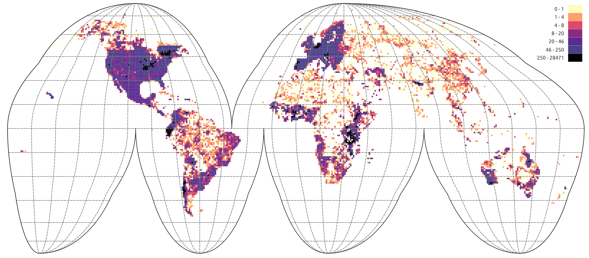
Remove points falling in the sea or similar:
#mask = terra::rast("./layers1km/lcv_landmask_esacci.lc.l4_c_1km_s0..0cm_2000..2015_v1.0.tif")
mask = terra::rast("/mnt/diskstation/data/LandGIS/layers250m/lcv_landmask_esacci.lc.l4_c_250m_s0..0cm_2000..2015_v1.0.tif")
ov.sprops <- terra::extract(mask, terra::vect(tot_sprops.pnts)) ## TAKES 2 mins
#summary(as.factor(ov.sprops[,2]))
if(sum(is.na(ov.sprops[,2]))>0 | sum(ov.sprops[,2]==2)>0){
rem.lst = which(is.na(ov.sprops[,2]) | ov.sprops[,2]==2 | ov.sprops[,2]==4)
rem.sp = tot_sprops.pnts$site_key[rem.lst]
tot_sprops.pnts = tot_sprops.pnts[-rem.lst,]
}
## final number of unique spatial locations:
nrow(tot_sprops.pnts)[1] 334560Histogram plots
Have in mind that some datasets only represent top-soil (e.g. LUCAS) while other cover the whole soil depth, hence higher mean values for some regions (Europe) should be considered within the context of diverse soil depths.
library(ggplot2)
ggplot(tot_sprops, aes(x=source_db, y=log1p(organic_carbon))) + geom_boxplot() + theme(axis.text.x = element_text(angle = 90, hjust = 1))Warning: Removed 483107 rows containing non-finite outside the scale range
(`stat_boxplot()`).
sel.db = c("ISRIC_WISE", "Canada_CUFS", "USDA_NCSS", "AfSPDB", "Canada_NPDB", "PRONASOLOS", "CSIRO_NatSoil")
openair::scatterPlot(tot_sprops[tot_sprops$source_db %in% sel.db,], x = "hzn_depth", y = "organic_carbon", method = "hexbin",
col = "increment", type = "source_db", log.x = TRUE, log.y=TRUE, ylab="SOC [g/kg]", xlab="depth in cm")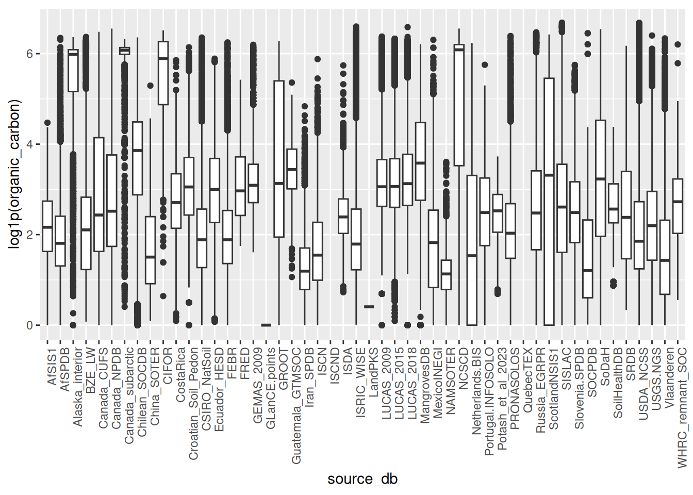
Note: FIADB includes litter and the soil samples are taken at fixed depths. Canada dataset also shows SOC content for peatlands.
ggplot(tot_sprops, aes(x=source_db, y=bulk_density_oven_dry)) + geom_boxplot() + theme(axis.text.x = element_text(angle = 90, hjust = 1))Warning: Removed 1217724 rows containing non-finite outside the scale range
(`stat_boxplot()`).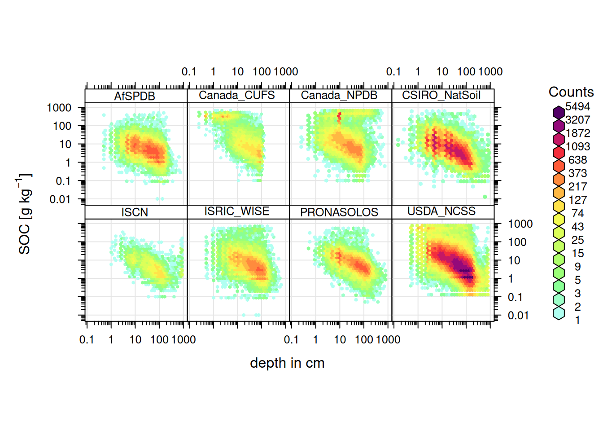
openair::scatterPlot(tot_sprops[tot_sprops$source_db %in% sel.db,], x = "organic_carbon", y = "bulk_density_oven_dry", method = "hexbin",
col = "increment", type = "source_db", log.x=TRUE, ylab="Bulk density", xlab="SOC [g/kg]")
ggplot(tot_sprops, aes(x=source_db, y=log1p(oc_d))) + geom_boxplot() + theme(axis.text.x = element_text(angle = 90, hjust = 1))Warning: Removed 1231389 rows containing non-finite outside the scale range
(`stat_boxplot()`).
sel.db0 = c("ISRIC_WISE", "Canada_CUFS", "USDA_NCSS", "AfSPDB", "PRONASOLOS", "CSIRO_NatSoil")
openair::scatterPlot(tot_sprops[tot_sprops$source_db %in% sel.db0,], x = "organic_carbon", y = "oc_d", method = "hexbin",
col = "increment", type = "source_db", log.x=TRUE, log.y=TRUE, xlab="SOC [g/kg]", ylab="SOC [kg/m3]")
Note: SOC (%) and SOC density (kg/m3) are almost linear relationship (curving toward fixed value), except for organic soils (especially litter) where relationship is slightly shifted.
openair::scatterPlot(tot_sprops[tot_sprops$source_db %in% sel.db0,], x = "organic_carbon",
y = "total_nitrogen_ncs", method = "hexbin",
col = "increment", type = "source_db", log.x=TRUE, log.y=TRUE,
xlab="SOC [g/kg]", ylab="N total [g/kg]")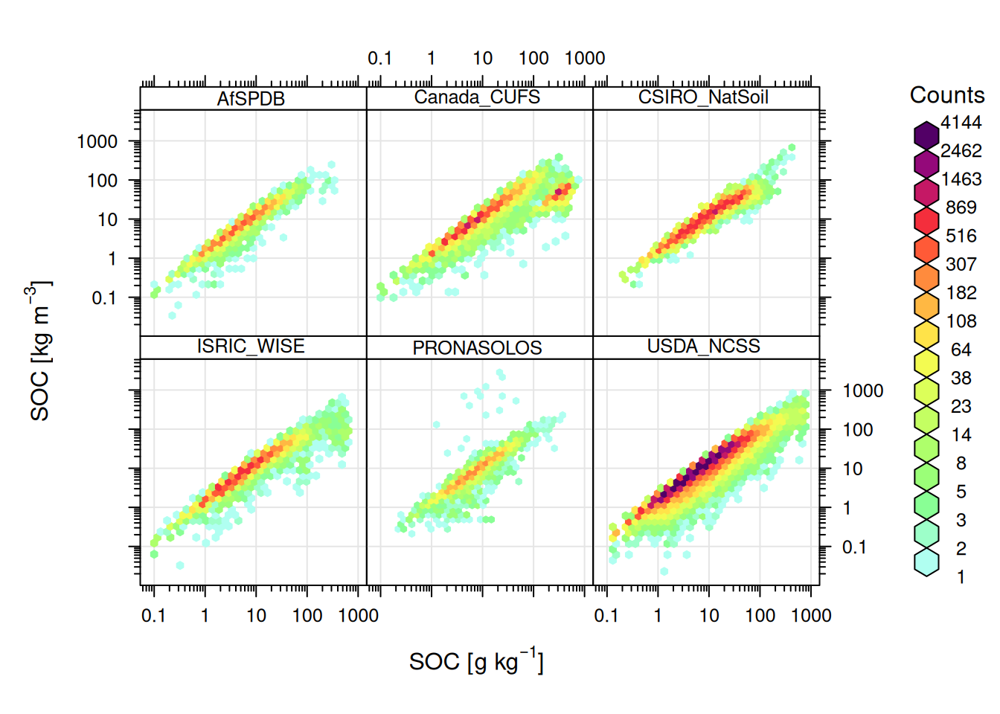
ggplot(tot_sprops, aes(x=source_db, y=ph_h2o)) + geom_boxplot() + theme(axis.text.x = element_text(angle = 90, hjust = 1))Warning: Removed 678237 rows containing non-finite outside the scale range
(`stat_boxplot()`).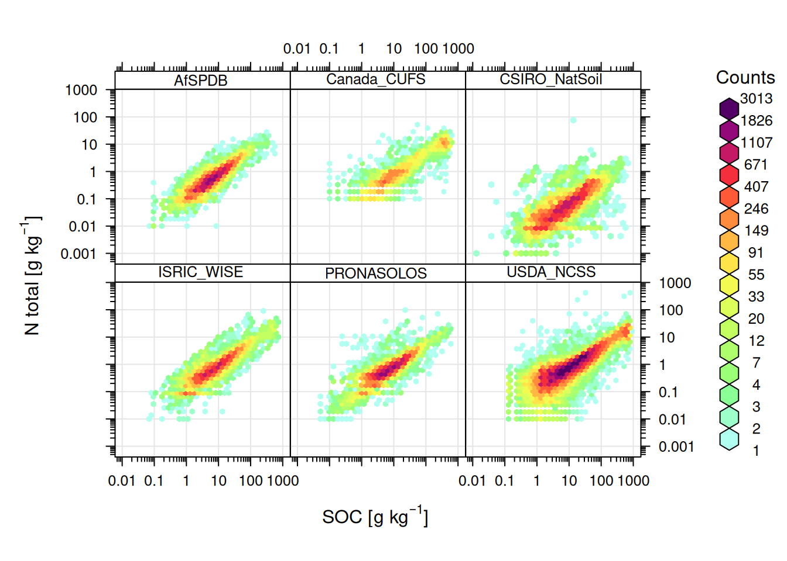
openair::scatterPlot(tot_sprops[tot_sprops$source_db %in% c("ISRIC_WISE", "USDA_NCSS", "AfSPDB", "CSIRO_NatSoil", "PRONASOLOS"),], x = "ph_kcl", y = "ph_h2o", method = "hexbin",
col = "increment", type = "source_db", xlab="soil pH KCl", ylab="soil pH H2O")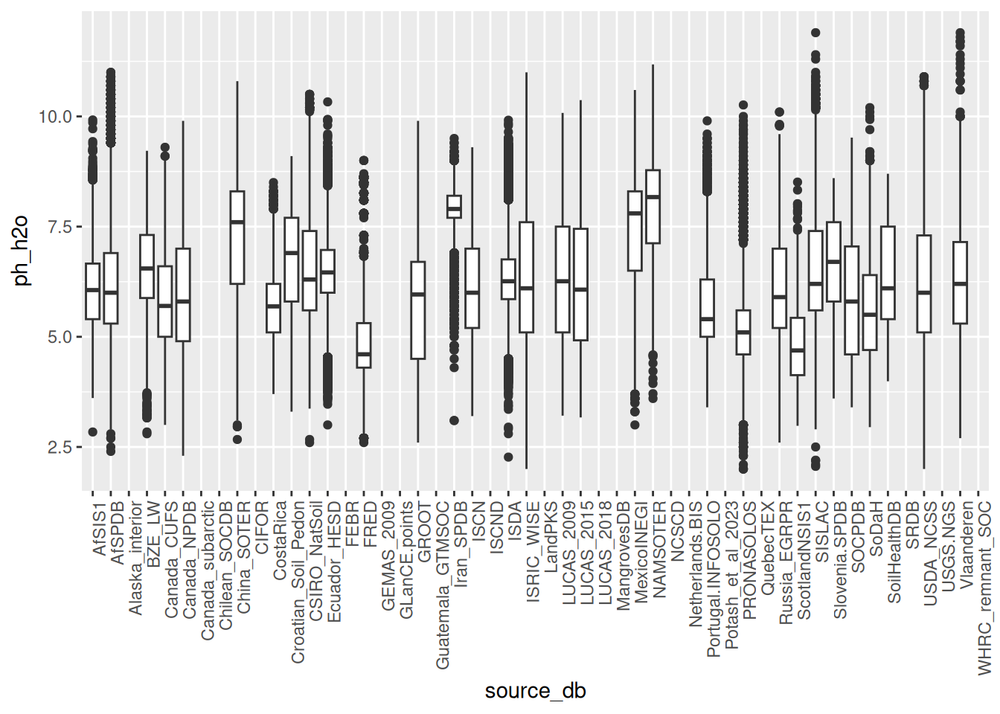
openair::scatterPlot(tot_sprops[tot_sprops$source_db %in% sel.db0,], x = "hzn_depth", y = "ph_h2o", method = "hexbin",
col = "increment", type = "source_db", log.x = TRUE, log.y=TRUE, ylab="soil pH H2O", xlab="depth in cm")
Note: there seems to be no apparent correlation between soil pH and soil depth.
openair::scatterPlot(tot_sprops[tot_sprops$source_db %in% c("ISRIC_WISE", "USDA_NCSS", "AfSPDB", "PRONASOLOS"),], x = "ph_h2o", y = "sum_of_cations_cec_pH_8_2", method = "hexbin",
col = "increment", type = "source_db", log.y=TRUE, ylab="CEC", xlab="soil pH H2O")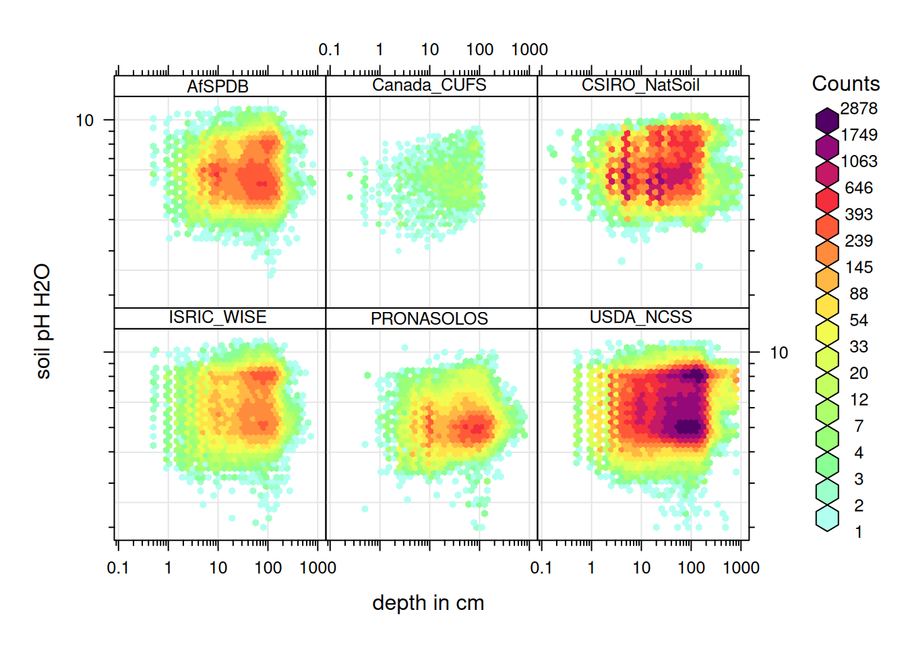
openair::scatterPlot(tot_sprops[tot_sprops$source_db %in% sel.db0,], x = "ph_h2o", y = "organic_carbon", method = "hexbin",
col = "increment", type = "source_db", log.y=TRUE, ylab="SOC [g/kg]", xlab="soil pH H2O")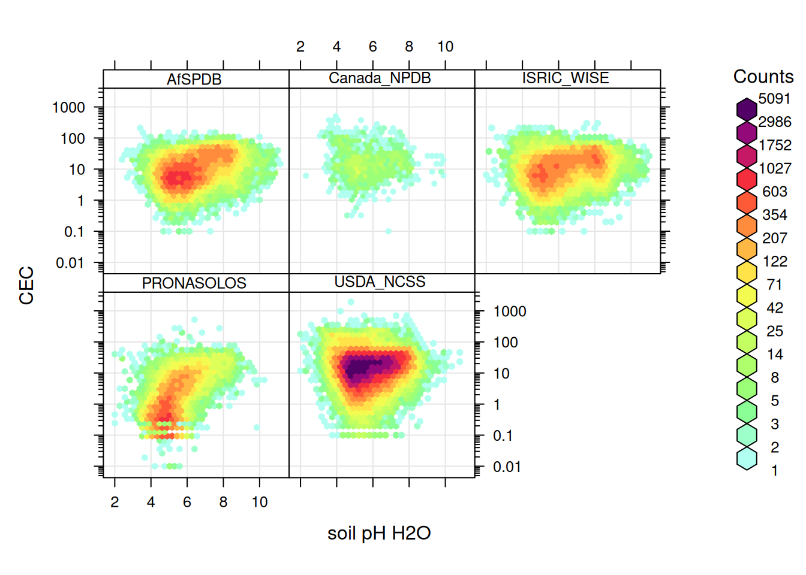
ggplot(tot_sprops, aes(x=source_db, y=clay_total)) + geom_boxplot() + theme(axis.text.x = element_text(angle = 90, hjust = 1))Warning: Removed 522289 rows containing non-finite outside the scale range
(`stat_boxplot()`).
openair::scatterPlot(tot_sprops[tot_sprops$source_db %in% sel.db0,], y = "clay_total", x = "sand_total", method = "hexbin",
col = "increment", type = "source_db", ylab="clay %", xlab="sand %")
ggplot(tot_sprops, aes(x=source_db, y=log1p(sum_of_cations_cec_pH_8_2))) + geom_boxplot() + theme(axis.text.x = element_text(angle = 90, hjust = 1))Warning in log1p(sum_of_cations_cec_pH_8_2): NaNs producedWarning: Removed 1051861 rows containing non-finite outside the scale range
(`stat_boxplot()`).ggplot(tot_sprops, aes(x=source_db, y=log1p(total_nitrogen_ncs))) + geom_boxplot() + theme(axis.text.x = element_text(angle = 90, hjust = 1))Warning in log1p(total_nitrogen_ncs): NaNs producedWarning: Removed 988469 rows containing non-finite outside the scale range
(`stat_boxplot()`).ggplot(tot_sprops, aes(x=source_db, y=log1p(k_ext))) + geom_boxplot() + theme(axis.text.x = element_text(angle = 90, hjust = 1))Warning in log1p(k_ext): NaNs producedWarning: Removed 832904 rows containing non-finite outside the scale range
(`stat_boxplot()`).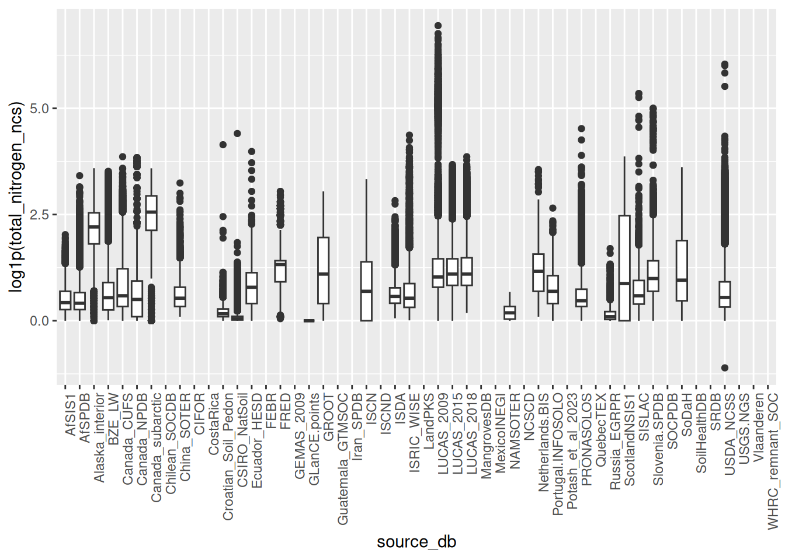
ggplot(tot_sprops, aes(x=source_db, y=log1p(ec_water_extractable))) + geom_boxplot() + theme(axis.text.x = element_text(angle = 90, hjust = 1))Warning: Removed 1343642 rows containing non-finite outside the scale range
(`stat_boxplot()`).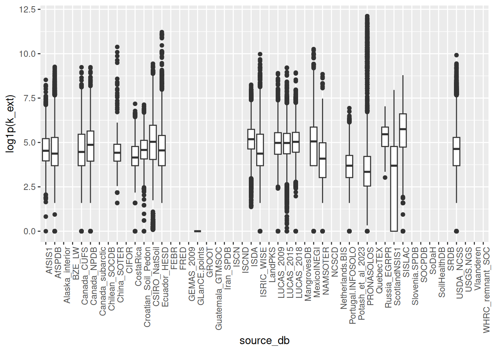
sprops_yrs = tot_sprops[!is.na(tot_sprops$site_obsdate),c("site_obsdate", "source_db", "organic_carbon")]
sprops_yrs$year = as.numeric(substr(x=sprops_yrs$site_obsdate, 1, 4))Warning: NAs introduced by coercionsprops_yrs$year = ifelse(sprops_yrs$year <1960, NA, ifelse(sprops_yrs$year>2024, NA, sprops_yrs$year))ggplot(sprops_yrs, aes(x=source_db, y=year)) + geom_boxplot() + theme(axis.text.x = element_text(angle = 90, hjust = 1))Warning: Removed 157859 rows containing non-finite outside the scale range
(`stat_boxplot()`).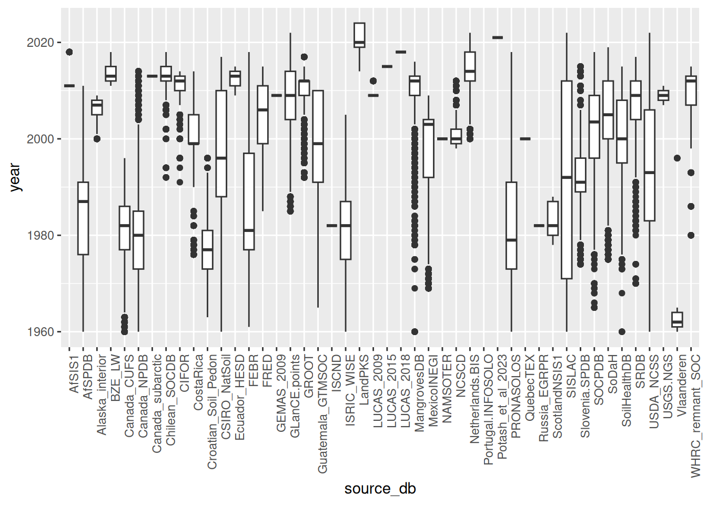
openair::scatterPlot(sprops_yrs[sprops_yrs$source_db %in% sel.db0,], y = "organic_carbon", x = "year", method = "hexbin",
col = "increment", type = "source_db", log.y=TRUE, ylab="SOC [g/kg]", xlab="Sampling year")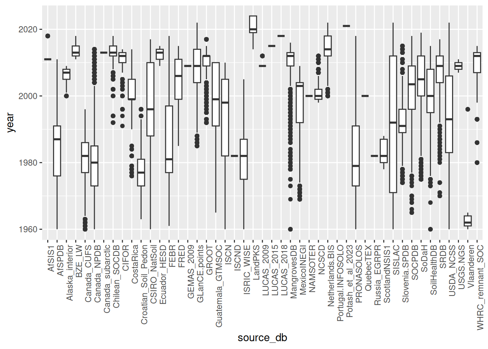
Convert to wide format
Add layer_sequence where missing since this is needed to be able to convert to wide format:
#summary(tot_sprops$layer_sequence)
tot_sprops$dsiteid = paste(tot_sprops$source_db, tot_sprops$site_key, tot_sprops$site_obsdate, sep="_")
if(!exists("l.s1")){
library(dplyr)
## Note: takes >2 mins
l.s1 <- tot_sprops[,c("dsiteid","hzn_depth")] %>% group_by(dsiteid) %>% mutate(layer_sequence.f = data.table::frank(hzn_depth, ties.method = "first"))
tot_sprops$layer_sequence.f = ifelse(is.na(tot_sprops$layer_sequence), l.s1$layer_sequence.f, tot_sprops$layer_sequence)
tot_sprops$layer_sequence.f = ifelse(tot_sprops$layer_sequence.f>6, 6, tot_sprops$layer_sequence.f)
}Convert long table to wide table format so that each depth gets unique column (note: the most computational / time-consuming step usually):
if(!exists("tot_sprops.w")){
library(data.table)
tot_sprops.w = data.table::dcast( as.data.table(tot_sprops),
formula = olc_id ~ layer_sequence.f,
value.var = c("uuid", hor.names[-which(hor.names %in% c("site_key", "layer_sequence"))]),
## "labsampnum", "hzn_desgn", "tex_psda"
#fun=function(x){ mean(x, na.rm=TRUE) },
## Note: does not work for characters
fun=function(x){ x[1] },
verbose = FALSE)
## remove "0" layers added automatically but containing no values
tot_sprops.w = tot_sprops.w[,grep("*_0$", colnames(tot_sprops.w)):=NULL]
}
Attaching package: 'data.table'The following object is masked from 'package:terra':
shiftThe following objects are masked from 'package:lubridate':
hour, isoweek, mday, minute, month, quarter, second, wday, week,
yday, yearThe following objects are masked from 'package:dplyr':
between, first, lastThe following object is masked from 'package:purrr':
transposetot_sprops_w.pnts = tot_sprops.pnts
tot_sprops_w.pnts@data = plyr::join(tot_sprops.pnts@data, tot_sprops.w)Joining by: olc_idWrite all soil profiles using a wide format:
sel.rm.pnts <- tot_sprops_w.pnts$source_db=="LUCAS_2009" | tot_sprops_w.pnts$source_db=="LUCAS_2015" | tot_sprops_w.pnts$site_key %in% mng.rm | tot_sprops_w.pnts$site_key %in% rem.sp
out.gpkg = "./out/gpkg/sol_chem.pnts_horizons.gpkg"
#unlink(out.gpkg)
if(!file.exists(out.gpkg)){
sf::st_write(st_as_sf(tot_sprops_w.pnts), "/mnt/diskstation/data/Soil_points/sol_chem.pnts_horizons.gpkg", "sol_chem.pnts_horizons", driver="GPKG")
sf::st_write(st_as_sf(tot_sprops_w.pnts[!sel.rm.pnts,]), out.gpkg, "sol_chem.pnts_horizons", driver="GPKG")
}Save RDS files
Remove points that are not allowed to be distributed publicly:
sel.rm <- tot_sprops$source_db=="LUCAS_2009" | tot_sprops$source_db=="LUCAS_2015" | tot_sprops$source_db=="LUCAS_2018" | tot_sprops$site_key %in% mng.rm | tot_sprops$site_key %in% rem.sp
tot_sprops.s = tot_sprops[!sel.rm,] Plot in Goode Homolozine projection and save final objects:
if(!file.exists("./img/sol_chem.pnts_sites.png")){
tot_sprops.pnts_sf <- st_as_sf(tot_sprops.pnts[1], crs=4326)
plot_gh(tot_sprops.pnts_sf, out.pdf="./img/sol_chem.pnts_sites.pdf")
## extremely slow --- takes 15mins
system("pdftoppm ./img/sol_chem.pnts_sites.pdf ./img/sol_chem.pnts_sites -png -f 1 -singlefile")
system("convert -crop 1280x575+36+114 ./img/sol_chem.pnts_sites.png ./img/sol_chem.pnts_sites.png")
}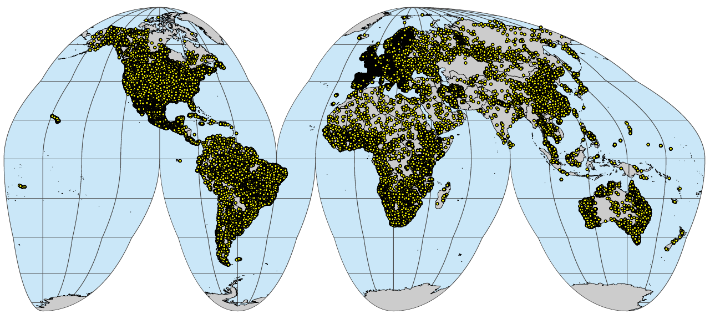
Save final analysis-ready objects:
saveRDS.gz(tot_sprops.s, "./out/rds/sol_chem.pnts_horizons.rds")
saveRDS.gz(tot_sprops, "/mnt/diskstation/data/Soil_points/sol_chem.pnts_horizons.rds")
saveRDS.gz(tot_sprops.pnts, "/mnt/diskstation/data/Soil_points/sol_chem.pnts_sites.rds")
#library(farff)
#writeARFF(tot_sprops.s, "./out/arff/sol_chem.pnts_horizons.arff", overwrite = TRUE)
## compressed CSV
#write.csv(tot_sprops.s, file=gzfile("./out/csv/sol_chem.pnts_horizons.csv.gz"))
## regression matrix:
#saveRDS.gz(rm.sol, "./out/rds/sol_chem.pnts_horizons_rm.rds")Save temp object:
save.image.pigz(file="soilchem.RData")